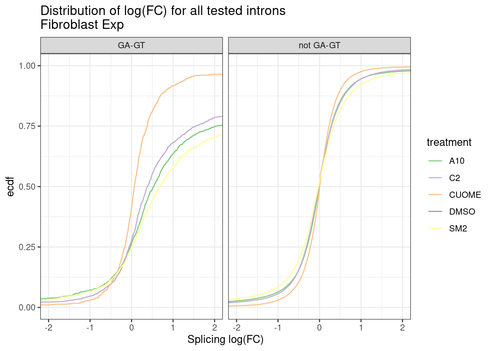
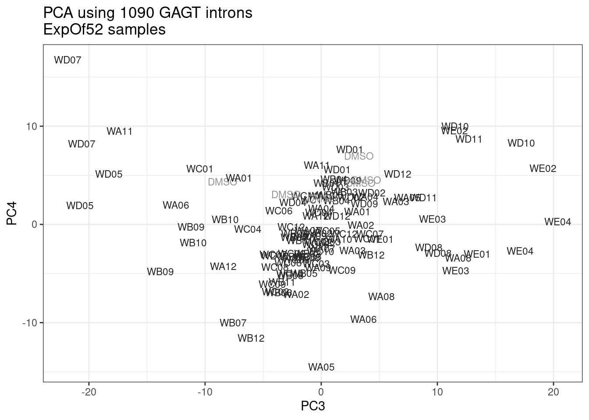
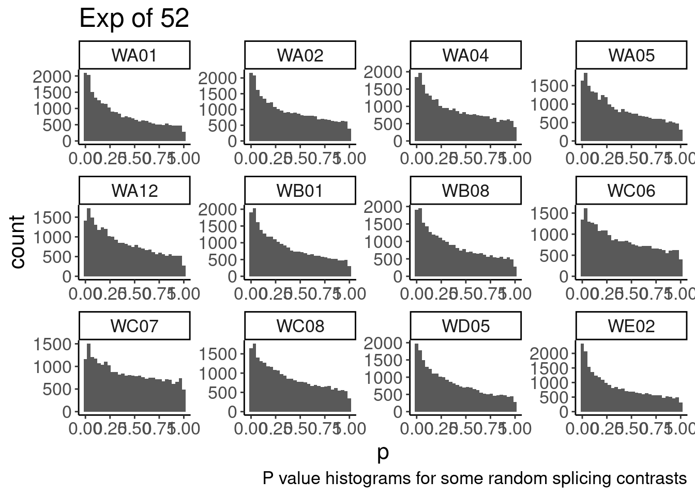
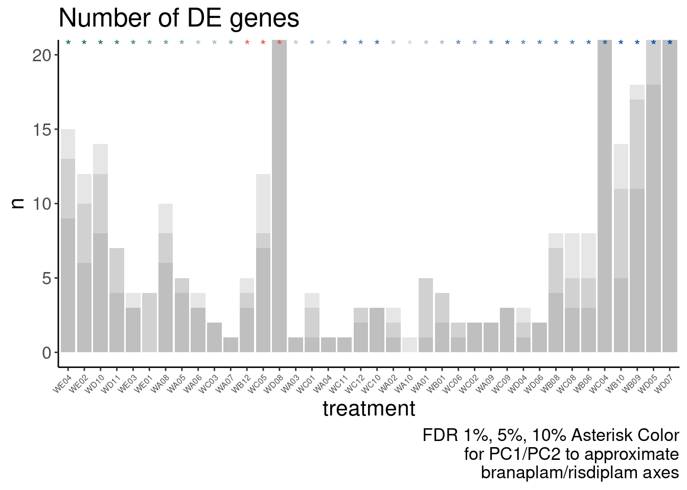
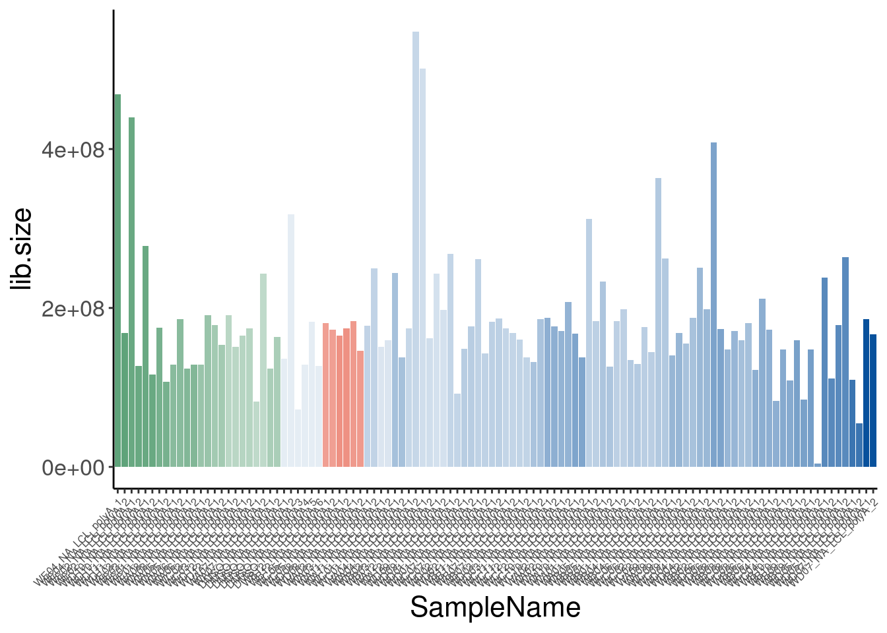
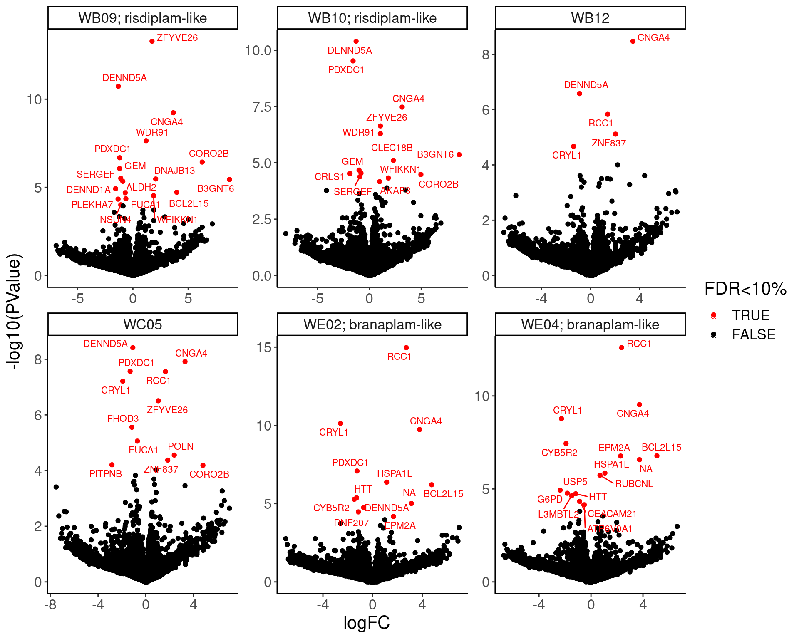
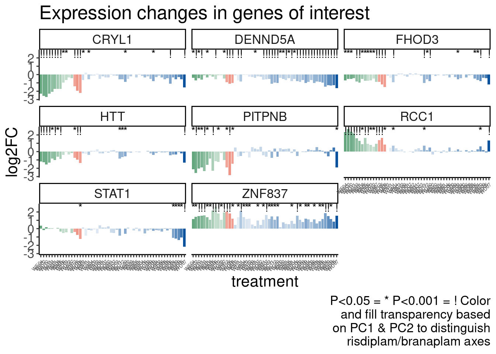
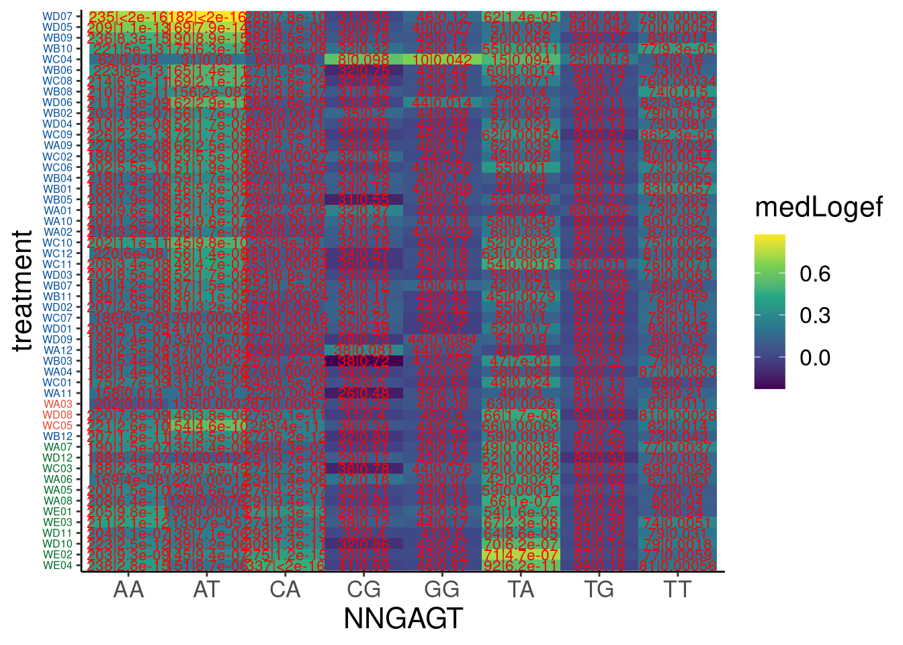
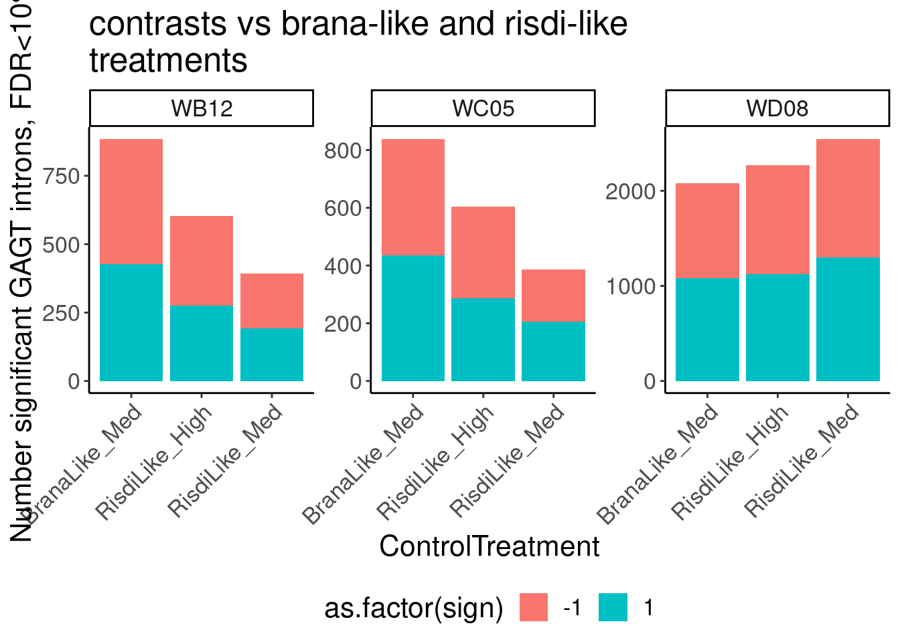
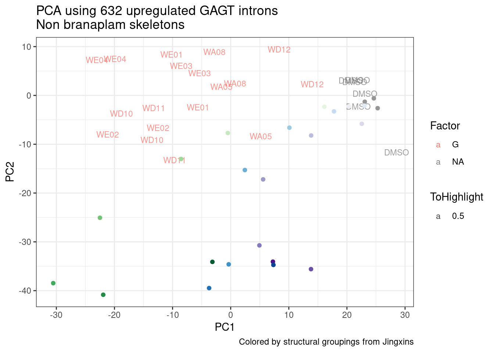

browse exp of 52
2023-02-21
Last updated: 2023-03-01
Checks: 5 2
Knit directory:
20211209_JingxinRNAseq/analysis/
This reproducible R Markdown analysis was created with workflowr (version 1.7.0). The Checks tab describes the reproducibility checks that were applied when the results were created. The Past versions tab lists the development history.
The R Markdown file has unstaged changes. To know which version of
the R Markdown file created these results, you’ll want to first commit
it to the Git repo. If you’re still working on the analysis, you can
ignore this warning. When you’re finished, you can run
wflow_publish to commit the R Markdown file and build the
HTML.
Great job! The global environment was empty. Objects defined in the global environment can affect the analysis in your R Markdown file in unknown ways. For reproduciblity it’s best to always run the code in an empty environment.
The command set.seed(19900924) was run prior to running
the code in the R Markdown file. Setting a seed ensures that any results
that rely on randomness, e.g. subsampling or permutations, are
reproducible.
Great job! Recording the operating system, R version, and package versions is critical for reproducibility.
Nice! There were no cached chunks for this analysis, so you can be confident that you successfully produced the results during this run.
Using absolute paths to the files within your workflowr project makes it difficult for you and others to run your code on a different machine. Change the absolute path(s) below to the suggested relative path(s) to make your code more reproducible.
| absolute | relative |
|---|---|
| /project2/yangili1/bjf79/20211209_JingxinRNAseq/code/bigwigs/unstranded/(.+?).bw | ../code/bigwigs/unstranded/(.+?).bw |
Great! You are using Git for version control. Tracking code development and connecting the code version to the results is critical for reproducibility.
The results in this page were generated with repository version e996344. See the Past versions tab to see a history of the changes made to the R Markdown and HTML files.
Note that you need to be careful to ensure that all relevant files for
the analysis have been committed to Git prior to generating the results
(you can use wflow_publish or
wflow_git_commit). workflowr only checks the R Markdown
file, but you know if there are other scripts or data files that it
depends on. Below is the status of the Git repository when the results
were generated:
Ignored files:
Ignored: .DS_Store
Ignored: .Rhistory
Ignored: .Rproj.user/
Ignored: analysis/.RData
Ignored: analysis/.Rhistory
Ignored: analysis/20220707_TitrationSeries_DE_testing.nb.html
Ignored: code/.DS_Store
Ignored: code/._DOCK7.pdf
Ignored: code/._DOCK7_DMSO1.pdf
Ignored: code/._DOCK7_SM2_1.pdf
Ignored: code/._FKTN_DMSO_1.pdf
Ignored: code/._FKTN_SM2_1.pdf
Ignored: code/._MAPT.pdf
Ignored: code/._PKD1_DMSO_1.pdf
Ignored: code/._PKD1_SM2_1.pdf
Ignored: code/.snakemake/
Ignored: code/1KG_HighCoverageCalls.samplelist.txt
Ignored: code/5ssSeqs.tab
Ignored: code/Alignments/
Ignored: code/ChemCLIP/
Ignored: code/ClinVar/
Ignored: code/DE_testing/
Ignored: code/DE_tests.mat.counts.gz
Ignored: code/DE_tests.txt.gz
Ignored: code/DataNotToCommit/
Ignored: code/DoseResponseData/
Ignored: code/Fastq/
Ignored: code/FastqFastp/
Ignored: code/FragLenths/
Ignored: code/Meme/
Ignored: code/Multiqc/
Ignored: code/OMIM/
Ignored: code/OldBigWigs/
Ignored: code/PhyloP/
Ignored: code/QC/
Ignored: code/ReferenceGenomes/
Ignored: code/Session.vim
Ignored: code/SplicingAnalysis/
Ignored: code/TracksSession
Ignored: code/bigwigs/
Ignored: code/featureCounts/
Ignored: code/figs/
Ignored: code/geena/
Ignored: code/hg38ToMm39.over.chain.gz
Ignored: code/igv_session.template.xml
Ignored: code/igv_session.xml
Ignored: code/log
Ignored: code/logs/
Ignored: code/rstudio-server.job
Ignored: code/scratch/
Ignored: code/test.txt.gz
Ignored: code/testPlottingWithMyScript.ForJingxin.sh
Ignored: code/testPlottingWithMyScript.ForJingxin2.sh
Ignored: code/testPlottingWithMyScript.ForJingxin3.sh
Ignored: code/testPlottingWithMyScript.ForJingxin4.sh
Ignored: code/testPlottingWithMyScript.sh
Ignored: data/~$52CompoundsTempPlateLayoutForPipettingConvenience.xlsx
Ignored: output/._PioritizedIntronTargets.pdf
Unstaged changes:
Modified: analysis/20220221_ExploreExpOf52.Rmd
Note that any generated files, e.g. HTML, png, CSS, etc., are not included in this status report because it is ok for generated content to have uncommitted changes.
These are the previous versions of the repository in which changes were
made to the R Markdown
(analysis/20220221_ExploreExpOf52.Rmd) and HTML
(docs/20220221_ExploreExpOf52.html) files. If you’ve
configured a remote Git repository (see ?wflow_git_remote),
click on the hyperlinks in the table below to view the files as they
were in that past version.
| File | Version | Author | Date | Message |
|---|---|---|---|---|
| Rmd | e996344 | Benjmain Fair | 2023-02-28 | update 52exp nb |
| html | e996344 | Benjmain Fair | 2023-02-28 | update 52exp nb |
| Rmd | 0e2a360 | Benjmain Fair | 2023-02-24 | update exp52 notebook |
| html | 0e2a360 | Benjmain Fair | 2023-02-24 | update exp52 notebook |
| Rmd | a8c9152 | Benjmain Fair | 2023-02-23 | update site |
| html | a8c9152 | Benjmain Fair | 2023-02-23 | update site |
| Rmd | 94cef29 | Benjmain Fair | 2023-02-22 | added Rmd for 52Exp |
knitr::opts_chunk$set(echo = TRUE, warning = F, message = F)
library(tidyverse)── Attaching packages ─────────────────────────────────────── tidyverse 1.3.1 ──✔ ggplot2 3.3.6 ✔ purrr 0.3.4
✔ tibble 3.1.7 ✔ dplyr 1.0.9
✔ tidyr 1.2.0 ✔ stringr 1.4.0
✔ readr 2.1.2 ✔ forcats 0.5.1── Conflicts ────────────────────────────────────────── tidyverse_conflicts() ──
✖ dplyr::filter() masks stats::filter()
✖ dplyr::lag() masks stats::lag()library(RColorBrewer)
library(data.table)
Attaching package: 'data.table'The following objects are masked from 'package:dplyr':
between, first, lastThe following object is masked from 'package:purrr':
transposelibrary(edgeR)Loading required package: limmalibrary(qvalue)
library(Heatplus)
library(gplots)
Attaching package: 'gplots'The following object is masked from 'package:stats':
lowesslibrary(ggrepel)
library(knitr)
# define some useful funcs
sample_n_of <- function(data, size, ...) {
dots <- quos(...)
group_ids <- data %>%
group_by(!!! dots) %>%
group_indices()
sampled_groups <- sample(unique(group_ids), size)
data %>%
filter(group_ids %in% sampled_groups)
}
# Set theme
theme_set(
theme_classic() +
theme(text=element_text(size=16, family="Helvetica")))
# I use layer a lot, to rotate long x-axis labels
Rotate_x_labels <- theme(axis.text.x = element_text(angle = 45, vjust = 1, hjust=1))
#test plot
ggplot(mtcars, aes(x=mpg, y=cyl)) +
geom_point()
| Version | Author | Date |
|---|---|---|
| a8c9152 | Benjmain Fair | 2023-02-23 |
Intro
Jingxin’s lab has synthesized (or maybe contracted out synthesis of) hundred(s) branaplam/risdiplam derivatives. They screened them for splice-modifying activity using a SMN2 minigene I believe, resulting in 52 compounds that they send Gabi and I for further experiments: We recieved the 52 compounds in a 96 well plate, and in subsequent plots we are naming them just by the well position they were shipped in (ie A01, A02, …, E04). The molar concentration of each molecule was determined by Jingxin’s lab and shipped at 500x concentration. I think molar concentration is based on EC90 of SMN2 splice modifying activity in their initial screen. We grew LCLs cells to a density of approximately 1M cells per mL, and split into seperate flasks each containing 7mL: 2 seperate replicate flasks for each molecule treatment, and 6 flasks of DMSO control (total of 110 samples), and applied 14uL of treatment. The following day, cells were collected by centrifugation, supernate was discarded and stored in 1mL of Trizol at -20C for futher processing. We extracted RNA by phase seperation (Trizol manufacturer’s instructions). The top phase was mixed with an equal volume of ethanol, and applied to Zymo5 nucleic-acid purification columns. After two washes, we performed on-column DNAse I treatment, followed by an extra application of binding buffer and two more washes, and finally elution in water. Qubit quantification was used to quantify RNA before using NEBNext ultra directional ii RNAseq kits with NEB’s polyA capture kit. There are a couple optional steps in the kit preparation: We fragmented the RNA for only5 minutes, and performed size selection (step 6.3) to preferentially obtain longer insert sizes. The libraries were intially sequenced on a MiSeq (~20M reads total), to determine optimal re-pooling volumes (aiming for equal representation of each sample) and to confirm long insert sizes to justify the 150+150 paired end sequencing that we ended up doing on the NovaSeq S4 (~10B reads total). In practice, I noticed that one sample had very very low number of reads, and will likely have to be dropped from analysis (see below). Also, sample pooling volumes weren’t as perfect as I would have hoped, but I think they are acceptable. see below.
In the remainder of this notebook, I will explore this data is ways similar to my previous notebooks regarding Jingxin’s RNAseq - analyses that I can do quickly. The pre-processing that I have done leading up to this notebook includes read trimming (fastp), alignment with STAR (I used single pass mode, but perhaps before publication it might be worth aligning all samples and re-aligning samples for STAR’s “two-pass” procedure for most sensitive identification of unannotated junctions), gene counting with featureCounts, differential expression analysis with edgeR (a separate contrast for each treatment, comparing to the same 6 DMSO replicates ), splicing quantification and differential testing with leafcutter (again, comparing each treatment to 6 DMSO replicates).
Reads per sample
Let’s just consider protein coding genes, as written out in my reformatted featureCounts output, which I will read in here. I will occasionally read in data from previous experiments too for comparison.
# read in sample metadata
Metadata.ExpOf52 <- read_tsv("../code/config/samples.52MoleculeExperiment.tsv") %>%
mutate(cell.type = "LCL", libType="polyA", rep=BioRep, old.sample.name=SampleID, dose.nM=NA) %>%
mutate(treatment = if_else(Treatment=="DMSO", "DMSO", paste0("W", Treatment))) %>%
dplyr::select(treatment, cell.type, dose.nM, libType, rep, old.sample.name) %>%
mutate(SampleName = paste(treatment, dose.nM, cell.type, libType, rep, sep = "_"))
Metadata.PreviousExperiments <- read_tsv("../code/bigwigs/BigwigList.tsv",col_names = c("SampleName", "bigwig", "group", "strand")) %>%
filter(strand==".") %>%
dplyr::select(-strand) %>%
mutate(old.sample.name = str_replace(bigwig, "/project2/yangili1/bjf79/20211209_JingxinRNAseq/code/bigwigs/unstranded/(.+?).bw", "\\1")) %>%
separate(SampleName, into=c("treatment", "dose.nM", "cell.type", "libType", "rep"), convert=T, remove=F, sep="_") %>%
left_join(
read_tsv("../code/bigwigs/BigwigList.groups.tsv", col_names = c("group", "color", "bed", "supergroup")),
by="group"
)
FullMetadata <- bind_rows(Metadata.ExpOf52, Metadata.PreviousExperiments) %>%
mutate(Experiment = case_when(
cell.type == "Fibroblast" ~ "Single high dose fibroblast",
startsWith(old.sample.name, "TitrationExp") ~ "Dose response titration",
startsWith(old.sample.name, "chRNA") ~ "nascent RNA profiling",
startsWith(old.sample.name, "NewMolecule") ~ "Single high dose LCL"
)) %>%
mutate(color = case_when(
treatment == "DMSO" ~ "#969696",
Experiment == "Single high dose LCL" ~ "#252525",
TRUE ~ color
)) %>%
mutate(leafcutter.name = str_replace_all(old.sample.name, "-", "."))
gene.counts <- read_tsv("../code/DE_testing/ExpOf52_Counts.mat.txt.gz") %>%
column_to_rownames("Geneid") %>%
DGEList() %>%
calcNormFactors()
counts.plot.dat <- gene.counts$samples %>%
rownames_to_column("old.sample.name") %>%
inner_join(FullMetadata, by="old.sample.name") %>%
mutate(dose.nM = case_when(
treatment == "DMSO" ~ "NA",
cell.type == "Fibroblast" ~ "CC50 dose",
Experiment == "Single high dose LCL" ~ "SMN_EC90 dose",
TRUE ~ as.character(dose.nM)
)) %>%
mutate(label = dose.nM) %>%
arrange(Experiment, treatment, dose.nM)
counts.plot.labels <- counts.plot.dat %>%
dplyr::select(old.sample.name, label) %>% deframe()
counts.plot.dat %>%
filter(Experiment=="Single high dose LCL") old.sample.name group.x lib.size norm.factors treatment cell.type
1 NewMolecule.E05-1 1 135983671 0.9401592 DMSO LCL
2 NewMolecule.E06-2 1 317779082 0.6907965 DMSO LCL
3 NewMolecule.E07-3 1 72297626 0.9693137 DMSO LCL
4 NewMolecule.E05-4 1 129001545 0.8532237 DMSO LCL
5 NewMolecule.E06-5 1 182905676 0.9465600 DMSO LCL
6 NewMolecule.E07-6 1 126772689 0.7745714 DMSO LCL
7 NewMolecule.A01-1 1 183728666 0.9614895 WA01 LCL
8 NewMolecule.A01-2 1 198632154 0.6962443 WA01 LCL
9 NewMolecule.A02-1 1 312182548 0.9826652 WA02 LCL
10 NewMolecule.A02-2 1 183395930 0.9897056 WA02 LCL
11 NewMolecule.A03-1 1 177704482 0.9400929 WA03 LCL
12 NewMolecule.A03-2 1 249934473 0.9561665 WA03 LCL
13 NewMolecule.A04-1 1 174653379 0.9222987 WA04 LCL
14 NewMolecule.A04-2 1 548033015 0.7589615 WA04 LCL
15 NewMolecule.A05-1 1 178435056 0.8614118 WA05 LCL
16 NewMolecule.A05-2 1 153251808 0.7788587 WA05 LCL
17 NewMolecule.A06-1 1 190563753 1.0080036 WA06 LCL
18 NewMolecule.A06-2 1 151314210 0.6000523 WA06 LCL
19 NewMolecule.A07-1 1 123503847 0.7953700 WA07 LCL
20 NewMolecule.A07-2 1 163742739 0.7842479 WA07 LCL
21 NewMolecule.A08-1 1 128532357 0.9945259 WA08 LCL
22 NewMolecule.A08-2 1 191110810 0.8467907 WA08 LCL
23 NewMolecule.A09-1 1 250617437 0.9637614 WA09 LCL
24 NewMolecule.A09-2 1 198092385 0.8870051 WA09 LCL
25 NewMolecule.A10-1 1 233224920 0.9467818 WA10 LCL
26 NewMolecule.A10-2 1 125874155 0.8707373 WA10 LCL
27 NewMolecule.A11-1 1 151421732 0.7724431 WA11 LCL
28 NewMolecule.A11-2 1 159203721 0.6239473 WA11 LCL
29 NewMolecule.A12-1 1 242979912 0.8638066 WA12 LCL
30 NewMolecule.A12-2 1 197958602 0.6814641 WA12 LCL
31 NewMolecule.B01-1 1 176245134 0.8257129 WB01 LCL
32 NewMolecule.B01-2 1 144824255 0.7994645 WB01 LCL
33 NewMolecule.B02-1 1 159560647 0.9525037 WB02 LCL
34 NewMolecule.B02-2 1 181332941 0.8442828 WB02 LCL
35 NewMolecule.B03-1 1 501440283 0.9212623 WB03 LCL
36 NewMolecule.B03-2 1 161562099 0.8031914 WB03 LCL
37 NewMolecule.B04-1 1 363641016 0.9203852 WB04 LCL
38 NewMolecule.B04-2 1 262007104 0.9186215 WB04 LCL
39 NewMolecule.B05-1 1 134091835 0.9803464 WB05 LCL
40 NewMolecule.B05-2 1 129596579 0.9316498 WB05 LCL
41 NewMolecule.B06-1 1 159743971 0.9776352 WB06 LCL
42 NewMolecule.B06-2 1 84886553 0.9970722 WB06 LCL
43 NewMolecule.B07-1 1 160357588 0.8486932 WB07 LCL
44 NewMolecule.B07-2 1 137933937 0.7173181 WB07 LCL
45 NewMolecule.B08-1 1 172609974 1.0109620 WB08 LCL
46 NewMolecule.B08-2 1 82813127 0.9109179 WB08 LCL
47 NewMolecule.B09-1 1 178767085 0.9536717 WB09 LCL
48 NewMolecule.B09-2 1 264104038 0.8378014 WB09 LCL
49 NewMolecule.B10-1 1 238413032 0.8317911 WB10 LCL
50 NewMolecule.B10-2 1 110987864 0.8812357 WB10 LCL
51 NewMolecule.B11-1 1 174607137 0.8259890 WB11 LCL
52 NewMolecule.B11-2 1 168465700 0.7937547 WB11 LCL
53 NewMolecule.B12-1 1 181271838 0.9129708 WB12 LCL
54 NewMolecule.B12-2 1 172779925 0.6964442 WB12 LCL
55 NewMolecule.C01-1 1 244342093 0.9665939 WC01 LCL
56 NewMolecule.C01-2 1 138058013 0.6168776 WC01 LCL
57 NewMolecule.C02-1 1 154946142 0.9809795 WC02 LCL
58 NewMolecule.C02-2 1 187610831 0.7841767 WC02 LCL
59 NewMolecule.C03-1 1 165446125 0.8161006 WC03 LCL
60 NewMolecule.C03-2 1 174266943 0.7833399 WC03 LCL
61 NewMolecule.C04-1 1 148019761 0.9639406 WC04 LCL
62 NewMolecule.C04-2 1 4025684 0.8837338 WC04 LCL
63 NewMolecule.C05-1 1 165455144 0.8796405 WC05 LCL
64 NewMolecule.C05-2 1 174718878 0.7735656 WC05 LCL
65 NewMolecule.C06-1 1 140277168 0.9390193 WC06 LCL
66 NewMolecule.C06-2 1 168324527 0.7628401 WC06 LCL
67 NewMolecule.C07-1 1 261153647 0.9823486 WC07 LCL
68 NewMolecule.C07-2 1 143163993 0.8017761 WC07 LCL
69 NewMolecule.C08-1 1 147676792 0.9694391 WC08 LCL
70 NewMolecule.C08-2 1 108832959 0.9102188 WC08 LCL
71 NewMolecule.C09-1 1 408007760 0.9806656 WC09 LCL
72 NewMolecule.C09-2 1 173089550 0.8327315 WC09 LCL
73 NewMolecule.C10-1 1 167604989 0.9559976 WC10 LCL
74 NewMolecule.C10-2 1 137455261 0.8389724 WC10 LCL
75 NewMolecule.C11-1 1 187805337 0.8355439 WC11 LCL
76 NewMolecule.C11-2 1 177066236 0.7906897 WC11 LCL
77 NewMolecule.C12-1 1 171294673 0.8092100 WC12 LCL
78 NewMolecule.C12-2 1 207161226 0.9439126 WC12 LCL
79 NewMolecule.D01-1 1 148474840 0.8973409 WD01 LCL
80 NewMolecule.D01-2 1 176919098 0.8387012 WD01 LCL
81 NewMolecule.D02-1 1 182860841 0.9258999 WD02 LCL
82 NewMolecule.D02-2 1 186819768 0.9105906 WD02 LCL
83 NewMolecule.D03-1 1 131745383 0.8897832 WD03 LCL
84 NewMolecule.D03-2 1 186120074 0.8657665 WD03 LCL
85 NewMolecule.D04-1 1 147445482 0.9188042 WD04 LCL
86 NewMolecule.D04-2 1 170662427 0.8789052 WD04 LCL
87 NewMolecule.D05-1 1 109693197 0.9849873 WD05 LCL
88 NewMolecule.D05-2 1 55187567 0.9279879 WD05 LCL
89 NewMolecule.D06-1 1 122174618 0.9893905 WD06 LCL
90 NewMolecule.D06-2 1 211272103 0.7724558 WD06 LCL
91 NewMolecule.D07-1 1 186303795 0.9672297 WD07 LCL
92 NewMolecule.D07-2 1 167009833 0.7753588 WD07 LCL
93 NewMolecule.D08-1 1 183462792 1.0004535 WD08 LCL
94 NewMolecule.D08-2 1 146479099 1.0033560 WD08 LCL
95 NewMolecule.D09-1 1 268002864 0.9646019 WD09 LCL
96 NewMolecule.D09-2 1 91945124 0.9215091 WD09 LCL
97 NewMolecule.D10-1 1 278370909 0.9590191 WD10 LCL
98 NewMolecule.D10-2 1 116412533 0.8802938 WD10 LCL
99 NewMolecule.D11-1 1 175024946 0.9210652 WD11 LCL
100 NewMolecule.D11-2 1 106706050 0.8053986 WD11 LCL
101 NewMolecule.D12-1 1 82466922 0.8892412 WD12 LCL
102 NewMolecule.D12-2 1 243296548 0.7777244 WD12 LCL
103 NewMolecule.E01-1 1 123440553 0.9716875 WE01 LCL
104 NewMolecule.E01-2 1 128461448 0.7058736 WE01 LCL
105 NewMolecule.E02-1 1 440121482 0.9524480 WE02 LCL
106 NewMolecule.E02-2 1 127160501 0.7928684 WE02 LCL
107 NewMolecule.E03-1 1 128754472 0.9062433 WE03 LCL
108 NewMolecule.E03-2 1 185922881 0.8547261 WE03 LCL
109 NewMolecule.E04-1 1 468869018 0.9580410 WE04 LCL
110 NewMolecule.E04-2 1 168588670 0.9200381 WE04 LCL
dose.nM libType rep SampleName bigwig group.y color bed
1 NA polyA 1 DMSO_NA_LCL_polyA_1 <NA> <NA> #969696 <NA>
2 NA polyA 2 DMSO_NA_LCL_polyA_2 <NA> <NA> #969696 <NA>
3 NA polyA 3 DMSO_NA_LCL_polyA_3 <NA> <NA> #969696 <NA>
4 NA polyA 4 DMSO_NA_LCL_polyA_4 <NA> <NA> #969696 <NA>
5 NA polyA 5 DMSO_NA_LCL_polyA_5 <NA> <NA> #969696 <NA>
6 NA polyA 6 DMSO_NA_LCL_polyA_6 <NA> <NA> #969696 <NA>
7 SMN_EC90 dose polyA 1 WA01_NA_LCL_polyA_1 <NA> <NA> #252525 <NA>
8 SMN_EC90 dose polyA 2 WA01_NA_LCL_polyA_2 <NA> <NA> #252525 <NA>
9 SMN_EC90 dose polyA 1 WA02_NA_LCL_polyA_1 <NA> <NA> #252525 <NA>
10 SMN_EC90 dose polyA 2 WA02_NA_LCL_polyA_2 <NA> <NA> #252525 <NA>
11 SMN_EC90 dose polyA 1 WA03_NA_LCL_polyA_1 <NA> <NA> #252525 <NA>
12 SMN_EC90 dose polyA 2 WA03_NA_LCL_polyA_2 <NA> <NA> #252525 <NA>
13 SMN_EC90 dose polyA 1 WA04_NA_LCL_polyA_1 <NA> <NA> #252525 <NA>
14 SMN_EC90 dose polyA 2 WA04_NA_LCL_polyA_2 <NA> <NA> #252525 <NA>
15 SMN_EC90 dose polyA 1 WA05_NA_LCL_polyA_1 <NA> <NA> #252525 <NA>
16 SMN_EC90 dose polyA 2 WA05_NA_LCL_polyA_2 <NA> <NA> #252525 <NA>
17 SMN_EC90 dose polyA 1 WA06_NA_LCL_polyA_1 <NA> <NA> #252525 <NA>
18 SMN_EC90 dose polyA 2 WA06_NA_LCL_polyA_2 <NA> <NA> #252525 <NA>
19 SMN_EC90 dose polyA 1 WA07_NA_LCL_polyA_1 <NA> <NA> #252525 <NA>
20 SMN_EC90 dose polyA 2 WA07_NA_LCL_polyA_2 <NA> <NA> #252525 <NA>
21 SMN_EC90 dose polyA 1 WA08_NA_LCL_polyA_1 <NA> <NA> #252525 <NA>
22 SMN_EC90 dose polyA 2 WA08_NA_LCL_polyA_2 <NA> <NA> #252525 <NA>
23 SMN_EC90 dose polyA 1 WA09_NA_LCL_polyA_1 <NA> <NA> #252525 <NA>
24 SMN_EC90 dose polyA 2 WA09_NA_LCL_polyA_2 <NA> <NA> #252525 <NA>
25 SMN_EC90 dose polyA 1 WA10_NA_LCL_polyA_1 <NA> <NA> #252525 <NA>
26 SMN_EC90 dose polyA 2 WA10_NA_LCL_polyA_2 <NA> <NA> #252525 <NA>
27 SMN_EC90 dose polyA 1 WA11_NA_LCL_polyA_1 <NA> <NA> #252525 <NA>
28 SMN_EC90 dose polyA 2 WA11_NA_LCL_polyA_2 <NA> <NA> #252525 <NA>
29 SMN_EC90 dose polyA 1 WA12_NA_LCL_polyA_1 <NA> <NA> #252525 <NA>
30 SMN_EC90 dose polyA 2 WA12_NA_LCL_polyA_2 <NA> <NA> #252525 <NA>
31 SMN_EC90 dose polyA 1 WB01_NA_LCL_polyA_1 <NA> <NA> #252525 <NA>
32 SMN_EC90 dose polyA 2 WB01_NA_LCL_polyA_2 <NA> <NA> #252525 <NA>
33 SMN_EC90 dose polyA 1 WB02_NA_LCL_polyA_1 <NA> <NA> #252525 <NA>
34 SMN_EC90 dose polyA 2 WB02_NA_LCL_polyA_2 <NA> <NA> #252525 <NA>
35 SMN_EC90 dose polyA 1 WB03_NA_LCL_polyA_1 <NA> <NA> #252525 <NA>
36 SMN_EC90 dose polyA 2 WB03_NA_LCL_polyA_2 <NA> <NA> #252525 <NA>
37 SMN_EC90 dose polyA 1 WB04_NA_LCL_polyA_1 <NA> <NA> #252525 <NA>
38 SMN_EC90 dose polyA 2 WB04_NA_LCL_polyA_2 <NA> <NA> #252525 <NA>
39 SMN_EC90 dose polyA 1 WB05_NA_LCL_polyA_1 <NA> <NA> #252525 <NA>
40 SMN_EC90 dose polyA 2 WB05_NA_LCL_polyA_2 <NA> <NA> #252525 <NA>
41 SMN_EC90 dose polyA 1 WB06_NA_LCL_polyA_1 <NA> <NA> #252525 <NA>
42 SMN_EC90 dose polyA 2 WB06_NA_LCL_polyA_2 <NA> <NA> #252525 <NA>
43 SMN_EC90 dose polyA 1 WB07_NA_LCL_polyA_1 <NA> <NA> #252525 <NA>
44 SMN_EC90 dose polyA 2 WB07_NA_LCL_polyA_2 <NA> <NA> #252525 <NA>
45 SMN_EC90 dose polyA 1 WB08_NA_LCL_polyA_1 <NA> <NA> #252525 <NA>
46 SMN_EC90 dose polyA 2 WB08_NA_LCL_polyA_2 <NA> <NA> #252525 <NA>
47 SMN_EC90 dose polyA 1 WB09_NA_LCL_polyA_1 <NA> <NA> #252525 <NA>
48 SMN_EC90 dose polyA 2 WB09_NA_LCL_polyA_2 <NA> <NA> #252525 <NA>
49 SMN_EC90 dose polyA 1 WB10_NA_LCL_polyA_1 <NA> <NA> #252525 <NA>
50 SMN_EC90 dose polyA 2 WB10_NA_LCL_polyA_2 <NA> <NA> #252525 <NA>
51 SMN_EC90 dose polyA 1 WB11_NA_LCL_polyA_1 <NA> <NA> #252525 <NA>
52 SMN_EC90 dose polyA 2 WB11_NA_LCL_polyA_2 <NA> <NA> #252525 <NA>
53 SMN_EC90 dose polyA 1 WB12_NA_LCL_polyA_1 <NA> <NA> #252525 <NA>
54 SMN_EC90 dose polyA 2 WB12_NA_LCL_polyA_2 <NA> <NA> #252525 <NA>
55 SMN_EC90 dose polyA 1 WC01_NA_LCL_polyA_1 <NA> <NA> #252525 <NA>
56 SMN_EC90 dose polyA 2 WC01_NA_LCL_polyA_2 <NA> <NA> #252525 <NA>
57 SMN_EC90 dose polyA 1 WC02_NA_LCL_polyA_1 <NA> <NA> #252525 <NA>
58 SMN_EC90 dose polyA 2 WC02_NA_LCL_polyA_2 <NA> <NA> #252525 <NA>
59 SMN_EC90 dose polyA 1 WC03_NA_LCL_polyA_1 <NA> <NA> #252525 <NA>
60 SMN_EC90 dose polyA 2 WC03_NA_LCL_polyA_2 <NA> <NA> #252525 <NA>
61 SMN_EC90 dose polyA 1 WC04_NA_LCL_polyA_1 <NA> <NA> #252525 <NA>
62 SMN_EC90 dose polyA 2 WC04_NA_LCL_polyA_2 <NA> <NA> #252525 <NA>
63 SMN_EC90 dose polyA 1 WC05_NA_LCL_polyA_1 <NA> <NA> #252525 <NA>
64 SMN_EC90 dose polyA 2 WC05_NA_LCL_polyA_2 <NA> <NA> #252525 <NA>
65 SMN_EC90 dose polyA 1 WC06_NA_LCL_polyA_1 <NA> <NA> #252525 <NA>
66 SMN_EC90 dose polyA 2 WC06_NA_LCL_polyA_2 <NA> <NA> #252525 <NA>
67 SMN_EC90 dose polyA 1 WC07_NA_LCL_polyA_1 <NA> <NA> #252525 <NA>
68 SMN_EC90 dose polyA 2 WC07_NA_LCL_polyA_2 <NA> <NA> #252525 <NA>
69 SMN_EC90 dose polyA 1 WC08_NA_LCL_polyA_1 <NA> <NA> #252525 <NA>
70 SMN_EC90 dose polyA 2 WC08_NA_LCL_polyA_2 <NA> <NA> #252525 <NA>
71 SMN_EC90 dose polyA 1 WC09_NA_LCL_polyA_1 <NA> <NA> #252525 <NA>
72 SMN_EC90 dose polyA 2 WC09_NA_LCL_polyA_2 <NA> <NA> #252525 <NA>
73 SMN_EC90 dose polyA 1 WC10_NA_LCL_polyA_1 <NA> <NA> #252525 <NA>
74 SMN_EC90 dose polyA 2 WC10_NA_LCL_polyA_2 <NA> <NA> #252525 <NA>
75 SMN_EC90 dose polyA 1 WC11_NA_LCL_polyA_1 <NA> <NA> #252525 <NA>
76 SMN_EC90 dose polyA 2 WC11_NA_LCL_polyA_2 <NA> <NA> #252525 <NA>
77 SMN_EC90 dose polyA 1 WC12_NA_LCL_polyA_1 <NA> <NA> #252525 <NA>
78 SMN_EC90 dose polyA 2 WC12_NA_LCL_polyA_2 <NA> <NA> #252525 <NA>
79 SMN_EC90 dose polyA 1 WD01_NA_LCL_polyA_1 <NA> <NA> #252525 <NA>
80 SMN_EC90 dose polyA 2 WD01_NA_LCL_polyA_2 <NA> <NA> #252525 <NA>
81 SMN_EC90 dose polyA 1 WD02_NA_LCL_polyA_1 <NA> <NA> #252525 <NA>
82 SMN_EC90 dose polyA 2 WD02_NA_LCL_polyA_2 <NA> <NA> #252525 <NA>
83 SMN_EC90 dose polyA 1 WD03_NA_LCL_polyA_1 <NA> <NA> #252525 <NA>
84 SMN_EC90 dose polyA 2 WD03_NA_LCL_polyA_2 <NA> <NA> #252525 <NA>
85 SMN_EC90 dose polyA 1 WD04_NA_LCL_polyA_1 <NA> <NA> #252525 <NA>
86 SMN_EC90 dose polyA 2 WD04_NA_LCL_polyA_2 <NA> <NA> #252525 <NA>
87 SMN_EC90 dose polyA 1 WD05_NA_LCL_polyA_1 <NA> <NA> #252525 <NA>
88 SMN_EC90 dose polyA 2 WD05_NA_LCL_polyA_2 <NA> <NA> #252525 <NA>
89 SMN_EC90 dose polyA 1 WD06_NA_LCL_polyA_1 <NA> <NA> #252525 <NA>
90 SMN_EC90 dose polyA 2 WD06_NA_LCL_polyA_2 <NA> <NA> #252525 <NA>
91 SMN_EC90 dose polyA 1 WD07_NA_LCL_polyA_1 <NA> <NA> #252525 <NA>
92 SMN_EC90 dose polyA 2 WD07_NA_LCL_polyA_2 <NA> <NA> #252525 <NA>
93 SMN_EC90 dose polyA 1 WD08_NA_LCL_polyA_1 <NA> <NA> #252525 <NA>
94 SMN_EC90 dose polyA 2 WD08_NA_LCL_polyA_2 <NA> <NA> #252525 <NA>
95 SMN_EC90 dose polyA 1 WD09_NA_LCL_polyA_1 <NA> <NA> #252525 <NA>
96 SMN_EC90 dose polyA 2 WD09_NA_LCL_polyA_2 <NA> <NA> #252525 <NA>
97 SMN_EC90 dose polyA 1 WD10_NA_LCL_polyA_1 <NA> <NA> #252525 <NA>
98 SMN_EC90 dose polyA 2 WD10_NA_LCL_polyA_2 <NA> <NA> #252525 <NA>
99 SMN_EC90 dose polyA 1 WD11_NA_LCL_polyA_1 <NA> <NA> #252525 <NA>
100 SMN_EC90 dose polyA 2 WD11_NA_LCL_polyA_2 <NA> <NA> #252525 <NA>
101 SMN_EC90 dose polyA 1 WD12_NA_LCL_polyA_1 <NA> <NA> #252525 <NA>
102 SMN_EC90 dose polyA 2 WD12_NA_LCL_polyA_2 <NA> <NA> #252525 <NA>
103 SMN_EC90 dose polyA 1 WE01_NA_LCL_polyA_1 <NA> <NA> #252525 <NA>
104 SMN_EC90 dose polyA 2 WE01_NA_LCL_polyA_2 <NA> <NA> #252525 <NA>
105 SMN_EC90 dose polyA 1 WE02_NA_LCL_polyA_1 <NA> <NA> #252525 <NA>
106 SMN_EC90 dose polyA 2 WE02_NA_LCL_polyA_2 <NA> <NA> #252525 <NA>
107 SMN_EC90 dose polyA 1 WE03_NA_LCL_polyA_1 <NA> <NA> #252525 <NA>
108 SMN_EC90 dose polyA 2 WE03_NA_LCL_polyA_2 <NA> <NA> #252525 <NA>
109 SMN_EC90 dose polyA 1 WE04_NA_LCL_polyA_1 <NA> <NA> #252525 <NA>
110 SMN_EC90 dose polyA 2 WE04_NA_LCL_polyA_2 <NA> <NA> #252525 <NA>
supergroup Experiment leafcutter.name label
1 <NA> Single high dose LCL NewMolecule.E05.1 NA
2 <NA> Single high dose LCL NewMolecule.E06.2 NA
3 <NA> Single high dose LCL NewMolecule.E07.3 NA
4 <NA> Single high dose LCL NewMolecule.E05.4 NA
5 <NA> Single high dose LCL NewMolecule.E06.5 NA
6 <NA> Single high dose LCL NewMolecule.E07.6 NA
7 <NA> Single high dose LCL NewMolecule.A01.1 SMN_EC90 dose
8 <NA> Single high dose LCL NewMolecule.A01.2 SMN_EC90 dose
9 <NA> Single high dose LCL NewMolecule.A02.1 SMN_EC90 dose
10 <NA> Single high dose LCL NewMolecule.A02.2 SMN_EC90 dose
11 <NA> Single high dose LCL NewMolecule.A03.1 SMN_EC90 dose
12 <NA> Single high dose LCL NewMolecule.A03.2 SMN_EC90 dose
13 <NA> Single high dose LCL NewMolecule.A04.1 SMN_EC90 dose
14 <NA> Single high dose LCL NewMolecule.A04.2 SMN_EC90 dose
15 <NA> Single high dose LCL NewMolecule.A05.1 SMN_EC90 dose
16 <NA> Single high dose LCL NewMolecule.A05.2 SMN_EC90 dose
17 <NA> Single high dose LCL NewMolecule.A06.1 SMN_EC90 dose
18 <NA> Single high dose LCL NewMolecule.A06.2 SMN_EC90 dose
19 <NA> Single high dose LCL NewMolecule.A07.1 SMN_EC90 dose
20 <NA> Single high dose LCL NewMolecule.A07.2 SMN_EC90 dose
21 <NA> Single high dose LCL NewMolecule.A08.1 SMN_EC90 dose
22 <NA> Single high dose LCL NewMolecule.A08.2 SMN_EC90 dose
23 <NA> Single high dose LCL NewMolecule.A09.1 SMN_EC90 dose
24 <NA> Single high dose LCL NewMolecule.A09.2 SMN_EC90 dose
25 <NA> Single high dose LCL NewMolecule.A10.1 SMN_EC90 dose
26 <NA> Single high dose LCL NewMolecule.A10.2 SMN_EC90 dose
27 <NA> Single high dose LCL NewMolecule.A11.1 SMN_EC90 dose
28 <NA> Single high dose LCL NewMolecule.A11.2 SMN_EC90 dose
29 <NA> Single high dose LCL NewMolecule.A12.1 SMN_EC90 dose
30 <NA> Single high dose LCL NewMolecule.A12.2 SMN_EC90 dose
31 <NA> Single high dose LCL NewMolecule.B01.1 SMN_EC90 dose
32 <NA> Single high dose LCL NewMolecule.B01.2 SMN_EC90 dose
33 <NA> Single high dose LCL NewMolecule.B02.1 SMN_EC90 dose
34 <NA> Single high dose LCL NewMolecule.B02.2 SMN_EC90 dose
35 <NA> Single high dose LCL NewMolecule.B03.1 SMN_EC90 dose
36 <NA> Single high dose LCL NewMolecule.B03.2 SMN_EC90 dose
37 <NA> Single high dose LCL NewMolecule.B04.1 SMN_EC90 dose
38 <NA> Single high dose LCL NewMolecule.B04.2 SMN_EC90 dose
39 <NA> Single high dose LCL NewMolecule.B05.1 SMN_EC90 dose
40 <NA> Single high dose LCL NewMolecule.B05.2 SMN_EC90 dose
41 <NA> Single high dose LCL NewMolecule.B06.1 SMN_EC90 dose
42 <NA> Single high dose LCL NewMolecule.B06.2 SMN_EC90 dose
43 <NA> Single high dose LCL NewMolecule.B07.1 SMN_EC90 dose
44 <NA> Single high dose LCL NewMolecule.B07.2 SMN_EC90 dose
45 <NA> Single high dose LCL NewMolecule.B08.1 SMN_EC90 dose
46 <NA> Single high dose LCL NewMolecule.B08.2 SMN_EC90 dose
47 <NA> Single high dose LCL NewMolecule.B09.1 SMN_EC90 dose
48 <NA> Single high dose LCL NewMolecule.B09.2 SMN_EC90 dose
49 <NA> Single high dose LCL NewMolecule.B10.1 SMN_EC90 dose
50 <NA> Single high dose LCL NewMolecule.B10.2 SMN_EC90 dose
51 <NA> Single high dose LCL NewMolecule.B11.1 SMN_EC90 dose
52 <NA> Single high dose LCL NewMolecule.B11.2 SMN_EC90 dose
53 <NA> Single high dose LCL NewMolecule.B12.1 SMN_EC90 dose
54 <NA> Single high dose LCL NewMolecule.B12.2 SMN_EC90 dose
55 <NA> Single high dose LCL NewMolecule.C01.1 SMN_EC90 dose
56 <NA> Single high dose LCL NewMolecule.C01.2 SMN_EC90 dose
57 <NA> Single high dose LCL NewMolecule.C02.1 SMN_EC90 dose
58 <NA> Single high dose LCL NewMolecule.C02.2 SMN_EC90 dose
59 <NA> Single high dose LCL NewMolecule.C03.1 SMN_EC90 dose
60 <NA> Single high dose LCL NewMolecule.C03.2 SMN_EC90 dose
61 <NA> Single high dose LCL NewMolecule.C04.1 SMN_EC90 dose
62 <NA> Single high dose LCL NewMolecule.C04.2 SMN_EC90 dose
63 <NA> Single high dose LCL NewMolecule.C05.1 SMN_EC90 dose
64 <NA> Single high dose LCL NewMolecule.C05.2 SMN_EC90 dose
65 <NA> Single high dose LCL NewMolecule.C06.1 SMN_EC90 dose
66 <NA> Single high dose LCL NewMolecule.C06.2 SMN_EC90 dose
67 <NA> Single high dose LCL NewMolecule.C07.1 SMN_EC90 dose
68 <NA> Single high dose LCL NewMolecule.C07.2 SMN_EC90 dose
69 <NA> Single high dose LCL NewMolecule.C08.1 SMN_EC90 dose
70 <NA> Single high dose LCL NewMolecule.C08.2 SMN_EC90 dose
71 <NA> Single high dose LCL NewMolecule.C09.1 SMN_EC90 dose
72 <NA> Single high dose LCL NewMolecule.C09.2 SMN_EC90 dose
73 <NA> Single high dose LCL NewMolecule.C10.1 SMN_EC90 dose
74 <NA> Single high dose LCL NewMolecule.C10.2 SMN_EC90 dose
75 <NA> Single high dose LCL NewMolecule.C11.1 SMN_EC90 dose
76 <NA> Single high dose LCL NewMolecule.C11.2 SMN_EC90 dose
77 <NA> Single high dose LCL NewMolecule.C12.1 SMN_EC90 dose
78 <NA> Single high dose LCL NewMolecule.C12.2 SMN_EC90 dose
79 <NA> Single high dose LCL NewMolecule.D01.1 SMN_EC90 dose
80 <NA> Single high dose LCL NewMolecule.D01.2 SMN_EC90 dose
81 <NA> Single high dose LCL NewMolecule.D02.1 SMN_EC90 dose
82 <NA> Single high dose LCL NewMolecule.D02.2 SMN_EC90 dose
83 <NA> Single high dose LCL NewMolecule.D03.1 SMN_EC90 dose
84 <NA> Single high dose LCL NewMolecule.D03.2 SMN_EC90 dose
85 <NA> Single high dose LCL NewMolecule.D04.1 SMN_EC90 dose
86 <NA> Single high dose LCL NewMolecule.D04.2 SMN_EC90 dose
87 <NA> Single high dose LCL NewMolecule.D05.1 SMN_EC90 dose
88 <NA> Single high dose LCL NewMolecule.D05.2 SMN_EC90 dose
89 <NA> Single high dose LCL NewMolecule.D06.1 SMN_EC90 dose
90 <NA> Single high dose LCL NewMolecule.D06.2 SMN_EC90 dose
91 <NA> Single high dose LCL NewMolecule.D07.1 SMN_EC90 dose
92 <NA> Single high dose LCL NewMolecule.D07.2 SMN_EC90 dose
93 <NA> Single high dose LCL NewMolecule.D08.1 SMN_EC90 dose
94 <NA> Single high dose LCL NewMolecule.D08.2 SMN_EC90 dose
95 <NA> Single high dose LCL NewMolecule.D09.1 SMN_EC90 dose
96 <NA> Single high dose LCL NewMolecule.D09.2 SMN_EC90 dose
97 <NA> Single high dose LCL NewMolecule.D10.1 SMN_EC90 dose
98 <NA> Single high dose LCL NewMolecule.D10.2 SMN_EC90 dose
99 <NA> Single high dose LCL NewMolecule.D11.1 SMN_EC90 dose
100 <NA> Single high dose LCL NewMolecule.D11.2 SMN_EC90 dose
101 <NA> Single high dose LCL NewMolecule.D12.1 SMN_EC90 dose
102 <NA> Single high dose LCL NewMolecule.D12.2 SMN_EC90 dose
103 <NA> Single high dose LCL NewMolecule.E01.1 SMN_EC90 dose
104 <NA> Single high dose LCL NewMolecule.E01.2 SMN_EC90 dose
105 <NA> Single high dose LCL NewMolecule.E02.1 SMN_EC90 dose
106 <NA> Single high dose LCL NewMolecule.E02.2 SMN_EC90 dose
107 <NA> Single high dose LCL NewMolecule.E03.1 SMN_EC90 dose
108 <NA> Single high dose LCL NewMolecule.E03.2 SMN_EC90 dose
109 <NA> Single high dose LCL NewMolecule.E04.1 SMN_EC90 dose
110 <NA> Single high dose LCL NewMolecule.E04.2 SMN_EC90 doseReadsPerDataset <- ggplot(counts.plot.dat, aes(x=old.sample.name, y=lib.size/2E6, fill=color)) +
geom_col() +
scale_fill_identity() +
scale_x_discrete(name="dose (nanomolar)", label=counts.plot.labels) +
scale_y_continuous(expand=c(0,0)) +
theme(axis.text.x = element_text(angle = 45, vjust = 1, hjust=1, size=3)) +
theme(strip.text.x = element_text(size = 8)) +
facet_grid(~Experiment, scales = "free_x", space = "free_x", labeller = label_wrap_gen(15)) +
labs(title="RNA-seq datasets", y="Read count (M)")
ReadsPerDataset
| Version | Author | Date |
|---|---|---|
| a8c9152 | Benjmain Fair | 2023-02-23 |
So for the most part, these libraries were sequenced deeper than any of our previous experiments with Jingxin. Let’s make note of that one outlier sample that was clearly not sequenced well. This sample will probably have to be excluded from further analysis…
counts.plot.dat %>%
arrange(lib.size) %>%
head(1) old.sample.name group.x lib.size norm.factors treatment cell.type
1 NewMolecule.C04-2 1 4025684 0.8837338 WC04 LCL
dose.nM libType rep SampleName bigwig group.y color bed
1 SMN_EC90 dose polyA 2 WC04_NA_LCL_polyA_2 <NA> <NA> #252525 <NA>
supergroup Experiment leafcutter.name label
1 <NA> Single high dose LCL NewMolecule.C04.2 SMN_EC90 doseOk so rep2 of the molecule in well C04 will probably have to be excluded. 4M reads isn’t enough to get much out of, and I sort of worry whether those 4M reads are even from the corresponding library versus barcode contamination from other samples on the lane…
Gene expression PCA
First let’s perform PCA with all samples, including fibroblasts. I know this isn’t necessarily the most interpretable, but I am just curious what the first few PCs will look like…
SamplesToInclude <- FullMetadata %>%
pull(old.sample.name)
CPM <- gene.counts %>%
cpm(log=T, prior.count=T) %>%
as.data.frame() %>%
rownames_to_column("Geneid") %>%
dplyr::select(Geneid, all_of(SamplesToInclude))
Top14K_ExpressedGenes <- (CPM %>%
column_to_rownames("Geneid") %>%
apply(1, mean) %>%
sort(decreasing=T))[1:14000] %>%
names()
pca.results <- CPM %>%
filter(Geneid %in% Top14K_ExpressedGenes) %>%
column_to_rownames("Geneid") %>%
scale() %>% t() %>% prcomp(scale=T)
summary(pca.results)Importance of components:
PC1 PC2 PC3 PC4 PC5 PC6
Standard deviation 72.6439 62.2561 42.4165 30.06520 18.23340 14.95023
Proportion of Variance 0.3769 0.2768 0.1285 0.06457 0.02375 0.01596
Cumulative Proportion 0.3769 0.6538 0.7823 0.84686 0.87061 0.88657
PC7 PC8 PC9 PC10 PC11 PC12
Standard deviation 12.10732 11.51993 10.52554 8.64035 8.05303 7.52829
Proportion of Variance 0.01047 0.00948 0.00791 0.00533 0.00463 0.00405
Cumulative Proportion 0.89704 0.90652 0.91443 0.91977 0.92440 0.92845
PC13 PC14 PC15 PC16 PC17 PC18 PC19
Standard deviation 7.43240 6.07546 5.90323 5.71783 5.45541 4.70763 4.5829
Proportion of Variance 0.00395 0.00264 0.00249 0.00234 0.00213 0.00158 0.0015
Cumulative Proportion 0.93239 0.93503 0.93752 0.93985 0.94198 0.94356 0.9451
PC20 PC21 PC22 PC23 PC24 PC25 PC26
Standard deviation 4.34842 4.2642 4.18983 4.05111 3.70776 3.66428 3.52860
Proportion of Variance 0.00135 0.0013 0.00125 0.00117 0.00098 0.00096 0.00089
Cumulative Proportion 0.94641 0.9477 0.94897 0.95014 0.95112 0.95208 0.95297
PC27 PC28 PC29 PC30 PC31 PC32 PC33
Standard deviation 3.46988 3.42074 3.30835 3.25718 3.20878 3.19963 3.1289
Proportion of Variance 0.00086 0.00084 0.00078 0.00076 0.00074 0.00073 0.0007
Cumulative Proportion 0.95383 0.95466 0.95545 0.95620 0.95694 0.95767 0.9584
PC34 PC35 PC36 PC37 PC38 PC39 PC40
Standard deviation 3.09510 3.07249 3.04599 3.02764 2.96070 2.91136 2.87777
Proportion of Variance 0.00068 0.00067 0.00066 0.00065 0.00063 0.00061 0.00059
Cumulative Proportion 0.95905 0.95973 0.96039 0.96105 0.96167 0.96228 0.96287
PC41 PC42 PC43 PC44 PC45 PC46 PC47
Standard deviation 2.85418 2.81059 2.76061 2.75270 2.74102 2.70975 2.66896
Proportion of Variance 0.00058 0.00056 0.00054 0.00054 0.00054 0.00052 0.00051
Cumulative Proportion 0.96345 0.96402 0.96456 0.96510 0.96564 0.96616 0.96667
PC48 PC49 PC50 PC51 PC52 PC53 PC54
Standard deviation 2.6481 2.62696 2.59712 2.56767 2.55087 2.53274 2.49007
Proportion of Variance 0.0005 0.00049 0.00048 0.00047 0.00046 0.00046 0.00044
Cumulative Proportion 0.9672 0.96767 0.96815 0.96862 0.96908 0.96954 0.96998
PC55 PC56 PC57 PC58 PC59 PC60 PC61
Standard deviation 2.48213 2.47583 2.46033 2.44854 2.41859 2.40764 2.38683
Proportion of Variance 0.00044 0.00044 0.00043 0.00043 0.00042 0.00041 0.00041
Cumulative Proportion 0.97042 0.97086 0.97129 0.97172 0.97214 0.97255 0.97296
PC62 PC63 PC64 PC65 PC66 PC67 PC68
Standard deviation 2.3676 2.34748 2.33774 2.32323 2.30991 2.29735 2.28203
Proportion of Variance 0.0004 0.00039 0.00039 0.00039 0.00038 0.00038 0.00037
Cumulative Proportion 0.9734 0.97375 0.97415 0.97453 0.97491 0.97529 0.97566
PC69 PC70 PC71 PC72 PC73 PC74 PC75
Standard deviation 2.26430 2.25797 2.25197 2.23527 2.21472 2.20971 2.19590
Proportion of Variance 0.00037 0.00036 0.00036 0.00036 0.00035 0.00035 0.00034
Cumulative Proportion 0.97603 0.97639 0.97675 0.97711 0.97746 0.97781 0.97815
PC76 PC77 PC78 PC79 PC80 PC81 PC82
Standard deviation 2.19124 2.16918 2.15949 2.14600 2.13137 2.11768 2.10960
Proportion of Variance 0.00034 0.00034 0.00033 0.00033 0.00032 0.00032 0.00032
Cumulative Proportion 0.97850 0.97883 0.97917 0.97950 0.97982 0.98014 0.98046
PC83 PC84 PC85 PC86 PC87 PC88 PC89
Standard deviation 2.10420 2.09067 2.07932 2.07158 2.06890 2.0552 2.0510
Proportion of Variance 0.00032 0.00031 0.00031 0.00031 0.00031 0.0003 0.0003
Cumulative Proportion 0.98077 0.98109 0.98140 0.98170 0.98201 0.9823 0.9826
PC90 PC91 PC92 PC93 PC94 PC95 PC96
Standard deviation 2.0325 2.02628 2.02095 2.01505 2.01453 2.00140 1.99207
Proportion of Variance 0.0003 0.00029 0.00029 0.00029 0.00029 0.00029 0.00028
Cumulative Proportion 0.9829 0.98320 0.98349 0.98378 0.98407 0.98436 0.98464
PC97 PC98 PC99 PC100 PC101 PC102 PC103
Standard deviation 1.97879 1.96978 1.96142 1.95843 1.94605 1.93103 1.92697
Proportion of Variance 0.00028 0.00028 0.00027 0.00027 0.00027 0.00027 0.00027
Cumulative Proportion 0.98492 0.98520 0.98547 0.98574 0.98602 0.98628 0.98655
PC104 PC105 PC106 PC107 PC108 PC109 PC110
Standard deviation 1.91522 1.90976 1.90458 1.90223 1.89465 1.89031 1.88708
Proportion of Variance 0.00026 0.00026 0.00026 0.00026 0.00026 0.00026 0.00025
Cumulative Proportion 0.98681 0.98707 0.98733 0.98759 0.98784 0.98810 0.98835
PC111 PC112 PC113 PC114 PC115 PC116 PC117
Standard deviation 1.86688 1.86214 1.85424 1.85032 1.83938 1.82714 1.82318
Proportion of Variance 0.00025 0.00025 0.00025 0.00024 0.00024 0.00024 0.00024
Cumulative Proportion 0.98860 0.98885 0.98910 0.98934 0.98958 0.98982 0.99006
PC118 PC119 PC120 PC121 PC122 PC123 PC124
Standard deviation 1.80790 1.80509 1.79744 1.78928 1.77623 1.77575 1.76304
Proportion of Variance 0.00023 0.00023 0.00023 0.00023 0.00023 0.00023 0.00022
Cumulative Proportion 0.99029 0.99052 0.99075 0.99098 0.99121 0.99143 0.99166
PC125 PC126 PC127 PC128 PC129 PC130 PC131
Standard deviation 1.75581 1.74527 1.74072 1.73710 1.72480 1.71605 1.71063
Proportion of Variance 0.00022 0.00022 0.00022 0.00022 0.00021 0.00021 0.00021
Cumulative Proportion 0.99188 0.99209 0.99231 0.99253 0.99274 0.99295 0.99316
PC132 PC133 PC134 PC135 PC136 PC137 PC138
Standard deviation 1.70481 1.69772 1.6895 1.6757 1.6641 1.6591 1.64981
Proportion of Variance 0.00021 0.00021 0.0002 0.0002 0.0002 0.0002 0.00019
Cumulative Proportion 0.99336 0.99357 0.9938 0.9940 0.9942 0.9944 0.99456
PC139 PC140 PC141 PC142 PC143 PC144 PC145
Standard deviation 1.64177 1.63931 1.62764 1.61481 1.61010 1.60438 1.59635
Proportion of Variance 0.00019 0.00019 0.00019 0.00019 0.00019 0.00018 0.00018
Cumulative Proportion 0.99476 0.99495 0.99514 0.99532 0.99551 0.99569 0.99587
PC146 PC147 PC148 PC149 PC150 PC151 PC152
Standard deviation 1.59185 1.58410 1.57662 1.56689 1.55334 1.55064 1.54392
Proportion of Variance 0.00018 0.00018 0.00018 0.00018 0.00017 0.00017 0.00017
Cumulative Proportion 0.99606 0.99624 0.99641 0.99659 0.99676 0.99693 0.99710
PC153 PC154 PC155 PC156 PC157 PC158 PC159
Standard deviation 1.52924 1.52064 1.51619 1.50377 1.49740 1.48478 1.47533
Proportion of Variance 0.00017 0.00017 0.00016 0.00016 0.00016 0.00016 0.00016
Cumulative Proportion 0.99727 0.99743 0.99760 0.99776 0.99792 0.99808 0.99823
PC160 PC161 PC162 PC163 PC164 PC165 PC166
Standard deviation 1.46910 1.45457 1.44128 1.42765 1.41422 1.39923 1.38427
Proportion of Variance 0.00015 0.00015 0.00015 0.00015 0.00014 0.00014 0.00014
Cumulative Proportion 0.99839 0.99854 0.99869 0.99883 0.99898 0.99912 0.99925
PC167 PC168 PC169 PC170 PC171 PC172
Standard deviation 1.37542 1.37181 1.35146 1.31545 1.27766 1.22693
Proportion of Variance 0.00014 0.00013 0.00013 0.00012 0.00012 0.00011
Cumulative Proportion 0.99939 0.99952 0.99965 0.99978 0.99989 1.00000
PC173
Standard deviation 1.839e-14
Proportion of Variance 0.000e+00
Cumulative Proportion 1.000e+00pca.results.to.plot <- pca.results$x %>%
as.data.frame() %>%
rownames_to_column("old.sample.name") %>%
dplyr::select(old.sample.name, PC1:PC6) %>%
left_join(FullMetadata, by="old.sample.name")
ggplot(pca.results.to.plot, aes(x=PC1, y=PC2, color=color, shape=Experiment)) +
geom_point(size=3) +
scale_color_identity() +
theme_bw() +
labs(title = "PCA using top 14K genes\nAll samples")
| Version | Author | Date |
|---|---|---|
| a8c9152 | Benjmain Fair | 2023-02-23 |
ggplot(pca.results.to.plot, aes(x=PC3, y=PC4, color=color, shape=Experiment)) +
geom_point(size=3) +
scale_color_identity() +
theme_bw() +
labs(title = "PCA using top 14K genes\nAll samples")
| Version | Author | Date |
|---|---|---|
| a8c9152 | Benjmain Fair | 2023-02-23 |
ggplot(pca.results.to.plot, aes(x=PC5, y=PC6, color=color, shape=Experiment)) +
geom_point(size=3) +
scale_color_identity() +
theme_bw() +
labs(title = "PCA using top 14K genes\nAll samples")
| Version | Author | Date |
|---|---|---|
| a8c9152 | Benjmain Fair | 2023-02-23 |
Let’s repeat but just include the dose titration experiment samples and this recent experiment of 52 molecules…
SamplesToInclude <- FullMetadata %>%
filter(Experiment %in% c("Single high dose LCL", "Dose response titration")) %>%
pull(old.sample.name)
CPM <- gene.counts %>%
cpm(log=T, prior.count=T) %>%
as.data.frame() %>%
rownames_to_column("Geneid") %>%
dplyr::select(Geneid, all_of(SamplesToInclude))
Top14K_ExpressedGenes <- (CPM %>%
column_to_rownames("Geneid") %>%
apply(1, mean) %>%
sort(decreasing=T))[1:14000] %>%
names()
pca.results <- CPM %>%
filter(Geneid %in% Top14K_ExpressedGenes) %>%
column_to_rownames("Geneid") %>%
scale() %>% t() %>% prcomp(scale=T)
summary(pca.results)Importance of components:
PC1 PC2 PC3 PC4 PC5 PC6
Standard deviation 83.1894 55.0561 24.77276 24.28695 19.94844 14.70160
Proportion of Variance 0.4943 0.2165 0.04383 0.04213 0.02842 0.01544
Cumulative Proportion 0.4943 0.7108 0.75467 0.79680 0.82522 0.84066
PC7 PC8 PC9 PC10 PC11 PC12
Standard deviation 13.00748 11.7139 10.86657 9.32844 8.28935 7.53691
Proportion of Variance 0.01209 0.0098 0.00843 0.00622 0.00491 0.00406
Cumulative Proportion 0.85275 0.8626 0.87098 0.87720 0.88211 0.88616
PC13 PC14 PC15 PC16 PC17 PC18 PC19
Standard deviation 7.24574 6.92730 6.29126 5.97731 5.69311 5.48199 5.2932
Proportion of Variance 0.00375 0.00343 0.00283 0.00255 0.00232 0.00215 0.0020
Cumulative Proportion 0.88991 0.89334 0.89617 0.89872 0.90104 0.90318 0.9052
PC20 PC21 PC22 PC23 PC24 PC25 PC26
Standard deviation 5.04198 4.97192 4.91997 4.79399 4.69313 4.61243 4.55639
Proportion of Variance 0.00182 0.00177 0.00173 0.00164 0.00157 0.00152 0.00148
Cumulative Proportion 0.90700 0.90877 0.91050 0.91214 0.91371 0.91523 0.91671
PC27 PC28 PC29 PC30 PC31 PC32 PC33
Standard deviation 4.54571 4.46480 4.4291 4.38057 4.30252 4.24036 4.19862
Proportion of Variance 0.00148 0.00142 0.0014 0.00137 0.00132 0.00128 0.00126
Cumulative Proportion 0.91819 0.91961 0.9210 0.92238 0.92371 0.92499 0.92625
PC34 PC35 PC36 PC37 PC38 PC39 PC40
Standard deviation 4.17229 4.12458 4.0955 4.07422 4.06222 3.98905 3.96266
Proportion of Variance 0.00124 0.00122 0.0012 0.00119 0.00118 0.00114 0.00112
Cumulative Proportion 0.92749 0.92871 0.9299 0.93109 0.93227 0.93341 0.93453
PC41 PC42 PC43 PC44 PC45 PC46 PC47
Standard deviation 3.9299 3.89363 3.89227 3.82138 3.81024 3.77689 3.75136
Proportion of Variance 0.0011 0.00108 0.00108 0.00104 0.00104 0.00102 0.00101
Cumulative Proportion 0.9356 0.93672 0.93780 0.93884 0.93988 0.94090 0.94190
PC48 PC49 PC50 PC51 PC52 PC53 PC54
Standard deviation 3.72866 3.72341 3.69228 3.66300 3.65323 3.62103 3.60460
Proportion of Variance 0.00099 0.00099 0.00097 0.00096 0.00095 0.00094 0.00093
Cumulative Proportion 0.94289 0.94388 0.94486 0.94582 0.94677 0.94771 0.94864
PC55 PC56 PC57 PC58 PC59 PC60 PC61
Standard deviation 3.58833 3.57787 3.5416 3.51746 3.50854 3.48229 3.46762
Proportion of Variance 0.00092 0.00091 0.0009 0.00088 0.00088 0.00087 0.00086
Cumulative Proportion 0.94955 0.95047 0.9514 0.95225 0.95313 0.95399 0.95485
PC62 PC63 PC64 PC65 PC66 PC67 PC68
Standard deviation 3.45692 3.43346 3.42045 3.39272 3.38289 3.36342 3.3474
Proportion of Variance 0.00085 0.00084 0.00084 0.00082 0.00082 0.00081 0.0008
Cumulative Proportion 0.95571 0.95655 0.95738 0.95821 0.95902 0.95983 0.9606
PC69 PC70 PC71 PC72 PC73 PC74 PC75
Standard deviation 3.32739 3.31967 3.30262 3.28465 3.28166 3.25750 3.23148
Proportion of Variance 0.00079 0.00079 0.00078 0.00077 0.00077 0.00076 0.00075
Cumulative Proportion 0.96142 0.96221 0.96299 0.96376 0.96453 0.96529 0.96603
PC76 PC77 PC78 PC79 PC80 PC81 PC82
Standard deviation 3.22940 3.21138 3.19718 3.18893 3.17672 3.16148 3.14200
Proportion of Variance 0.00074 0.00074 0.00073 0.00073 0.00072 0.00071 0.00071
Cumulative Proportion 0.96678 0.96751 0.96825 0.96897 0.96969 0.97041 0.97111
PC83 PC84 PC85 PC86 PC87 PC88 PC89
Standard deviation 3.1396 3.1281 3.11272 3.09873 3.07685 3.03933 3.03570
Proportion of Variance 0.0007 0.0007 0.00069 0.00069 0.00068 0.00066 0.00066
Cumulative Proportion 0.9718 0.9725 0.97321 0.97389 0.97457 0.97523 0.97589
PC90 PC91 PC92 PC93 PC94 PC95 PC96
Standard deviation 3.02075 3.01671 2.99872 2.98609 2.97603 2.95891 2.94129
Proportion of Variance 0.00065 0.00065 0.00064 0.00064 0.00063 0.00063 0.00062
Cumulative Proportion 0.97654 0.97719 0.97783 0.97847 0.97910 0.97973 0.98034
PC97 PC98 PC99 PC100 PC101 PC102 PC103
Standard deviation 2.91912 2.91648 2.8908 2.87791 2.86451 2.84156 2.83717
Proportion of Variance 0.00061 0.00061 0.0006 0.00059 0.00059 0.00058 0.00057
Cumulative Proportion 0.98095 0.98156 0.9822 0.98275 0.98333 0.98391 0.98449
PC104 PC105 PC106 PC107 PC108 PC109 PC110
Standard deviation 2.82141 2.79989 2.77712 2.76955 2.75960 2.74038 2.73493
Proportion of Variance 0.00057 0.00056 0.00055 0.00055 0.00054 0.00054 0.00053
Cumulative Proportion 0.98505 0.98561 0.98617 0.98671 0.98726 0.98779 0.98833
PC111 PC112 PC113 PC114 PC115 PC116 PC117
Standard deviation 2.72667 2.71699 2.69161 2.67425 2.67144 2.6408 2.6329
Proportion of Variance 0.00053 0.00053 0.00052 0.00051 0.00051 0.0005 0.0005
Cumulative Proportion 0.98886 0.98939 0.98990 0.99041 0.99092 0.9914 0.9919
PC118 PC119 PC120 PC121 PC122 PC123 PC124
Standard deviation 2.62226 2.60273 2.57230 2.56833 2.53999 2.53069 2.50099
Proportion of Variance 0.00049 0.00048 0.00047 0.00047 0.00046 0.00046 0.00045
Cumulative Proportion 0.99241 0.99289 0.99337 0.99384 0.99430 0.99475 0.99520
PC125 PC126 PC127 PC128 PC129 PC130 PC131
Standard deviation 2.48410 2.47870 2.46989 2.41798 2.40858 2.39057 2.3799
Proportion of Variance 0.00044 0.00044 0.00044 0.00042 0.00041 0.00041 0.0004
Cumulative Proportion 0.99564 0.99608 0.99652 0.99693 0.99735 0.99776 0.9982
PC132 PC133 PC134 PC135 PC136 PC137
Standard deviation 2.3681 2.33293 2.28534 2.21770 2.13166 3.325e-14
Proportion of Variance 0.0004 0.00039 0.00037 0.00035 0.00032 0.000e+00
Cumulative Proportion 0.9986 0.99895 0.99932 0.99968 1.00000 1.000e+00pca.results.to.plot <- pca.results$x %>%
as.data.frame() %>%
rownames_to_column("old.sample.name") %>%
dplyr::select(old.sample.name, PC1:PC6) %>%
left_join(FullMetadata, by="old.sample.name")
ggplot(pca.results.to.plot, aes(x=PC1, y=PC2, color=color, shape=Experiment)) +
geom_point(size=3) +
scale_color_identity() +
theme_bw() +
labs(title = "PCA using top 14K genes\nTitration experiment and ExpOf52")
| Version | Author | Date |
|---|---|---|
| a8c9152 | Benjmain Fair | 2023-02-23 |
ggplot(pca.results.to.plot, aes(x=PC3, y=PC4, color=color, shape=Experiment)) +
geom_point(size=3) +
scale_color_identity() +
theme_bw() +
labs(title = "PCA using top 14K genes\nTitration experiment and ExpOf52")
| Version | Author | Date |
|---|---|---|
| a8c9152 | Benjmain Fair | 2023-02-23 |
ggplot(pca.results.to.plot, aes(x=PC5, y=PC6, color=color, shape=Experiment)) +
geom_point(size=3) +
scale_color_identity() +
theme_bw() +
labs(title = "PCA using top 14K genes\nTitration experiment and ExpOf52")
| Version | Author | Date |
|---|---|---|
| a8c9152 | Benjmain Fair | 2023-02-23 |
pca.results.to.plot %>%
filter(PC5>200) old.sample.name PC1 PC2 PC3 PC4 PC5 PC6
1 NewMolecule.C04-2 78.41428 41.81794 7.094914 17.13685 217.0802 48.79238
treatment cell.type dose.nM libType rep SampleName bigwig group
1 WC04 LCL NA polyA 2 WC04_NA_LCL_polyA_2 <NA> <NA>
color bed supergroup Experiment leafcutter.name
1 #252525 <NA> <NA> Single high dose LCL NewMolecule.C04.2Ok… some interesting patterns. That one outlier in PC5 is the sample with low read depth that I want to exclude. It seems like the lab/batch effects are quite strong, the first two PCs have nothing to do with dose. (Lighter gray points are the DMSO controls in both experiments).. Maybe PC3 is related to this? But it’s not going to be so straightforward to integrate this experiment of 52 data with the previous dose titration experiment also done in LCLs. Well at least previously when I perform PCA based on splicing junction excision ratios these batch and tissue effects seem to dissappear in the PCA, so maybe those splicing comparisons might be more fair without more careful integration. Now let’s try PCA again but now just looking at the samples in this recent experiment of 52 molecules, to check at least that the DMSO samples cluster together…
SamplesToInclude <- FullMetadata %>%
filter(Experiment %in% c("Single high dose LCL")) %>%
filter(!old.sample.name == "NewMolecule.C04-2") %>%
pull(old.sample.name)
CPM <- gene.counts %>%
cpm(log=T, prior.count=T) %>%
as.data.frame() %>%
rownames_to_column("Geneid") %>%
dplyr::select(Geneid, all_of(SamplesToInclude))
Top14K_ExpressedGenes <- (CPM %>%
column_to_rownames("Geneid") %>%
apply(1, mean) %>%
sort(decreasing=T))[1:14000] %>%
names()
pca.results <- CPM %>%
filter(Geneid %in% Top14K_ExpressedGenes) %>%
column_to_rownames("Geneid") %>%
scale() %>% t() %>% prcomp(scale=T)
summary(pca.results)Importance of components:
PC1 PC2 PC3 PC4 PC5 PC6
Standard deviation 90.959 35.44498 25.33393 18.9319 16.70679 13.71600
Proportion of Variance 0.591 0.08974 0.04584 0.0256 0.01994 0.01344
Cumulative Proportion 0.591 0.68071 0.72655 0.7521 0.77209 0.78553
PC7 PC8 PC9 PC10 PC11 PC12
Standard deviation 13.2829 11.50160 10.55358 9.41743 8.79989 8.34584
Proportion of Variance 0.0126 0.00945 0.00796 0.00633 0.00553 0.00498
Cumulative Proportion 0.7981 0.80758 0.81553 0.82187 0.82740 0.83238
PC13 PC14 PC15 PC16 PC17 PC18 PC19
Standard deviation 8.08116 7.48997 7.28621 7.0990 6.92833 6.66918 6.61082
Proportion of Variance 0.00466 0.00401 0.00379 0.0036 0.00343 0.00318 0.00312
Cumulative Proportion 0.83704 0.84105 0.84484 0.8484 0.85187 0.85505 0.85817
PC20 PC21 PC22 PC23 PC24 PC25 PC26
Standard deviation 6.51037 6.40642 6.33377 6.27073 6.12692 6.07714 5.94719
Proportion of Variance 0.00303 0.00293 0.00287 0.00281 0.00268 0.00264 0.00253
Cumulative Proportion 0.86119 0.86413 0.86699 0.86980 0.87248 0.87512 0.87765
PC27 PC28 PC29 PC30 PC31 PC32 PC33
Standard deviation 5.87452 5.82229 5.78341 5.75898 5.68407 5.60317 5.5522
Proportion of Variance 0.00247 0.00242 0.00239 0.00237 0.00231 0.00224 0.0022
Cumulative Proportion 0.88011 0.88253 0.88492 0.88729 0.88960 0.89184 0.8940
PC34 PC35 PC36 PC37 PC38 PC39 PC40
Standard deviation 5.53457 5.40381 5.40268 5.35630 5.33855 5.27676 5.24385
Proportion of Variance 0.00219 0.00209 0.00208 0.00205 0.00204 0.00199 0.00196
Cumulative Proportion 0.89623 0.89832 0.90040 0.90245 0.90449 0.90647 0.90844
PC41 PC42 PC43 PC44 PC45 PC46 PC47
Standard deviation 5.21234 5.20952 5.18056 5.13364 5.12455 5.08510 5.05057
Proportion of Variance 0.00194 0.00194 0.00192 0.00188 0.00188 0.00185 0.00182
Cumulative Proportion 0.91038 0.91232 0.91424 0.91612 0.91799 0.91984 0.92166
PC48 PC49 PC50 PC51 PC52 PC53 PC54
Standard deviation 5.02761 4.96764 4.91994 4.90446 4.85925 4.81311 4.80058
Proportion of Variance 0.00181 0.00176 0.00173 0.00172 0.00169 0.00165 0.00165
Cumulative Proportion 0.92347 0.92523 0.92696 0.92868 0.93036 0.93202 0.93367
PC55 PC56 PC57 PC58 PC59 PC60 PC61
Standard deviation 4.78097 4.76876 4.74355 4.70452 4.67266 4.66706 4.64767
Proportion of Variance 0.00163 0.00162 0.00161 0.00158 0.00156 0.00156 0.00154
Cumulative Proportion 0.93530 0.93692 0.93853 0.94011 0.94167 0.94323 0.94477
PC62 PC63 PC64 PC65 PC66 PC67 PC68
Standard deviation 4.63563 4.59928 4.56367 4.54641 4.53988 4.52220 4.49649
Proportion of Variance 0.00153 0.00151 0.00149 0.00148 0.00147 0.00146 0.00144
Cumulative Proportion 0.94630 0.94781 0.94930 0.95078 0.95225 0.95371 0.95516
PC69 PC70 PC71 PC72 PC73 PC74 PC75
Standard deviation 4.48580 4.46001 4.43564 4.4250 4.39833 4.35304 4.33560
Proportion of Variance 0.00144 0.00142 0.00141 0.0014 0.00138 0.00135 0.00134
Cumulative Proportion 0.95659 0.95801 0.95942 0.9608 0.96220 0.96355 0.96490
PC76 PC77 PC78 PC79 PC80 PC81 PC82
Standard deviation 4.28467 4.2674 4.2613 4.23460 4.21085 4.19227 4.17845
Proportion of Variance 0.00131 0.0013 0.0013 0.00128 0.00127 0.00126 0.00125
Cumulative Proportion 0.96621 0.9675 0.9688 0.97009 0.97135 0.97261 0.97385
PC83 PC84 PC85 PC86 PC87 PC88 PC89
Standard deviation 4.14368 4.14020 4.1010 4.07135 4.05284 3.99964 3.95561
Proportion of Variance 0.00123 0.00122 0.0012 0.00118 0.00117 0.00114 0.00112
Cumulative Proportion 0.97508 0.97631 0.9775 0.97869 0.97986 0.98101 0.98212
PC90 PC91 PC92 PC93 PC94 PC95 PC96
Standard deviation 3.93752 3.90476 3.89645 3.86114 3.84045 3.82990 3.81073
Proportion of Variance 0.00111 0.00109 0.00108 0.00106 0.00105 0.00105 0.00104
Cumulative Proportion 0.98323 0.98432 0.98541 0.98647 0.98752 0.98857 0.98961
PC97 PC98 PC99 PC100 PC101 PC102 PC103
Standard deviation 3.75910 3.71712 3.68479 3.61557 3.5502 3.51461 3.48465
Proportion of Variance 0.00101 0.00099 0.00097 0.00093 0.0009 0.00088 0.00087
Cumulative Proportion 0.99062 0.99160 0.99257 0.99351 0.9944 0.99529 0.99616
PC104 PC105 PC106 PC107 PC108 PC109
Standard deviation 3.44532 3.39627 3.26300 3.17868 3.10257 4.622e-14
Proportion of Variance 0.00085 0.00082 0.00076 0.00072 0.00069 0.000e+00
Cumulative Proportion 0.99701 0.99783 0.99859 0.99931 1.00000 1.000e+00pca.results.to.plot <- pca.results$x %>%
as.data.frame() %>%
rownames_to_column("old.sample.name") %>%
dplyr::select(old.sample.name, PC1:PC6) %>%
left_join(FullMetadata, by="old.sample.name")
ggplot(pca.results.to.plot, aes(x=PC1, y=PC2, color=color, shape=Experiment)) +
geom_text(size=3, aes(label=treatment)) +
scale_color_identity() +
theme_bw() +
labs(title = "PCA using top 14K genes\nExpOf52")
| Version | Author | Date |
|---|---|---|
| a8c9152 | Benjmain Fair | 2023-02-23 |
ggplot(pca.results.to.plot, aes(x=PC3, y=PC4, color=color, shape=Experiment)) +
geom_text(size=3, aes(label=treatment)) +
scale_color_identity() +
theme_bw() +
labs(title = "PCA using top 14K genes\nExpOf52")
| Version | Author | Date |
|---|---|---|
| a8c9152 | Benjmain Fair | 2023-02-23 |
ggplot(pca.results.to.plot, aes(x=PC5, y=PC6, color=color, shape=Experiment)) +
geom_text(size=3, aes(label=treatment)) +
scale_color_identity() +
theme_bw() +
labs(title = "PCA using top 14K genes\nExpOf52")
| Version | Author | Date |
|---|---|---|
| a8c9152 | Benjmain Fair | 2023-02-23 |
Ok, even though I am looking at only the first 6 PCs, it seems pretty clear that the DMSO samples don’t cleanly cluster together. Perhaps some of these molecules weren’t very active.
Now just for curiosity, let’s just include the fibroblast and the dose titration experiment.
SamplesToInclude <- FullMetadata %>%
filter(Experiment %in% c("Dose response titration", "Single high dose fibroblast")) %>%
pull(old.sample.name)
CPM <- gene.counts %>%
cpm(log=T, prior.count=T) %>%
as.data.frame() %>%
rownames_to_column("Geneid") %>%
dplyr::select(Geneid, all_of(SamplesToInclude))
Top14K_ExpressedGenes <- (CPM %>%
column_to_rownames("Geneid") %>%
apply(1, mean) %>%
sort(decreasing=T))[1:14000] %>%
names()
pca.results <- CPM %>%
filter(Geneid %in% Top14K_ExpressedGenes) %>%
column_to_rownames("Geneid") %>%
scale() %>% t() %>% prcomp(scale=T)
summary(pca.results)Importance of components:
PC1 PC2 PC3 PC4 PC5 PC6
Standard deviation 95.5166 43.8246 29.44168 20.92836 16.18447 14.81627
Proportion of Variance 0.6517 0.1372 0.06192 0.03129 0.01871 0.01568
Cumulative Proportion 0.6517 0.7889 0.85077 0.88206 0.90077 0.91645
PC7 PC8 PC9 PC10 PC11 PC12 PC13
Standard deviation 12.69624 10.41019 9.97714 8.53642 8.01215 6.54003 6.1490
Proportion of Variance 0.01151 0.00774 0.00711 0.00521 0.00459 0.00306 0.0027
Cumulative Proportion 0.92796 0.93570 0.94281 0.94802 0.95260 0.95566 0.9584
PC14 PC15 PC16 PC17 PC18 PC19 PC20
Standard deviation 5.81417 5.60050 5.26490 5.17174 5.10546 5.04332 4.95929
Proportion of Variance 0.00241 0.00224 0.00198 0.00191 0.00186 0.00182 0.00176
Cumulative Proportion 0.96078 0.96302 0.96500 0.96691 0.96877 0.97058 0.97234
PC21 PC22 PC23 PC24 PC25 PC26 PC27
Standard deviation 4.92047 4.86882 4.79843 4.69269 4.66221 4.60350 4.56525
Proportion of Variance 0.00173 0.00169 0.00164 0.00157 0.00155 0.00151 0.00149
Cumulative Proportion 0.97407 0.97576 0.97741 0.97898 0.98053 0.98205 0.98354
PC28 PC29 PC30 PC31 PC32 PC33 PC34
Standard deviation 4.38148 4.37470 4.29248 4.2711 4.13309 4.1052 4.06510
Proportion of Variance 0.00137 0.00137 0.00132 0.0013 0.00122 0.0012 0.00118
Cumulative Proportion 0.98491 0.98627 0.98759 0.9889 0.99011 0.9913 0.99250
PC35 PC36 PC37 PC38 PC39 PC40 PC41
Standard deviation 4.04592 3.98561 3.94879 3.89471 3.83228 3.76342 3.62769
Proportion of Variance 0.00117 0.00113 0.00111 0.00108 0.00105 0.00101 0.00094
Cumulative Proportion 0.99367 0.99480 0.99592 0.99700 0.99805 0.99906 1.00000
PC42
Standard deviation 4.242e-14
Proportion of Variance 0.000e+00
Cumulative Proportion 1.000e+00pca.results.to.plot <- pca.results$x %>%
as.data.frame() %>%
rownames_to_column("old.sample.name") %>%
dplyr::select(old.sample.name, PC1:PC6) %>%
left_join(FullMetadata, by="old.sample.name")
ggplot(pca.results.to.plot, aes(x=PC1, y=PC2, color=color, shape=Experiment)) +
geom_point(size=3) +
scale_color_identity() +
theme_bw() +
labs(title = "PCA using top 14K genes\nTitrationExp and FibroblastExp")
| Version | Author | Date |
|---|---|---|
| a8c9152 | Benjmain Fair | 2023-02-23 |
ggplot(pca.results.to.plot, aes(x=PC3, y=PC4, color=color, shape=Experiment)) +
geom_point(size=3) +
scale_color_identity() +
theme_bw() +
labs(title = "PCA using top 14K genes\nTitrationExp and FibroblastExp")
| Version | Author | Date |
|---|---|---|
| a8c9152 | Benjmain Fair | 2023-02-23 |
ggplot(pca.results.to.plot, aes(x=PC5, y=PC6, color=color, shape=Experiment)) +
geom_point(size=3) +
scale_color_identity() +
theme_bw() +
labs(title = "PCA using top 14K genes\nTitrationExp and FibroblastExp")
| Version | Author | Date |
|---|---|---|
| a8c9152 | Benjmain Fair | 2023-02-23 |
Wow, so in that, the second PC seems to pretty obviously reflect dose. I am quite surprised we don’t see something so obvious with the new samples… Somewhat concerning. Of course, perhaps it’s not too surprising considering this experiment just has so many more samples, only a few of which are DMSO, that maybe I shouldn’t expect some dose effect in the first few PCs… One other thing I have done that was helpful last time was to perform PCA on the titration series then project new samples in the same PC space. I’ll try that later…
Now Let’s check for some splicing effects. Maybe that will be more illuminating…
Verify genome-wide GA-GT splice site induction
Let’s start by checking for global enrichment of GA|GT juncs… If this doesn’t show an effect I’ll be very skeptical about the usefulness of this data.
leafcutter.sig <- Sys.glob("../code/SplicingAnalysis/leafcutter/differential_splicing/ExpOf52_*_cluster_significance.txt") %>%
setNames(str_replace(., "../code/SplicingAnalysis/leafcutter/differential_splicing/ExpOf52_(.+?)_cluster_significance.txt", "W\\1")) %>%
lapply(fread) %>%
bind_rows(.id="treatment")
leafcutter.effects <- Sys.glob("../code/SplicingAnalysis/leafcutter/differential_splicing/ExpOf52_*_effect_sizes.txt") %>%
setNames(str_replace(., "../code/SplicingAnalysis/leafcutter/differential_splicing/ExpOf52_(.+?)_effect_sizes.txt", "W\\1")) %>%
lapply(fread, col.names=c("intron", "logef", "treatment_PSI", "DMSO_PSI", "deltapsi")) %>%
bind_rows(.id="treatment") %>%
mutate(name = str_replace(intron, "(.+?):(.+?):(.+?):clu.+([+-])", "\\1_\\2_\\3_\\4")) %>%
mutate(deltapsi = deltapsi * -1, logef=logef*-1) %>%
mutate(cluster = str_replace(intron, "(.+?):.+?:.+?:(clu.+[+-])", "\\1:\\2"))
Introns <- read_tsv("../code/SplicingAnalysis/FullSpliceSiteAnnotations/JuncfilesMerged.annotated.basic.bed.5ss.tab.gz", col_names = c("name", "seq", "score")) %>%
separate(name, into=c("name", "pos"), sep = "::")
Introns.annotations <- read_tsv("../code/SplicingAnalysis/FullSpliceSiteAnnotations/JuncfilesMerged.annotated.basic.bed.gz") %>%
mutate(name = paste(chrom, start, end, strand, sep = "_")) %>%
left_join(Introns, by="name")
leafcutter.effects %>%
inner_join(
Introns.annotations %>%
mutate(IsGAGT = if_else(str_detect(seq, "^\\w\\wGAGT"), "GA-GT", "not GA-GT")),
by="name") %>%
# count(IsGAGT, treatment)
ggplot(aes(x=logef, group=treatment)) +
stat_ecdf() +
coord_cartesian(xlim=c(-2,2)) +
facet_wrap(~IsGAGT) +
theme_bw() +
labs(title="Distribution of log(FC) for all tested introns\nExpOf52", y="ecdf", x="Splicing log(FC)")
| Version | Author | Date |
|---|---|---|
| a8c9152 | Benjmain Fair | 2023-02-23 |
Ok so I see some subtle general up-regulation of GA-GT introns… That’s reassuring. But the degree to which all samples have about the same general effect size is surprising to me… I expected some of the compounds to be less active… Even though we normalized concentration based on SMN2 minigene EC90, I suspected a bit of noise in that estimate anyway. Let’s compare this to the analogous plot from the previous fibroblast dataset where I also did differential splicing with leafcutter to estimate splicing log(FC)…
leafcutter.effects.fibroblasts <- list.files(path="../code/SplicingAnalysis/leafcutter/differential_splicing", pattern="^[A-Z]+[0-9]*_effect_sizes.txt", full.names=T) %>%
setNames(str_replace(., "../code/SplicingAnalysis/leafcutter/differential_splicing/(.+?)_effect_sizes.txt", "\\1")) %>%
lapply(fread, col.names=c("intron", "logef", "treatment_PSI", "DMSO_PSI", "deltapsi")) %>%
bind_rows(.id="treatment") %>%
mutate(name = str_replace(intron, "(.+?):(.+?):(.+?):clu.+([+-])", "\\1_\\2_\\3_\\4")) %>%
mutate(deltapsi = deltapsi * -1, logef=logef*-1) %>%
mutate(cluster = str_replace(intron, "(.+?):.+?:.+?:(clu.+[+-])", "\\1:\\2"))
leafcutter.sig.fibroblasts <-list.files(path="../code/SplicingAnalysis/leafcutter/differential_splicing", pattern="^[A-Z]+[0-9]*_cluster_significance.txt", full.names=T) %>%
setNames(str_replace(., "../code/SplicingAnalysis/leafcutter/differential_splicing/(.+?)_cluster_significance.txt", "\\1")) %>%
lapply(fread) %>%
bind_rows(.id="treatment")
Fibroblast.colors <- FullMetadata %>%
filter(cell.type=="Fibroblast") %>%
distinct(treatment, .keep_all=T) %>%
dplyr::select(treatment, color) %>%
deframe()
leafcutter.effects.fibroblasts %>%
inner_join(
Introns.annotations %>%
mutate(IsGAGT = if_else(str_detect(seq, "^\\w\\wGAGT"), "GA-GT", "not GA-GT")),
by="name") %>%
# count(IsGAGT, treatment)
ggplot(aes(x=logef, color=treatment)) +
stat_ecdf() +
scale_color_manual(values=Fibroblast.colors) +
coord_cartesian(xlim=c(-2,2)) +
facet_wrap(~IsGAGT) +
theme_bw() +
labs(title="Distribution of log(FC) for all tested introns\nFibroblast Exp", y="ecdf", x="Splicing log(FC)")
| Version | Author | Date |
|---|---|---|
| a8c9152 | Benjmain Fair | 2023-02-23 |
Ok, so maybe the degree of these 52 treatments are roughly on the order of the CUOME treatment in fibroblast data. Not too strong. I’m still not totally sure this is even real…
Ok, so now let’s doing PCA just using GA|GT juncs… I think this should really work. Let’s start by including all samples. If I don’t really see DMSO control pop out from the rest, I will be a bit worried.
Splicing correlation matrix and PCA
Actually before doing PCA, to get a broad overview of results, let’s calculate the correlation coefficient across samples based on splicing. For sake of quickly getting an overview, and picking reasonable GA-GT introns (that aren’t too noisy to measure) let’s just consider the 500ish GA-GT introns I previously modelled. These are a pretty ‘good’ set of differentially spliced GA-GT introns based on risdiplam,branaplam,C2C5…
#Read in splice junction count table
PSI <- fread("../code/SplicingAnalysis/leafcutter_all_samples/leafcutter_perind_numers.bed.gz", sep = '\t' ) %>%
dplyr::select(-"NewMolecule.C04.2")
Modelled.introns <- read_tsv("../output/EC50Estimtes.FromPSI.txt.gz") %>%
dplyr::select(`#Chrom`, start, end, strand=strand.y)
colnames(PSI) [1] "#Chrom" "start" "end"
[4] "junc" "gid" "strand"
[7] "A10.1" "A10.2" "A10.3"
[10] "C2.1" "C2.2" "C2.3"
[13] "CUOME.1" "CUOME.2" "CUOME.3"
[16] "DMSO.1" "DMSO.2" "DMSO.3"
[19] "SM2.1" "SM2.2" "SM2.3"
[22] "TitrationExpBran.1" "TitrationExpBran.2" "TitrationExpBran.3"
[25] "TitrationExpBran.4" "TitrationExpBran.5" "TitrationExpBran.6"
[28] "TitrationExpBran.7" "TitrationExpBran.8" "TitrationExpC2C5.1"
[31] "TitrationExpC2C5.2" "TitrationExpC2C5.3" "TitrationExpC2C5.4"
[34] "TitrationExpC2C5.5" "TitrationExpC2C5.6" "TitrationExpC2C5.7"
[37] "TitrationExpC2C5.8" "TitrationExpDMSO.1" "TitrationExpDMSO.2"
[40] "TitrationExpDMSO.3" "TitrationExpRis.1" "TitrationExpRis.2"
[43] "TitrationExpRis.3" "TitrationExpRis.4" "TitrationExpRis.5"
[46] "TitrationExpRis.6" "TitrationExpRis.7" "TitrationExpRis.8"
[49] "chRNA_1" "chRNA_2" "chRNA_3"
[52] "chRNA_4" "chRNA_5" "chRNA_6"
[55] "chRNA_7" "chRNA_8" "chRNA_9"
[58] "chRNA_10" "chRNA_11" "chRNA_12"
[61] "chRNA_13" "chRNA_14" "chRNA_15"
[64] "chRNA_16" "chRNA_17" "chRNA_18"
[67] "chRNA_19" "chRNA_20" "chRNA_21"
[70] "NewMolecule.A01.1" "NewMolecule.A02.1" "NewMolecule.A03.1"
[73] "NewMolecule.A04.1" "NewMolecule.A05.1" "NewMolecule.A06.1"
[76] "NewMolecule.A07.1" "NewMolecule.A08.1" "NewMolecule.A09.1"
[79] "NewMolecule.A10.1" "NewMolecule.A11.1" "NewMolecule.A12.1"
[82] "NewMolecule.B01.1" "NewMolecule.B02.1" "NewMolecule.B03.1"
[85] "NewMolecule.B04.1" "NewMolecule.B05.1" "NewMolecule.B06.1"
[88] "NewMolecule.B07.1" "NewMolecule.B08.1" "NewMolecule.B09.1"
[91] "NewMolecule.B10.1" "NewMolecule.B11.1" "NewMolecule.B12.1"
[94] "NewMolecule.C01.1" "NewMolecule.C02.1" "NewMolecule.C03.1"
[97] "NewMolecule.C04.1" "NewMolecule.C05.1" "NewMolecule.C06.1"
[100] "NewMolecule.C07.1" "NewMolecule.C08.1" "NewMolecule.C09.1"
[103] "NewMolecule.C10.1" "NewMolecule.C11.1" "NewMolecule.C12.1"
[106] "NewMolecule.D01.1" "NewMolecule.D02.1" "NewMolecule.D03.1"
[109] "NewMolecule.D04.1" "NewMolecule.D05.1" "NewMolecule.D06.1"
[112] "NewMolecule.D07.1" "NewMolecule.D08.1" "NewMolecule.D09.1"
[115] "NewMolecule.D10.1" "NewMolecule.D11.1" "NewMolecule.D12.1"
[118] "NewMolecule.E01.1" "NewMolecule.E02.1" "NewMolecule.E03.1"
[121] "NewMolecule.E04.1" "NewMolecule.E05.1" "NewMolecule.E06.2"
[124] "NewMolecule.E07.3" "NewMolecule.A01.2" "NewMolecule.A02.2"
[127] "NewMolecule.A03.2" "NewMolecule.A04.2" "NewMolecule.A05.2"
[130] "NewMolecule.A06.2" "NewMolecule.A07.2" "NewMolecule.A08.2"
[133] "NewMolecule.A09.2" "NewMolecule.A10.2" "NewMolecule.A11.2"
[136] "NewMolecule.A12.2" "NewMolecule.B01.2" "NewMolecule.B02.2"
[139] "NewMolecule.B03.2" "NewMolecule.B04.2" "NewMolecule.B05.2"
[142] "NewMolecule.B06.2" "NewMolecule.B07.2" "NewMolecule.B08.2"
[145] "NewMolecule.B09.2" "NewMolecule.B10.2" "NewMolecule.B11.2"
[148] "NewMolecule.B12.2" "NewMolecule.C01.2" "NewMolecule.C02.2"
[151] "NewMolecule.C03.2" "NewMolecule.C05.2" "NewMolecule.C06.2"
[154] "NewMolecule.C07.2" "NewMolecule.C08.2" "NewMolecule.C09.2"
[157] "NewMolecule.C10.2" "NewMolecule.C11.2" "NewMolecule.C12.2"
[160] "NewMolecule.D01.2" "NewMolecule.D02.2" "NewMolecule.D03.2"
[163] "NewMolecule.D04.2" "NewMolecule.D05.2" "NewMolecule.D06.2"
[166] "NewMolecule.D07.2" "NewMolecule.D08.2" "NewMolecule.D09.2"
[169] "NewMolecule.D10.2" "NewMolecule.D11.2" "NewMolecule.D12.2"
[172] "NewMolecule.E01.2" "NewMolecule.E02.2" "NewMolecule.E03.2"
[175] "NewMolecule.E04.2" "NewMolecule.E05.4" "NewMolecule.E06.5"
[178] "NewMolecule.E07.6" PSI.GAGT.Only <- PSI %>%
inner_join(Modelled.introns) %>%
dplyr::select(junc, A10.1:NewMolecule.E07.6) %>%
drop_na()
PSI.GAGT.Only.cormat <- PSI.GAGT.Only %>%
column_to_rownames("junc") %>%
cor(method='s')
heatmap.2(PSI.GAGT.Only.cormat, trace='none')
| Version | Author | Date |
|---|---|---|
| a8c9152 | Benjmain Fair | 2023-02-23 |
And now let’s do PCA based on these introns…
pca.results <- PSI.GAGT.Only %>%
column_to_rownames("junc") %>%
scale() %>% t() %>% prcomp(scale=T)
summary(pca.results)Importance of components:
PC1 PC2 PC3 PC4 PC5 PC6 PC7
Standard deviation 17.8068 10.8573 8.17051 7.30330 5.95972 5.17196 4.98289
Proportion of Variance 0.2909 0.1081 0.06125 0.04893 0.03259 0.02454 0.02278
Cumulative Proportion 0.2909 0.3991 0.46029 0.50923 0.54181 0.56635 0.58913
PC8 PC9 PC10 PC11 PC12 PC13 PC14
Standard deviation 4.65906 4.15658 4.07768 3.91171 3.76570 3.7066 3.51788
Proportion of Variance 0.01991 0.01585 0.01525 0.01404 0.01301 0.0126 0.01135
Cumulative Proportion 0.60905 0.62490 0.64015 0.65419 0.66720 0.6798 0.69116
PC15 PC16 PC17 PC18 PC19 PC20 PC21
Standard deviation 3.35281 3.25740 3.16906 3.12639 3.09122 3.02097 3.00494
Proportion of Variance 0.01031 0.00973 0.00921 0.00897 0.00877 0.00837 0.00828
Cumulative Proportion 0.70147 0.71121 0.72042 0.72939 0.73815 0.74653 0.75481
PC22 PC23 PC24 PC25 PC26 PC27 PC28
Standard deviation 2.91815 2.83474 2.79655 2.72807 2.67897 2.57623 2.56316
Proportion of Variance 0.00781 0.00737 0.00717 0.00683 0.00658 0.00609 0.00603
Cumulative Proportion 0.76262 0.77000 0.77717 0.78400 0.79058 0.79667 0.80270
PC29 PC30 PC31 PC32 PC33 PC34 PC35
Standard deviation 2.4933 2.42762 2.38281 2.32648 2.22686 2.14178 2.12131
Proportion of Variance 0.0057 0.00541 0.00521 0.00497 0.00455 0.00421 0.00413
Cumulative Proportion 0.8084 0.81381 0.81902 0.82398 0.82853 0.83274 0.83687
PC36 PC37 PC38 PC39 PC40 PC41 PC42
Standard deviation 2.11105 2.07792 2.04445 1.99915 1.96822 1.95962 1.8972
Proportion of Variance 0.00409 0.00396 0.00383 0.00367 0.00355 0.00352 0.0033
Cumulative Proportion 0.84096 0.84492 0.84876 0.85242 0.85598 0.85950 0.8628
PC43 PC44 PC45 PC46 PC47 PC48 PC49
Standard deviation 1.87969 1.8689 1.82108 1.8094 1.77040 1.72243 1.70644
Proportion of Variance 0.00324 0.0032 0.00304 0.0030 0.00288 0.00272 0.00267
Cumulative Proportion 0.86604 0.8692 0.87229 0.8753 0.87817 0.88089 0.88356
PC50 PC51 PC52 PC53 PC54 PC55 PC56
Standard deviation 1.70530 1.65973 1.63623 1.60037 1.59820 1.58595 1.5491
Proportion of Variance 0.00267 0.00253 0.00246 0.00235 0.00234 0.00231 0.0022
Cumulative Proportion 0.88623 0.88876 0.89121 0.89356 0.89591 0.89821 0.9004
PC57 PC58 PC59 PC60 PC61 PC62 PC63
Standard deviation 1.52812 1.50637 1.49055 1.46312 1.44493 1.4382 1.41790
Proportion of Variance 0.00214 0.00208 0.00204 0.00196 0.00192 0.0019 0.00184
Cumulative Proportion 0.90256 0.90464 0.90668 0.90864 0.91056 0.9124 0.91430
PC64 PC65 PC66 PC67 PC68 PC69 PC70
Standard deviation 1.40272 1.38000 1.3627 1.35727 1.33489 1.32463 1.30675
Proportion of Variance 0.00181 0.00175 0.0017 0.00169 0.00163 0.00161 0.00157
Cumulative Proportion 0.91610 0.91785 0.9196 0.92125 0.92288 0.92449 0.92606
PC71 PC72 PC73 PC74 PC75 PC76 PC77
Standard deviation 1.29953 1.29335 1.28311 1.26960 1.25385 1.24148 1.23204
Proportion of Variance 0.00155 0.00153 0.00151 0.00148 0.00144 0.00141 0.00139
Cumulative Proportion 0.92761 0.92914 0.93065 0.93213 0.93357 0.93499 0.93638
PC78 PC79 PC80 PC81 PC82 PC83 PC84
Standard deviation 1.21811 1.20481 1.20317 1.1894 1.17549 1.17356 1.15990
Proportion of Variance 0.00136 0.00133 0.00133 0.0013 0.00127 0.00126 0.00123
Cumulative Proportion 0.93774 0.93907 0.94040 0.9417 0.94297 0.94423 0.94546
PC85 PC86 PC87 PC88 PC89 PC90 PC91
Standard deviation 1.15034 1.1443 1.13021 1.12064 1.11255 1.10493 1.10202
Proportion of Variance 0.00121 0.0012 0.00117 0.00115 0.00114 0.00112 0.00111
Cumulative Proportion 0.94668 0.9479 0.94905 0.95020 0.95134 0.95246 0.95357
PC92 PC93 PC94 PC95 PC96 PC97 PC98
Standard deviation 1.09981 1.07942 1.06509 1.05582 1.05330 1.03539 1.02657
Proportion of Variance 0.00111 0.00107 0.00104 0.00102 0.00102 0.00098 0.00097
Cumulative Proportion 0.95468 0.95575 0.95679 0.95781 0.95883 0.95982 0.96078
PC99 PC100 PC101 PC102 PC103 PC104 PC105
Standard deviation 1.01193 1.01054 1.00006 0.9921 0.98595 0.98306 0.97870
Proportion of Variance 0.00094 0.00094 0.00092 0.0009 0.00089 0.00089 0.00088
Cumulative Proportion 0.96172 0.96266 0.96358 0.9645 0.96537 0.96626 0.96714
PC106 PC107 PC108 PC109 PC110 PC111 PC112
Standard deviation 0.96883 0.96234 0.95920 0.9351 0.9323 0.92778 0.91778
Proportion of Variance 0.00086 0.00085 0.00084 0.0008 0.0008 0.00079 0.00077
Cumulative Proportion 0.96800 0.96885 0.96969 0.9705 0.9713 0.97208 0.97285
PC113 PC114 PC115 PC116 PC117 PC118 PC119
Standard deviation 0.91312 0.89464 0.88541 0.8759 0.8726 0.86852 0.86330
Proportion of Variance 0.00076 0.00073 0.00072 0.0007 0.0007 0.00069 0.00068
Cumulative Proportion 0.97362 0.97435 0.97507 0.9758 0.9765 0.97717 0.97785
PC120 PC121 PC122 PC123 PC124 PC125 PC126
Standard deviation 0.85787 0.85264 0.84570 0.84076 0.82717 0.82139 0.82103
Proportion of Variance 0.00068 0.00067 0.00066 0.00065 0.00063 0.00062 0.00062
Cumulative Proportion 0.97853 0.97919 0.97985 0.98050 0.98112 0.98174 0.98236
PC127 PC128 PC129 PC130 PC131 PC132 PC133
Standard deviation 0.81732 0.80003 0.79463 0.79015 0.77880 0.77161 0.76729
Proportion of Variance 0.00061 0.00059 0.00058 0.00057 0.00056 0.00055 0.00054
Cumulative Proportion 0.98297 0.98356 0.98414 0.98471 0.98527 0.98582 0.98636
PC134 PC135 PC136 PC137 PC138 PC139 PC140
Standard deviation 0.75267 0.74685 0.74292 0.73295 0.72225 0.71640 0.71031
Proportion of Variance 0.00052 0.00051 0.00051 0.00049 0.00048 0.00047 0.00046
Cumulative Proportion 0.98688 0.98739 0.98789 0.98839 0.98887 0.98934 0.98980
PC141 PC142 PC143 PC144 PC145 PC146 PC147
Standard deviation 0.70834 0.69835 0.69170 0.68614 0.68132 0.66946 0.6641
Proportion of Variance 0.00046 0.00045 0.00044 0.00043 0.00043 0.00041 0.0004
Cumulative Proportion 0.99026 0.99071 0.99115 0.99158 0.99200 0.99242 0.9928
PC148 PC149 PC150 PC151 PC152 PC153 PC154
Standard deviation 0.6576 0.65180 0.64783 0.63299 0.62971 0.62458 0.61835
Proportion of Variance 0.0004 0.00039 0.00039 0.00037 0.00036 0.00036 0.00035
Cumulative Proportion 0.9932 0.99361 0.99399 0.99436 0.99472 0.99508 0.99543
PC155 PC156 PC157 PC158 PC159 PC160 PC161
Standard deviation 0.61050 0.60903 0.58801 0.58311 0.57708 0.56122 0.55556
Proportion of Variance 0.00034 0.00034 0.00032 0.00031 0.00031 0.00029 0.00028
Cumulative Proportion 0.99577 0.99611 0.99643 0.99674 0.99705 0.99734 0.99762
PC162 PC163 PC164 PC165 PC166 PC167 PC168
Standard deviation 0.54262 0.53499 0.53018 0.52517 0.51671 0.51438 0.50128
Proportion of Variance 0.00027 0.00026 0.00026 0.00025 0.00024 0.00024 0.00023
Cumulative Proportion 0.99789 0.99815 0.99841 0.99866 0.99891 0.99915 0.99938
PC169 PC170 PC171 PC172
Standard deviation 0.48872 0.48374 0.44743 1.373e-14
Proportion of Variance 0.00022 0.00021 0.00018 0.000e+00
Cumulative Proportion 0.99960 0.99982 1.00000 1.000e+00pca.results.to.plot <- pca.results$x %>%
as.data.frame() %>%
rownames_to_column("leafcutter.name") %>%
dplyr::select(leafcutter.name, PC1:PC6) %>%
left_join(FullMetadata, by="leafcutter.name")
ggplot(pca.results.to.plot, aes(x=PC1, y=PC2, color=color, shape=Experiment)) +
geom_point(size=3) +
scale_color_identity() +
theme_bw() +
labs(title = "PCA using 1090 GAGT introns\nAll samples")
| Version | Author | Date |
|---|---|---|
| a8c9152 | Benjmain Fair | 2023-02-23 |
ggplot(pca.results.to.plot, aes(x=PC3, y=PC4, color=color, shape=Experiment)) +
geom_point(size=3) +
scale_color_identity() +
theme_bw() +
labs(title = "PCA using 1090 GAGT introns\nAll samples")
| Version | Author | Date |
|---|---|---|
| a8c9152 | Benjmain Fair | 2023-02-23 |
ggplot(pca.results.to.plot, aes(x=PC5, y=PC6, color=color, shape=Experiment)) +
geom_point(size=3) +
scale_color_identity() +
theme_bw() +
labs(title = "PCA using 1090 GAGT introns\nAll samples")
| Version | Author | Date |
|---|---|---|
| a8c9152 | Benjmain Fair | 2023-02-23 |
That is actually kind of reassuring. The first PC is definitely related to dose. And all DMSO samples cluster together. However, again, the effective dosage seems a bit weak compared to fibroblast experiments… Looks like most of the samples are roughly equivalent to ~100nM risdiplam, so still perhaps on the high end of what would be realistic clinical concentration but I think a slightly higher dose would have been more informative. In this particular PCA, it looks like PC3 sepearates branaplam vs risdiplam, and it’s not totally clear how these molecules are different along that axis… I could try, as mentioned before just doing PCA using the dose titration experiments then projecting the new samples in that space… But first let’s do a PCA just using the samples from the new experiment..
SamplesToInclude <- FullMetadata %>%
filter(Experiment %in% c("Single high dose LCL")) %>%
filter(!old.sample.name == "NewMolecule.C04-2") %>%
pull(leafcutter.name)
pca.results <- PSI.GAGT.Only %>%
dplyr::select(junc, all_of(SamplesToInclude)) %>%
column_to_rownames("junc") %>%
scale() %>% t() %>% prcomp(scale=T)
summary(pca.results)Importance of components:
PC1 PC2 PC3 PC4 PC5 PC6 PC7
Standard deviation 17.3652 8.02663 7.63797 4.89303 4.62299 4.47221 4.29379
Proportion of Variance 0.2767 0.05911 0.05352 0.02196 0.01961 0.01835 0.01691
Cumulative Proportion 0.2767 0.33576 0.38928 0.41125 0.43085 0.44920 0.46612
PC8 PC9 PC10 PC11 PC12 PC13 PC14
Standard deviation 3.9200 3.84117 3.69235 3.60719 3.54779 3.47655 3.44963
Proportion of Variance 0.0141 0.01354 0.01251 0.01194 0.01155 0.01109 0.01092
Cumulative Proportion 0.4802 0.49375 0.50626 0.51820 0.52974 0.54083 0.55175
PC15 PC16 PC17 PC18 PC19 PC20 PC21
Standard deviation 3.33808 3.32645 3.30802 3.26244 3.24349 3.17997 3.10580
Proportion of Variance 0.01022 0.01015 0.01004 0.00976 0.00965 0.00928 0.00885
Cumulative Proportion 0.56197 0.57212 0.58216 0.59193 0.60158 0.61086 0.61971
PC22 PC23 PC24 PC25 PC26 PC27 PC28
Standard deviation 3.04656 3.01811 2.97941 2.92856 2.91952 2.8791 2.87597
Proportion of Variance 0.00852 0.00836 0.00814 0.00787 0.00782 0.0076 0.00759
Cumulative Proportion 0.62822 0.63658 0.64472 0.65259 0.66041 0.6680 0.67560
PC29 PC30 PC31 PC32 PC33 PC34 PC35
Standard deviation 2.84331 2.80557 2.77632 2.74624 2.73980 2.69767 2.6825
Proportion of Variance 0.00742 0.00722 0.00707 0.00692 0.00689 0.00668 0.0066
Cumulative Proportion 0.68302 0.69024 0.69731 0.70423 0.71112 0.71780 0.7244
PC36 PC37 PC38 PC39 PC40 PC41 PC42
Standard deviation 2.67372 2.66036 2.6208 2.58876 2.5790 2.55420 2.51670
Proportion of Variance 0.00656 0.00649 0.0063 0.00615 0.0061 0.00599 0.00581
Cumulative Proportion 0.73096 0.73745 0.7438 0.74990 0.7560 0.76199 0.76780
PC43 PC44 PC45 PC46 PC47 PC48 PC49
Standard deviation 2.50155 2.48335 2.48004 2.45997 2.4489 2.42392 2.41933
Proportion of Variance 0.00574 0.00566 0.00564 0.00555 0.0055 0.00539 0.00537
Cumulative Proportion 0.77354 0.77920 0.78484 0.79039 0.7959 0.80128 0.80665
PC50 PC51 PC52 PC53 PC54 PC55 PC56
Standard deviation 2.38644 2.36665 2.33817 2.31661 2.30298 2.29857 2.27662
Proportion of Variance 0.00522 0.00514 0.00502 0.00492 0.00487 0.00485 0.00476
Cumulative Proportion 0.81188 0.81702 0.82203 0.82695 0.83182 0.83667 0.84142
PC57 PC58 PC59 PC60 PC61 PC62 PC63
Standard deviation 2.26629 2.25224 2.22404 2.2140 2.17655 2.16350 2.15976
Proportion of Variance 0.00471 0.00465 0.00454 0.0045 0.00435 0.00429 0.00428
Cumulative Proportion 0.84613 0.85079 0.85533 0.8598 0.86417 0.86846 0.87274
PC64 PC65 PC66 PC67 PC68 PC69 PC70
Standard deviation 2.12927 2.10607 2.09074 2.07866 2.05863 2.05530 2.02185
Proportion of Variance 0.00416 0.00407 0.00401 0.00396 0.00389 0.00388 0.00375
Cumulative Proportion 0.87690 0.88097 0.88498 0.88895 0.89283 0.89671 0.90046
PC71 PC72 PC73 PC74 PC75 PC76 PC77
Standard deviation 2.00272 1.99787 1.9816 1.96398 1.94003 1.93185 1.92771
Proportion of Variance 0.00368 0.00366 0.0036 0.00354 0.00345 0.00342 0.00341
Cumulative Proportion 0.90414 0.90780 0.9114 0.91494 0.91840 0.92182 0.92523
PC78 PC79 PC80 PC81 PC82 PC83 PC84
Standard deviation 1.88660 1.86190 1.85577 1.83633 1.82108 1.80387 1.78728
Proportion of Variance 0.00327 0.00318 0.00316 0.00309 0.00304 0.00299 0.00293
Cumulative Proportion 0.92849 0.93168 0.93483 0.93793 0.94097 0.94396 0.94689
PC85 PC86 PC87 PC88 PC89 PC90 PC91
Standard deviation 1.77038 1.76254 1.73891 1.72961 1.69315 1.68904 1.67390
Proportion of Variance 0.00288 0.00285 0.00277 0.00274 0.00263 0.00262 0.00257
Cumulative Proportion 0.94976 0.95261 0.95539 0.95813 0.96076 0.96338 0.96595
PC92 PC93 PC94 PC95 PC96 PC97 PC98
Standard deviation 1.64617 1.6161 1.59282 1.58560 1.55184 1.52377 1.51716
Proportion of Variance 0.00249 0.0024 0.00233 0.00231 0.00221 0.00213 0.00211
Cumulative Proportion 0.96843 0.9708 0.97316 0.97547 0.97767 0.97980 0.98192
PC99 PC100 PC101 PC102 PC103 PC104 PC105
Standard deviation 1.49663 1.46361 1.46094 1.45131 1.43022 1.42266 1.39131
Proportion of Variance 0.00205 0.00197 0.00196 0.00193 0.00188 0.00186 0.00178
Cumulative Proportion 0.98397 0.98594 0.98789 0.98983 0.99170 0.99356 0.99534
PC106 PC107 PC108 PC109
Standard deviation 1.35016 1.32492 1.22667 3.724e-14
Proportion of Variance 0.00167 0.00161 0.00138 0.000e+00
Cumulative Proportion 0.99701 0.99862 1.00000 1.000e+00pca.results.to.plot <- pca.results$x %>%
as.data.frame() %>%
rownames_to_column("leafcutter.name") %>%
dplyr::select(leafcutter.name, PC1:PC6) %>%
left_join(FullMetadata, by="leafcutter.name")
ggplot(pca.results.to.plot, aes(x=PC1, y=PC2, color=color, shape=Experiment)) +
geom_text(size=3, aes(label=treatment)) +
scale_color_identity() +
theme_bw() +
labs(title = "PCA using 1090 GAGT introns\nExpOf52 samples")
| Version | Author | Date |
|---|---|---|
| a8c9152 | Benjmain Fair | 2023-02-23 |
ggplot(pca.results.to.plot, aes(x=PC3, y=PC4, color=color, shape=Experiment)) +
geom_text(size=3, aes(label=treatment)) +
scale_color_identity() +
theme_bw() +
labs(title = "PCA using 1090 GAGT introns\nExpOf52 samples")
| Version | Author | Date |
|---|---|---|
| a8c9152 | Benjmain Fair | 2023-02-23 |
ggplot(pca.results.to.plot, aes(x=PC5, y=PC6, color=color, shape=Experiment)) +
geom_text(size=3, aes(label=treatment)) +
scale_color_identity() +
theme_bw() +
labs(title = "PCA using 1090 GAGT introns\nExpOf52 samples")
| Version | Author | Date |
|---|---|---|
| a8c9152 | Benjmain Fair | 2023-02-23 |
Ok, reassuringly, again DMSO samples stick out in the first PC, and I see a few biological replicates are close together.
Ok, now I want to try projecting the old titration series data into this same PCA spaace, which might help interpretability.
SamplesToProject <- FullMetadata %>%
filter(!Experiment %in% c("Single high dose LCL")) %>%
filter(!old.sample.name == "NewMolecule.C04-2") %>%
pull(leafcutter.name)
pca.results.to.plot_AdditionProjections <- PSI.GAGT.Only %>%
dplyr::select(junc, all_of(SamplesToProject)) %>%
column_to_rownames("junc") %>%
scale() %>% t() %>% predict(pca.results, .) %>%
as.data.frame() %>%
rownames_to_column("leafcutter.name") %>%
dplyr::select(leafcutter.name, PC1:PC6) %>%
left_join(FullMetadata, by="leafcutter.name")
TreatmentColorsForLabels.FibroblastColorsAdded <-
FullMetadata %>%
group_by(treatment) %>%
filter(dose.nM == max(dose.nM) | treatment == "DMSO" | cell.type=="Fibroblast") %>%
ungroup() %>%
distinct(treatment, .keep_all=T) %>%
arrange(dose.nM) %>%
mutate(vjust=row_number()*1.2)
TreatmentColorsLabels.Layer.FibroblastColorsAdded <- geom_text(
data = TreatmentColorsForLabels.FibroblastColorsAdded,
aes(label=treatment, color=color, vjust=vjust),
y=Inf, x=Inf, hjust=1.05
)
ggplot(pca.results.to.plot, aes(x=PC1, y=PC2, color=color, shape=Experiment)) +
geom_text(size=3, aes(label=treatment)) +
geom_point(data = pca.results.to.plot_AdditionProjections) +
TreatmentColorsLabels.Layer.FibroblastColorsAdded +
scale_color_identity() +
theme_bw() +
labs(title = "PCA using 1090 GAGT introns\nExpOf52 samples", caption="Additional samples projected")
| Version | Author | Date |
|---|---|---|
| a8c9152 | Benjmain Fair | 2023-02-23 |
ggplot(pca.results.to.plot, aes(x=PC3, y=PC4, color=color, shape=Experiment)) +
geom_text(size=3, aes(label=treatment)) +
geom_point(data = pca.results.to.plot_AdditionProjections) +
TreatmentColorsLabels.Layer.FibroblastColorsAdded +
scale_color_identity() +
theme_bw() +
labs(title = "PCA using 1090 GAGT introns\nAll samples")
| Version | Author | Date |
|---|---|---|
| a8c9152 | Benjmain Fair | 2023-02-23 |
I think these PCA are interseting… it’s still hard to make sense of it all… And this isn’t really the way to identify new axes of specifity since the introns were selected precisely because of their effect in risdiplam/branaplam/C2C5 in previous experiments… Better would be to identify all differentially spliced introns and perform a PCA on that, also projecting the old risdiplam/branaplam/C2C5 data in the PCA for help with interpretation… Let’s work towards that….
Leafcutter differential splicing
First, let’s explore the leafcutter differential splicing results… From previous plots, I suspect the effective dosage of these new data to be much less than the fibroblast data, and perhaps we will get much fewer significant differential splicing events… First Let’s check it out, the number of differentially spliced clusters, some P value histograms, etc.
leafcutter.sig %>%
sample_n_of(12, treatment) %>%
filter(!is.na(p)) %>%
ggplot(aes(x=p)) +
geom_histogram() +
facet_wrap(~treatment, scales="free") +
labs(caption="P value histograms for some random splicing contrasts", title="Exp of 52")
| Version | Author | Date |
|---|---|---|
| a8c9152 | Benjmain Fair | 2023-02-23 |
…and compare that to the fibroblast tests…
leafcutter.sig.fibroblasts %>%
filter(!is.na(p)) %>%
ggplot(aes(x=p)) +
geom_histogram() +
facet_wrap(~treatment, scales="free") +
labs(caption="P value histograms for some random splicing contrasts", title="fibroblast experiment")
| Version | Author | Date |
|---|---|---|
| a8c9152 | Benjmain Fair | 2023-02-23 |
ok, so a lot these will probably have even less significant hits than the fibroblast CUOME contrast.
Let’s see how many hits at an FDR of 10%…
bind_rows(
bind_rows(leafcutter.sig.fibroblasts, leafcutter.sig) %>%
filter(p.adjust < 0.01) %>%
count(treatment) %>%
mutate(FDR = 0.01),
bind_rows(leafcutter.sig.fibroblasts, leafcutter.sig) %>%
filter(p.adjust < 0.05) %>%
count(treatment) %>%
mutate(FDR = 0.05),
bind_rows(leafcutter.sig.fibroblasts, leafcutter.sig) %>%
filter(p.adjust < 0.1) %>%
count(treatment) %>%
mutate(FDR = 0.1)) %>%
left_join(FullMetadata, by='treatment') %>%
ggplot(aes(x=treatment, y=n)) +
geom_bar(stat="identity",position = "identity", alpha=.15) +
facet_grid(~Experiment, scales = "free", space = "free_x", labeller = label_wrap_gen(10)) +
Rotate_x_labels +
theme(axis.text.x = element_text(size=6)) +
theme(strip.text.x = element_text(size = 5)) +
labs(title="Number of leafcutter signigicant clusters", x="treatment", caption="FDR 1%, 5%, 10%")
| Version | Author | Date |
|---|---|---|
| a8c9152 | Benjmain Fair | 2023-02-23 |
bind_rows(leafcutter.sig.fibroblasts, leafcutter.sig) %>%
filter(p.adjust < 2) %>%
count(treatment) %>%
left_join(FullMetadata, by='treatment') %>%
ggplot(aes(x=treatment, y=n)) +
geom_bar(stat="identity",position = "identity", alpha=1) +
facet_grid(~Experiment, scales = "free", space = "free_x", labeller = label_wrap_gen(10)) +
Rotate_x_labels +
theme(axis.text.x = element_text(size=6)) +
theme(strip.text.x = element_text(size = 5)) +
labs(title="Number of leafcutter tests", x="treatment")
| Version | Author | Date |
|---|---|---|
| a8c9152 | Benjmain Fair | 2023-02-23 |
Ok, most treatments have even less hits than the CUOME contrast. In principle, sharing information across samples could help with this. I think this might be important towards finding difference amongst samples and identification of new specificities. Like mash could be useful. But that takes a bit of time to implement… leafcutter doesn’t just output standard errors, which I think are required. I suppose one hackish solution would be to perform a contrast with all treatments combined, vs DMSO… then identify significant clusters. To find more molecule-specific effects, I could then look at the nominal P value from the non aggregated treatment contrast.
Following this idea, I did a contrast with all molecules vs DMSO… Here are the leafcutter results…
leafcutter.effects.MergedContrast <- read_tsv("../code/SplicingAnalysis/MergedExp52_Contrast/_effect_sizes.txt")
leafcutter.sig.MergedContrast <- read_tsv("../code/SplicingAnalysis/MergedExp52_Contrast/_cluster_significance.txt")
bind_rows(
bind_rows(leafcutter.sig.fibroblasts, leafcutter.sig, leafcutter.sig.MergedContrast) %>%
filter(p.adjust < 0.01) %>%
count(treatment) %>%
mutate(FDR = 0.01),
bind_rows(leafcutter.sig.fibroblasts, leafcutter.sig, leafcutter.sig.MergedContrast) %>%
filter(p.adjust < 0.05) %>%
count(treatment) %>%
mutate(FDR = 0.05),
bind_rows(leafcutter.sig.fibroblasts, leafcutter.sig, leafcutter.sig.MergedContrast) %>%
filter(p.adjust < 0.1) %>%
count(treatment) %>%
mutate(FDR = 0.1)) %>%
left_join(FullMetadata, by='treatment') %>%
replace_na(list(treatment="Merged", Experiment="Single high dose LCL")) %>%
ggplot(aes(x=treatment, y=n)) +
geom_bar(stat="identity",position = "identity", alpha=.15) +
facet_grid(~Experiment, scales = "free", space = "free_x", labeller = label_wrap_gen(10)) +
Rotate_x_labels +
theme(axis.text.x = element_text(size=6)) +
theme(strip.text.x = element_text(size = 5)) +
labs(title="Number of leafcutter signigicant clusters", x="treatment", caption="FDR 1%, 5%, 10%")
| Version | Author | Date |
|---|---|---|
| a8c9152 | Benjmain Fair | 2023-02-23 |
bind_rows(leafcutter.sig.fibroblasts, leafcutter.sig, leafcutter.sig.MergedContrast) %>%
filter(p.adjust < 2) %>%
count(treatment) %>%
left_join(FullMetadata, by='treatment') %>%
replace_na(list(treatment="Merged", Experiment="Single high dose LCL")) %>%
ggplot(aes(x=treatment, y=n)) +
geom_bar(stat="identity",position = "identity", alpha=1) +
facet_grid(~Experiment, scales = "free", space = "free_x", labeller = label_wrap_gen(10)) +
Rotate_x_labels +
theme(axis.text.x = element_text(size=6)) +
theme(strip.text.x = element_text(size = 5)) +
labs(title="Number of leafcutter tests", x="treatment")
| Version | Author | Date |
|---|---|---|
| a8c9152 | Benjmain Fair | 2023-02-23 |
Wow. That did surprisingly little. I don’t have the time to troubleshoot if there is a bug or if this is a legitamite result of doing this merged contrast.
So now let’s try counting how many unique clusters there are amongst all the attempted contrasts. Let’s be permissive and consider FDR 10%
#Number of total hits (not necessarily unique)
leafcutter.sig %>%
filter(p.adjust < 0.1) %>% nrow()[1] 32162#Number of unique cluster hits amongst all hits
leafcutter.sig %>%
filter(p.adjust < 0.1) %>%
distinct(cluster) %>% nrow()[1] 10803Ok, so a lot of the hits are unique to some contrasts, in the sense that I get 10803/32162 unique clusters with FDR<10%. I think what I will do next is do the PCA, but just include introns that are FDR<10% in at least one contrast, and also consider some minimal effect size, and also consider just GAGT introns within those clusters.
IntronsToInclude <- leafcutter.sig %>%
filter(p.adjust < 0.1) %>%
inner_join(leafcutter.effects, by=c("treatment", "cluster")) %>%
filter(deltapsi > 0.01) %>%
inner_join(Introns.annotations, by='name') %>%
filter(str_detect(seq, "^\\w\\wGAGT")) %>%
pull(intron)
length(IntronsToInclude)[1] 6383PSI.IntronsToInclude <- PSI %>%
filter(junc %in% IntronsToInclude) %>%
dplyr::select(junc, A10.1:NewMolecule.E07.6) %>%
drop_na()
dim(PSI.IntronsToInclude)[1] 475 173Ok, so only 475 introns left… This probably won’t change anything from my previous PCA with ~1000 GAGT introns… Well let’s follow through anyway…
SamplesToInclude <- FullMetadata %>%
filter(Experiment %in% c("Single high dose LCL")) %>%
filter(!old.sample.name == "NewMolecule.C04-2") %>%
pull(leafcutter.name)
pca.results <- PSI.IntronsToInclude %>%
dplyr::select(junc, all_of(SamplesToInclude)) %>%
column_to_rownames("junc") %>%
scale() %>% t() %>% prcomp(scale=T)
summary(pca.results)Importance of components:
PC1 PC2 PC3 PC4 PC5 PC6 PC7
Standard deviation 11.6045 6.86645 5.16078 3.74247 3.39272 3.03012 2.81941
Proportion of Variance 0.2835 0.09926 0.05607 0.02949 0.02423 0.01933 0.01673
Cumulative Proportion 0.2835 0.38276 0.43883 0.46832 0.49255 0.51188 0.52862
PC8 PC9 PC10 PC11 PC12 PC13 PC14
Standard deviation 2.76866 2.66673 2.5319 2.46868 2.42788 2.38280 2.30959
Proportion of Variance 0.01614 0.01497 0.0135 0.01283 0.01241 0.01195 0.01123
Cumulative Proportion 0.54476 0.55973 0.5732 0.58605 0.59846 0.61042 0.62165
PC15 PC16 PC17 PC18 PC19 PC20 PC21
Standard deviation 2.24564 2.21327 2.18855 2.1681 2.1462 2.10843 2.08510
Proportion of Variance 0.01062 0.01031 0.01008 0.0099 0.0097 0.00936 0.00915
Cumulative Proportion 0.63226 0.64258 0.65266 0.6626 0.6723 0.68161 0.69076
PC22 PC23 PC24 PC25 PC26 PC27 PC28
Standard deviation 2.02730 2.01845 1.95205 1.91161 1.86509 1.84638 1.83184
Proportion of Variance 0.00865 0.00858 0.00802 0.00769 0.00732 0.00718 0.00706
Cumulative Proportion 0.69942 0.70799 0.71602 0.72371 0.73103 0.73821 0.74527
PC29 PC30 PC31 PC32 PC33 PC34 PC35
Standard deviation 1.82624 1.81628 1.76089 1.73452 1.69435 1.68276 1.66454
Proportion of Variance 0.00702 0.00695 0.00653 0.00633 0.00604 0.00596 0.00583
Cumulative Proportion 0.75230 0.75924 0.76577 0.77210 0.77815 0.78411 0.78994
PC36 PC37 PC38 PC39 PC40 PC41 PC42
Standard deviation 1.65906 1.62985 1.6161 1.59049 1.57398 1.56278 1.55085
Proportion of Variance 0.00579 0.00559 0.0055 0.00533 0.00522 0.00514 0.00506
Cumulative Proportion 0.79574 0.80133 0.8068 0.81215 0.81737 0.82251 0.82757
PC43 PC44 PC45 PC46 PC47 PC48 PC49
Standard deviation 1.54608 1.53399 1.53190 1.52334 1.51515 1.46995 1.45829
Proportion of Variance 0.00503 0.00495 0.00494 0.00489 0.00483 0.00455 0.00448
Cumulative Proportion 0.83260 0.83756 0.84250 0.84738 0.85222 0.85677 0.86124
PC50 PC51 PC52 PC53 PC54 PC55 PC56
Standard deviation 1.43807 1.41947 1.4118 1.39282 1.37367 1.36640 1.35806
Proportion of Variance 0.00435 0.00424 0.0042 0.00408 0.00397 0.00393 0.00388
Cumulative Proportion 0.86560 0.86984 0.8740 0.87812 0.88209 0.88602 0.88991
PC57 PC58 PC59 PC60 PC61 PC62 PC63
Standard deviation 1.34707 1.3249 1.31220 1.28503 1.27454 1.26128 1.24039
Proportion of Variance 0.00382 0.0037 0.00362 0.00348 0.00342 0.00335 0.00324
Cumulative Proportion 0.89373 0.8974 0.90105 0.90452 0.90794 0.91129 0.91453
PC64 PC65 PC66 PC67 PC68 PC69 PC70
Standard deviation 1.2326 1.21995 1.20051 1.18288 1.17106 1.16242 1.14475
Proportion of Variance 0.0032 0.00313 0.00303 0.00295 0.00289 0.00284 0.00276
Cumulative Proportion 0.9177 0.92086 0.92390 0.92684 0.92973 0.93257 0.93533
PC71 PC72 PC73 PC74 PC75 PC76 PC77
Standard deviation 1.13640 1.12952 1.10683 1.10248 1.08830 1.07329 1.06585
Proportion of Variance 0.00272 0.00269 0.00258 0.00256 0.00249 0.00243 0.00239
Cumulative Proportion 0.93805 0.94074 0.94332 0.94588 0.94837 0.95079 0.95319
PC78 PC79 PC80 PC81 PC82 PC83 PC84
Standard deviation 1.05289 1.03925 1.02051 1.01535 0.99384 0.96728 0.96611
Proportion of Variance 0.00233 0.00227 0.00219 0.00217 0.00208 0.00197 0.00196
Cumulative Proportion 0.95552 0.95779 0.95999 0.96216 0.96424 0.96621 0.96817
PC85 PC86 PC87 PC88 PC89 PC90 PC91
Standard deviation 0.95319 0.93714 0.92882 0.89236 0.88891 0.87637 0.86367
Proportion of Variance 0.00191 0.00185 0.00182 0.00168 0.00166 0.00162 0.00157
Cumulative Proportion 0.97008 0.97193 0.97375 0.97542 0.97709 0.97870 0.98028
PC92 PC93 PC94 PC95 PC96 PC97 PC98
Standard deviation 0.85877 0.85077 0.83298 0.81957 0.81333 0.80289 0.76496
Proportion of Variance 0.00155 0.00152 0.00146 0.00141 0.00139 0.00136 0.00123
Cumulative Proportion 0.98183 0.98335 0.98481 0.98623 0.98762 0.98898 0.99021
PC99 PC100 PC101 PC102 PC103 PC104 PC105
Standard deviation 0.7542 0.74544 0.71378 0.70698 0.70179 0.68516 0.66594
Proportion of Variance 0.0012 0.00117 0.00107 0.00105 0.00104 0.00099 0.00093
Cumulative Proportion 0.9914 0.99258 0.99365 0.99470 0.99574 0.99673 0.99766
PC106 PC107 PC108 PC109
Standard deviation 0.64548 0.59660 0.58250 8.508e-15
Proportion of Variance 0.00088 0.00075 0.00071 0.000e+00
Cumulative Proportion 0.99854 0.99929 1.00000 1.000e+00pca.results.to.plot <- pca.results$x %>%
as.data.frame() %>%
rownames_to_column("leafcutter.name") %>%
dplyr::select(leafcutter.name, PC1:PC6) %>%
left_join(FullMetadata, by="leafcutter.name")
SamplesToProject <- FullMetadata %>%
filter(!Experiment %in% c("Single high dose LCL")) %>%
filter(!old.sample.name == "NewMolecule.C04-2") %>%
pull(leafcutter.name)
pca.results.to.plot_AdditionProjections <- PSI.IntronsToInclude %>%
dplyr::select(junc, all_of(SamplesToProject)) %>%
column_to_rownames("junc") %>%
scale() %>% t() %>% predict(pca.results, .) %>%
as.data.frame() %>%
rownames_to_column("leafcutter.name") %>%
dplyr::select(leafcutter.name, PC1:PC6) %>%
left_join(FullMetadata, by="leafcutter.name")
TreatmentColorsForLabels.FibroblastColorsAdded <-
FullMetadata %>%
group_by(treatment) %>%
filter(dose.nM == max(dose.nM) | treatment == "DMSO" | cell.type=="Fibroblast") %>%
ungroup() %>%
distinct(treatment, .keep_all=T) %>%
arrange(dose.nM) %>%
mutate(vjust=row_number()*1.2)
TreatmentColorsLabels.Layer.FibroblastColorsAdded <- geom_text(
data = TreatmentColorsForLabels.FibroblastColorsAdded,
aes(label=treatment, color=color, vjust=vjust),
y=Inf, x=Inf, hjust=1.05
)
ggplot(pca.results.to.plot, aes(x=PC1, y=PC2, color=color, shape=Experiment)) +
geom_text(size=3, aes(label=treatment)) +
geom_point(data = pca.results.to.plot_AdditionProjections) +
TreatmentColorsLabels.Layer.FibroblastColorsAdded +
scale_color_identity() +
theme_bw() +
labs(title = "PCA using 475 GAGT introns\nAll samples", caption="Introns based on being significant in any contrast")
| Version | Author | Date |
|---|---|---|
| a8c9152 | Benjmain Fair | 2023-02-23 |
ggplot(pca.results.to.plot, aes(x=PC3, y=PC4, color=color, shape=Experiment)) +
geom_text(size=3, aes(label=treatment)) +
geom_point(data = pca.results.to.plot_AdditionProjections) +
TreatmentColorsLabels.Layer.FibroblastColorsAdded +
scale_color_identity() +
theme_bw() +
labs(title = "PCA using 475 GAGT introns\nAll samples", caption="Introns based on being significant in any contrast")
| Version | Author | Date |
|---|---|---|
| a8c9152 | Benjmain Fair | 2023-02-23 |
Ok this is actually somewhat interpretable. Again the main axis of
specificity seems to be along branaplam vs risdiplam effects, and there
is plenty of stuff in between. WD07 is actually 500nM risdiplam, which
looks fitting in relation to previous experiments. I think perhaps WC05
(SMSM32) and WD08 (4F-Py) the most interesting point I see so far… as
both replicates doesn’t neatly lie on either the risdiplam axis or the
branaplam axis. Just browsing these molecules structure that ZT shared
with me, these seem by my eye pretty structurally distinct. I would plot
the structures of these in the PCA but ggimage is kind of
tricky to install in my current R environment, so that may have to wait
for later
- update: I turned out making that plot with ggimage in a seperate notebook that I run in a different R environment… I wrote out the data for that plot in the block below and wrote a seperate notebook to just read in that data and plot…
FullMetadata %>%
write_tsv("../output/20230223_FullMetadata.tsv")
bind_rows(pca.results.to.plot,
pca.results.to.plot_AdditionProjections) %>%
write_tsv("../output/20230223_PCA_Projections.tsv.gz")
PSI.IntronsToInclude %>%
write_tsv("../output/20230223_IntronsToInclude.tsv.gz")Let’s make sure these three molecules don’t have very different read depth or something…
pca.results.to.plot %>%
inner_join(
counts.plot.dat %>%
dplyr::select(SampleName, lib.size)
) %>%
ggplot( aes(x=PC1, y=PC2, shape=Experiment)) +
geom_text(size=3, aes(label=treatment, color=lib.size)) +
geom_point(data = pca.results.to.plot_AdditionProjections) +
scale_color_viridis_c(trans='log10') +
# scale_color_identity() +
theme_bw() +
labs(title = "PCA using 475 GAGT introns\nAll samples", caption="Introns based on being significant in any contrast")
| Version | Author | Date |
|---|---|---|
| 0e2a360 | Benjmain Fair | 2023-02-24 |
Ok, that makes me feel better these three interesting candidate molecules aren’t just outliers in read depth.
Next I want to plot a heatmap of the correlation matrix based on these introns, I wonder if any clear clustering patterns will come out of this… Part of what I want to get out of this is to answer if these three outliers (WD08, WC05, WB12) are similar to each other, or if they are as distant from eachother as they are from risdiplam/branaplam.
SamplesToInclude <- FullMetadata %>%
filter(Experiment %in% c("Single high dose LCL", "Dose response titration")) %>%
filter(!old.sample.name == "NewMolecule.C04-2") %>%
pull(leafcutter.name)
PSI.IntronsToInclude.cormat <- PSI.IntronsToInclude %>%
dplyr::select(junc, all_of(SamplesToInclude)) %>%
column_to_rownames("junc") %>%
cor(method='s')
GetColorPallete <- function(MyVector, PalletteName = "Dark2"){
UniqueFactors <- MyVector %>% unique()
return (setNames(brewer.pal(n=length(UniqueFactors), name=PalletteName), UniqueFactors))
}
MetadataForCormat <- data.frame(leafcutter.name = PSI.IntronsToInclude.cormat %>%
rownames()) %>%
left_join(FullMetadata) %>%
mutate(color = if_else(
treatment %in% c("WD08", "WC05", "WB12"),
"#e34a33",
color
)) %>%
mutate(ExperimentColor = recode(Experiment, !!!GetColorPallete(FullMetadata$Experiment)
))
heatmap.2(PSI.IntronsToInclude.cormat, trace='none', RowSideColors = MetadataForCormat$color, ColSideColors = MetadataForCormat$color, labRow = MetadataForCormat$treatment, cexRow=0.2, labCol = MetadataForCormat$treatment, cexCol=0.2)
| Version | Author | Date |
|---|---|---|
| 0e2a360 | Benjmain Fair | 2023-02-24 |
pdf("../code/scratch/Heatmap.pdf")
heatmap.2(PSI.IntronsToInclude.cormat, trace='none', RowSideColors = MetadataForCormat$color, ColSideColors = MetadataForCormat$color, labRow = MetadataForCormat$treatment, cexRow=0.2, labCol = MetadataForCormat$treatment, cexCol=0.2)
dev.off()Ok samples mostly just are clustering by effective dose, so you can’t really see the specificity effect here like you can in the second PC above… Well, you can see in the hierarchal clustering that both reps of WC05, a rep of WD08, and a rep of WB12 cluster together… And far away on another branch are the other replicates of WD08 and WB12…
so maybe their effects are similar? It’s just really hard to tell.
As a slightly less biased way of making this PCA and possibly reproducing the potential uniqueness of these 3 molecules, let’s try changing the criteria for including introns to be more inclusive.
IntronsToInclude <- leafcutter.sig %>%
filter(p.adjust < 0.1) %>%
inner_join(leafcutter.effects, by=c("treatment", "cluster")) %>%
filter(abs(deltapsi) > 0.01) %>%
distinct(name, .keep_all=T) %>%
inner_join(Introns.annotations, by='name') %>%
# filter(str_detect(seq, "^\\w\\wGAGT")) %>%
pull(intron)
length(IntronsToInclude)[1] 47065PSI.IntronsToInclude <- PSI %>%
filter(junc %in% IntronsToInclude) %>%
dplyr::select(junc, A10.1:NewMolecule.E07.6) %>%
drop_na()
dim(PSI.IntronsToInclude)[1] 23416 173SamplesToInclude <- FullMetadata %>%
filter(Experiment %in% c("Single high dose LCL")) %>%
filter(!old.sample.name == "NewMolecule.C04-2") %>%
pull(leafcutter.name)
pca.results <- PSI.IntronsToInclude %>%
dplyr::select(junc, all_of(SamplesToInclude)) %>%
column_to_rownames("junc") %>%
scale() %>% t() %>% prcomp(scale=T)
pca.results.to.plot <- pca.results$x %>%
as.data.frame() %>%
rownames_to_column("leafcutter.name") %>%
dplyr::select(leafcutter.name, PC1:PC6) %>%
left_join(FullMetadata, by="leafcutter.name") %>%
mutate(color = if_else(
treatment %in% c("WD08", "WC05", "WB12"),
"#e34a33",
color
))
SamplesToProject <- FullMetadata %>%
filter(!Experiment %in% c("Single high dose LCL")) %>%
filter(!old.sample.name == "NewMolecule.C04-2") %>%
pull(leafcutter.name)
pca.results.to.plot_AdditionProjections <- PSI.IntronsToInclude %>%
dplyr::select(junc, all_of(SamplesToProject)) %>%
column_to_rownames("junc") %>%
scale() %>% t() %>% predict(pca.results, .) %>%
as.data.frame() %>%
rownames_to_column("leafcutter.name") %>%
dplyr::select(leafcutter.name, PC1:PC6) %>%
left_join(FullMetadata, by="leafcutter.name")
ggplot(pca.results.to.plot, aes(x=PC1, y=PC2, color=color, shape=Experiment)) +
geom_text(size=3, aes(label=treatment)) +
geom_point(data = pca.results.to.plot_AdditionProjections) +
TreatmentColorsLabels.Layer.FibroblastColorsAdded +
scale_color_identity() +
theme_bw() +
labs(title = "PCA using 23416 introns\nAll samples", caption="Introns based on being significant in any contrast")
| Version | Author | Date |
|---|---|---|
| 0e2a360 | Benjmain Fair | 2023-02-24 |
pca.results.to.plot %>%
inner_join(
counts.plot.dat %>%
dplyr::select(SampleName, lib.size)
) %>%
ggplot(aes(x=PC1, y=PC2, shape=Experiment)) +
geom_text(size=3, aes(label=treatment, color=lib.size)) +
geom_point(data = pca.results.to.plot_AdditionProjections) +
scale_color_viridis_c(trans='log10') +
# scale_color_identity() +
theme_bw() +
labs(title = "PCA using 23416 introns\nAll samples", caption="Introns based on being significant in any contrast. Colored by depth")
| Version | Author | Date |
|---|---|---|
| 0e2a360 | Benjmain Fair | 2023-02-24 |
ggplot(pca.results.to.plot, aes(x=PC3, y=PC4, color=color, shape=Experiment)) +
geom_text(size=3, aes(label=treatment)) +
geom_point(data = pca.results.to.plot_AdditionProjections) +
TreatmentColorsLabels.Layer.FibroblastColorsAdded +
scale_color_identity() +
theme_bw() +
labs(title = "PCA using 23416 introns\nAll samples", caption="Introns based on being significant in any contrast")
| Version | Author | Date |
|---|---|---|
| 0e2a360 | Benjmain Fair | 2023-02-24 |
ggplot(pca.results.to.plot, aes(x=PC4, y=PC5, color=color, shape=Experiment)) +
geom_text(size=3, aes(label=treatment)) +
geom_point(data = pca.results.to.plot_AdditionProjections) +
TreatmentColorsLabels.Layer.FibroblastColorsAdded +
scale_color_identity() +
theme_bw() +
labs(title = "PCA using 23416 introns\nAll samples", caption="Introns based on being significant in any contrast")
| Version | Author | Date |
|---|---|---|
| 0e2a360 | Benjmain Fair | 2023-02-24 |
Ok interesting… when you look at all significant introns with abs(deltapsi) > 0.01, the first few PCs measure hidden technical variables that don’t seem to cluster biological replicates very well. deeper PCs seem to work better to find the dosage axis (PC4) branaplam vs risdiplam axis (PC5) and biological replicates still are close to one another… But in this space, a different set of molecules starts to show up, and perhaps on a different ‘arm’ of the data. I still see D08 sticking out.. WE02 also sticks out here along that axis, and WE02 was previously along the branaplam axis and is structurally most like branaplam.
Now I’m a bit concerned about the robustness of the PCA to interpret it as being a distinct thing.. Let’s try changing up the intron critera a tad a again and see how robust the PCA is…
IntronsToInclude <- leafcutter.sig %>%
filter(p.adjust < 0.1) %>%
inner_join(leafcutter.effects, by=c("treatment", "cluster")) %>%
filter(logef > 0) %>%
distinct(name, .keep_all=T) %>%
inner_join(Introns.annotations, by='name') %>%
filter(str_detect(seq, "^\\w\\wGAGT")) %>%
pull(intron)
length(IntronsToInclude)[1] 1138PSI.IntronsToInclude <- PSI %>%
filter(junc %in% IntronsToInclude) %>%
dplyr::select(junc, A10.1:NewMolecule.E07.6) %>%
drop_na()
dim(PSI.IntronsToInclude)[1] 632 173SamplesToInclude <- FullMetadata %>%
filter(Experiment %in% c("Single high dose LCL")) %>%
filter(!old.sample.name == "NewMolecule.C04-2") %>%
pull(leafcutter.name)
pca.results <- PSI.IntronsToInclude %>%
dplyr::select(junc, all_of(SamplesToInclude)) %>%
column_to_rownames("junc") %>%
scale() %>% t() %>% prcomp(scale=T)
pca.results.to.plot <- pca.results$x %>%
as.data.frame() %>%
rownames_to_column("leafcutter.name") %>%
dplyr::select(leafcutter.name, PC1:PC6) %>%
left_join(FullMetadata, by="leafcutter.name") %>%
mutate(color = if_else(
treatment %in% c("WD08", "WC05", "WB12"),
"#e34a33",
color
))
SamplesToProject <- FullMetadata %>%
filter(!Experiment %in% c("Single high dose LCL")) %>%
filter(!old.sample.name == "NewMolecule.C04-2") %>%
pull(leafcutter.name)
pca.results.to.plot_AdditionProjections <- PSI.IntronsToInclude %>%
dplyr::select(junc, all_of(SamplesToProject)) %>%
column_to_rownames("junc") %>%
scale() %>% t() %>% predict(pca.results, .) %>%
as.data.frame() %>%
rownames_to_column("leafcutter.name") %>%
dplyr::select(leafcutter.name, PC1:PC6) %>%
left_join(FullMetadata, by="leafcutter.name")
ggplot(pca.results.to.plot, aes(x=PC1, y=PC2, color=color, shape=Experiment)) +
geom_text(size=3, aes(label=treatment)) +
geom_point(data = pca.results.to.plot_AdditionProjections) +
TreatmentColorsLabels.Layer.FibroblastColorsAdded +
scale_color_identity() +
theme_bw() +
labs(title = "PCA using 632 upregulated GAGT introns\nAll samples", caption="Introns based on being significant in any contrast")
| Version | Author | Date |
|---|---|---|
| 0e2a360 | Benjmain Fair | 2023-02-24 |
pca.results.to.plot %>%
inner_join(
counts.plot.dat %>%
dplyr::select(SampleName, lib.size)
) %>%
ggplot(aes(x=PC1, y=PC2, shape=Experiment)) +
geom_text(size=3, aes(label=treatment, color=lib.size)) +
geom_point(data = pca.results.to.plot_AdditionProjections) +
scale_color_viridis_c(trans='log10') +
# scale_color_identity() +
theme_bw() +
labs(title = "PCA using 632 upregulated GAGT introns\nAll samples", caption="Introns based on being significant in any contrast. Colored by depth")
| Version | Author | Date |
|---|---|---|
| 0e2a360 | Benjmain Fair | 2023-02-24 |
ggplot(pca.results.to.plot, aes(x=PC3, y=PC4, color=color, shape=Experiment)) +
geom_text(size=3, aes(label=treatment)) +
geom_point(data = pca.results.to.plot_AdditionProjections) +
TreatmentColorsLabels.Layer.FibroblastColorsAdded +
scale_color_identity() +
theme_bw() +
labs(title = "PCA using 632 upregulated GAGT introns\nAll samples", caption="Introns based on being significant in any contrast")
| Version | Author | Date |
|---|---|---|
| 0e2a360 | Benjmain Fair | 2023-02-24 |
ggplot(pca.results.to.plot, aes(x=PC3, y=PC4, color=color, shape=Experiment)) +
geom_text(size=3, aes(label=treatment)) +
# geom_point(data = pca.results.to.plot_AdditionProjections) +
TreatmentColorsLabels.Layer.FibroblastColorsAdded +
scale_color_identity() +
theme_bw() +
labs(title = "PCA using 632 upregulated GAGT introns\nAll samples", caption="Introns based on being significant in any contrast")
| Version | Author | Date |
|---|---|---|
| 0e2a360 | Benjmain Fair | 2023-02-24 |
ggplot(pca.results.to.plot, aes(x=PC4, y=PC5, color=color, shape=Experiment)) +
geom_text(size=3, aes(label=treatment)) +
geom_point(data = pca.results.to.plot_AdditionProjections) +
TreatmentColorsLabels.Layer.FibroblastColorsAdded +
scale_color_identity() +
theme_bw() +
labs(title = "PCA using 632 upregulated GAGT introns\nAll samples", caption="Introns based on being significant in any contrast")
| Version | Author | Date |
|---|---|---|
| 0e2a360 | Benjmain Fair | 2023-02-24 |
ggplot(pca.results.to.plot, aes(x=PC4, y=PC5, color=color, shape=Experiment)) +
geom_text(size=3, aes(label=treatment)) +
# geom_point(data = pca.results.to.plot_AdditionProjections) +
TreatmentColorsLabels.Layer.FibroblastColorsAdded +
scale_color_identity() +
theme_bw() +
labs(title = "PCA using 632 upregulated GAGT introns\nAll samples", caption="Introns based on being significant in any contrast")
| Version | Author | Date |
|---|---|---|
| 0e2a360 | Benjmain Fair | 2023-02-24 |
Hmm, ok much like the first PCA. Of course these are surely mostly overlapping introns. But at least is sort of comforting. I thought looking at deeper PCs might reveal something… Mostly reveals that interpreting PCs is not always straightforward.
Also, if C05, D08, and B12 have unique properties, it is not so clear if are similar or distinct from each other.
First let’s write out these PCA, for later use…
pca.results.to.plot %>%
write_tsv("../output/20230227_PCA_Projections.tsv.gz")Investigation of the C05, D08, and B12
Let’s check the behavior of the hits (and all samples) on some particular introns or genes… The HTT, MYB, SMN2, STAT1
First let’s glance at the differential expression test results (which also include effect size estimates for these genes). Since gene expression changes are generally less noisy to estimate than splicing, we can also use these as proxies for risdiplam vs branaplam-specific effects for a set of known genes.
diff.expression <- fread("../code/DE_testing/ExpOf52_Results.txt.gz") %>%
mutate(treatment = str_replace(treatment, "group(.+?)", "W\\1")) %>%
separate(Geneid, into=c("EnsemblID", "symbol"), sep='_')
diff.expression %>%
filter(symbol %in% c("STAT1", "HTT", "MYB", "SMN2", "SMN1", "GALC", "FOXM1")) %>%
left_join(FullMetadata) %>%
mutate(color = if_else(
treatment %in% c("WD08", "WC05", "WB12"),
"#e34a33",
color
)) %>%
mutate(Sig = case_when(
PValue < 0.001 ~ "!",
PValue < 0.05 ~ "*",
TRUE ~ NA_character_
)) %>%
ggplot(aes(x=treatment, y=logFC, fill=color)) +
geom_col() +
geom_text(aes(label=Sig), y=Inf, vjust=1) +
scale_fill_identity() +
facet_wrap(~symbol) +
Rotate_x_labels +
theme(axis.text.x = element_text(size=3))
Hmm.. Offhand I can’t really remember which if any of these genes (besides HTT) should be branaplam or risdiplam-specific. I think one helpful way to plot this will be to incorporate titration series data somehow, but that is a bit of work. Another way will be to color all samples (some of which are clearly on the risdiplam or branaplam axis) by the degree to which they were on those axes in PC space. Let’s come up with a color scheme based on that idea…
For example, looking at the previous PCA plot…
If PC2 > 0 then blue, ifelse PC2 < 0, then green And PC2 is an alpha fill scale.
NewColors <- pca.results.to.plot %>%
filter(Experiment == "Single high dose LCL") %>%
group_by(treatment) %>%
summarise(PC1 = mean(PC1), PC2=mean(PC2)) %>%
mutate(NewColor = case_when(
PC2 > 0 ~ "#08519c",
PC2 < 0 ~ "#006d2c",
))
MinPC1 <- min(NewColors$PC1)
MaxPC1 <- max(NewColors$PC1)
NewColors <- NewColors %>%
mutate(alpha = (PC1 - MinPC1)/(MaxPC1 - MinPC1)) %>%
mutate(NewColor = if_else(
treatment %in% c("WD08", "WC05", "WB12"),
"#e34a33",
NewColor
))
diff.expression %>%
filter(symbol %in% c("STAT1", "HTT", "MYB", "SMN2", "SMN1", "GALC", "FOXM1")) %>%
left_join(NewColors) %>%
mutate(PC2 = if_else(NewColor == "#e34a33", 0, PC2)) %>%
mutate(treatment = fct_reorder(treatment, PC2 * alpha)) %>%
mutate(Sig = case_when(
PValue < 0.001 ~ "!",
PValue < 0.05 ~ "*",
TRUE ~ NA_character_
)) %>%
ggplot(aes(x=treatment, y=logFC, fill=NewColor)) +
geom_col(aes(alpha=alpha)) +
geom_text(aes(label=Sig), y=Inf, vjust=1) +
scale_fill_identity() +
facet_wrap(~symbol) +
Rotate_x_labels +
theme(axis.text.x = element_text(size=6), legend.position='none') +
labs(title="Expression changes in genes of interest", y="log2FC", caption=str_wrap("P<0.05 = *\nP<0.001 = !\nColor and fill transparency based on PC1 & PC2 to distinguish risdiplam/branaplam axes", 30))
ggsave("../code/scratch/scratch.pdf", height=6, width=10)Ok, so based on these subset of genes, the red molecules have some risdiplam-like effects and some branaplam-like effects. Let’s look more globally at the DE results..
XaxisColors <- NewColors %>%
mutate(PC2 = if_else(NewColor == "#e34a33", 0, PC2)) %>%
mutate(treatment = fct_reorder(treatment, PC2 * alpha)) %>%
arrange(treatment) %>% pull(NewColor)
NumberDE.genes <- bind_rows(
diff.expression %>%
filter(FDR < 0.01) %>%
count(treatment) %>%
mutate(FDR = 0.01),
diff.expression %>%
filter(FDR < 0.05) %>%
count(treatment) %>%
mutate(FDR = 0.05),
diff.expression %>%
filter(FDR < 0.1) %>%
count(treatment) %>%
mutate(FDR = 0.1)) %>%
left_join(NewColors, by='treatment') %>%
mutate(PC2 = if_else(NewColor == "#e34a33", 0, PC2)) %>%
mutate(treatment = fct_reorder(treatment, PC2 * alpha)) %>%
ggplot(aes(x=treatment, y=n)) +
geom_bar(stat="identity",position = "identity", alpha=.15) +
geom_text(y=Inf, vjust=1, label="*", aes(color=NewColor, alpha=alpha)) +
Rotate_x_labels +
scale_color_identity() +
theme(axis.text.x = element_text(size=6)) +
theme(legend.position='none') +
labs(title="Number of DE genes", x="treatment", caption=str_wrap("FDR 1%, 5%, 10%\nAsterisk Color for PC1/PC2 to approximate branaplam/risdiplam axes", 30))
NumberDE.genes
Ok wow WD08 is a real outlier there. Tons of DE genes… It also had the most leafcutter hits from this experiment. I’ll have to look more into that later. First let’s zoom in on the y=axis to better look at the other contrasts.
NumberDE.genes +
coord_cartesian(ylim=c(0,20))
Ok so a typical contrast has more like 5-10 DE genes at a reasonable FDR threshold. It’s also worth noting that the branaplam like molecules, when roughly have similar amounts of differential splicing, have much less differential expression.
Let me go back to WD08… I’m wondering if this sample just had a crazy amount of read depth or something..
counts.plot.dat %>%
filter(Experiment == "Single high dose LCL") %>%
dplyr::select(SampleName, lib.size, treatment) %>%
left_join(NewColors) %>%
mutate(PC2 = if_else(NewColor == "#e34a33", 0, PC2)) %>%
mutate(SampleName = fct_reorder(SampleName, PC2 * alpha)) %>%
ggplot(aes(x=SampleName, y=lib.size)) +
geom_col(aes(fill=NewColor, alpha=alpha)) +
Rotate_x_labels +
scale_fill_identity() +
theme(axis.text.x = element_text(size=6)) +
theme(legend.position='none')
Ok, so those three treatments, included WD08 are not huge outliers in terms of sequencing depth. Maybe there is something genuinely different about it that makes it have many DE genes and splicing changes.
Let’s go back to looking at genomewide GA-GT activation levels…
leafcutter.effects %>%
inner_join(
Introns.annotations %>%
mutate(IsGAGT = if_else(str_detect(seq, "^\\w\\wGAGT"), "GA-GT", "not GA-GT")),
by="name") %>%
group_by(IsGAGT, treatment) %>%
summarise(medLogef = median(logef)) %>%
left_join(NewColors) %>%
mutate(PC2 = if_else(NewColor == "#e34a33", 0, PC2)) %>%
mutate(treatment = fct_reorder(treatment, PC2 * alpha)) %>%
ggplot(aes(x=treatment, y=medLogef, fill=NewColor, alpha=alpha)) +
geom_col() +
scale_fill_identity() +
coord_flip() +
facet_wrap(~IsGAGT) +
theme(axis.text.y = element_text(size=6)) +
theme(legend.position='none') +
labs(title="3 treatments in question still activate GA-GT\nto similar levels as branaplam/risdiplam -like treatments", y="median splicing logFC")
Ok I have to do this for all dinucleotides…
leafcutter.effects %>%
inner_join(
Introns.annotations %>%
mutate(UpstreamOfDonor2BaseSeq = substr(seq, 3, 4)),
by="name") %>%
group_by(UpstreamOfDonor2BaseSeq, treatment) %>%
summarise(medLogef = median(logef)) %>%
left_join(NewColors) %>%
mutate(PC2 = if_else(NewColor == "#e34a33", 0, PC2)) %>%
mutate(treatment = fct_reorder(treatment, PC2 * alpha)) %>%
ggplot(aes(y=treatment, x=UpstreamOfDonor2BaseSeq, fill=medLogef)) +
geom_raster() +
scale_fill_viridis_c() +
theme(axis.text.y = element_text(size=6, colour = XaxisColors))
Ok, well firstly it is nice to see preferential activation of GA across the board. And there isn’t any other dinucleotide that pops out in the three red samples in question. And the degree of GA-GT activation doesn’t seem all that different from other treatments similar in PC1. I think this is particularly interesting for WD08 which at 3-4x as many differentially spliced clusters and ~100x as many DE genes as a typical treatment. I’m leaning towards thinking this molecule just might elicit non-splicing related toxic effects. Let’s count the number of differentially spliced NNGT introns for each effect to better understand this… I’m wondering whether those 3-4x as many differentially spliced introns are from non GAGT introns (eg indirect effects).
# leafcutter.effects %>%
# inner_join(
# Introns.annotations %>%
# mutate(UpstreamOfDonor2BaseSeq = substr(seq, 3, 4)),
# by="name") %>%
# group_by(UpstreamOfDonor2BaseSeq, treatment) %>%
# summarise(medLogef = median(logef)) %>%
# left_join(NewColors) %>%
# mutate(PC2 = if_else(NewColor == "#e34a33", 0, PC2)) %>%
# mutate(treatment = fct_reorder(treatment, PC2 * alpha)) %>%
# ggplot(aes(y=treatment, x=UpstreamOfDonor2BaseSeq, fill=medLogef)) +
# geom_raster() +
# scale_fill_viridis_c() +
# theme(axis.text.y = element_text(size=6, colour = XaxisColors))
leafcutter.effects_and_sig <- leafcutter.effects %>%
inner_join(leafcutter.sig) %>%
inner_join(
Introns.annotations %>%
mutate(UpstreamOfDonor2BaseSeq = substr(seq, 3, 4)),
by="name")
leafcutter.effects_and_sig %>%
group_by(cluster, treatment) %>%
mutate(ContainsGAGT = any(UpstreamOfDonor2BaseSeq=="GA")) %>%
ungroup() %>%
filter(p.adjust < 0.1) %>%
distinct(cluster, treatment, .keep_all=T) %>%
count(ContainsGAGT, treatment) %>%
left_join(NewColors) %>%
mutate(PC2 = if_else(NewColor == "#e34a33", 0, PC2)) %>%
mutate(treatment = fct_reorder(treatment, PC2 * alpha)) %>%
ggplot(aes(x=treatment, y=n, fill=ContainsGAGT)) +
geom_col(position="stack") +
coord_flip() +
theme(axis.text.y = element_text(size=6, colour = XaxisColors), legend.position='bottom') +
labs(title="WD08 has many non-GAGT effects", y="Number significant clusters, FDR<10%")
Ok, so now I am sort of worried the WD08 effect might be indirect effects. There is much more AS but much of it is not at GAGT introns, and also there is tons of tons of DE.
The other two interesting molecules were WC05 and WB12. Those ones I still don’t understand as well. Looking at the PCA again, WC05 is the larger deparature from the rsidiplam/branaplam axes than WB12. I’ll keep a particular eye on WC05.
I’m going to look at the -3 and -4 positions now. So I’ll just filter for the GAGT introns, and make a similar plot as the heatmap I plotted above for the -3 and -4 position …
leafcutter.effects_and_sig %>%
filter(UpstreamOfDonor2BaseSeq == "GA") %>%
mutate(NNGAGT = substr(seq, 1, 2)) %>%
group_by(NNGAGT, treatment) %>%
summarise(medLogef = median(logef)) %>%
left_join(NewColors) %>%
mutate(PC2 = if_else(NewColor == "#e34a33", 0, PC2)) %>%
mutate(treatment = fct_reorder(treatment, PC2 * alpha)) %>%
ggplot(aes(y=treatment, x=NNGAGT, fill=medLogef)) +
geom_raster() +
scale_fill_viridis_c() +
theme(axis.text.y = element_text(size=6, colour = XaxisColors))
Ok, so similar to previous Bhattacharya et al, and our dose titration series, we can see the -4 and -3 positions distinguish the branaplam-like molecules vs the risdiplam-like molecules. WC05 and WB12 don’t look particularly special on this plot. If anything I think WC05 may look a bit more like risdiplam in this respect (I’m looking in particular at the AT column), consistent with its structural similarity with risdiplam. WC04 pops out as interesting, even though it didn’t necessarily pop out from the PCA. I do notice in the above plots that WC04 had a lot of non GAGT diff splicing and a larger number of DE genes. Could also be some indirect effects.
Let’s go back to the DE results. For now I’ll plot volcano plots of some select molecules to see what the top genes are for some samples of interest: WC05, WB12, and some reference samples to represent risdiplam like effects (WB09, WB10) and branaplam like effects (WE02, WE04)
diff.expression %>%
filter(treatment %in% c("WC05", "WB12", "WE04", "WE02", "WB09","WB10")) %>%
mutate(IsSig = FDR<0.1) %>%
mutate(label = if_else(
IsSig,
symbol,
NA_character_
)) %>%
mutate(treatment = recode(treatment,
"WE02" = "WE02; branaplam-like",
"WE04" = "WE04; branaplam-like",
"WB09" = "WB09; risdiplam-like",
"WB10" = "WB10; risdiplam-like",
)) %>%
ggplot(aes(x=logFC, y=-log10(PValue), color=IsSig)) +
geom_point() +
scale_color_manual(values=c(`TRUE`="red", `FALSE`="black")) +
geom_text_repel(aes(label=label), size=3, max.overlaps=) +
facet_wrap(~treatment, scales = "free") +
labs("DE results, focusing on WB12 and WC05", color="FDR<10%")
Ok honing in on some genes, in some ways WC05 and WB12 are more risdiplam-like (DENND5A), and in some other ways they are more branaplam like (CRYL1), and in some ways they might be like niether (ZNF837)…
Let’s plot these genes and a few others more closely…
diff.expression %>%
filter(symbol %in% c("HTT", "RCC1", "CRYL1", "ZNF837", "DENND5A", "FHOD3", "STAT1", "PITPNB")) %>%
left_join(NewColors) %>%
mutate(PC2 = if_else(NewColor == "#e34a33", 0, PC2)) %>%
mutate(treatment = fct_reorder(treatment, PC2 * alpha)) %>%
mutate(Sig = case_when(
PValue < 0.001 ~ "!",
PValue < 0.05 ~ "*",
TRUE ~ NA_character_
)) %>%
ggplot(aes(x=treatment, y=logFC, fill=NewColor)) +
geom_col(aes(alpha=alpha)) +
geom_text(aes(label=Sig), y=Inf, vjust=1) +
scale_fill_identity() +
facet_wrap(~symbol) +
Rotate_x_labels +
theme(axis.text.x = element_text(size=5), legend.position='none') +
labs(title="Expression changes in genes of interest", y="log2FC", caption=str_wrap("P<0.05 = *\nP<0.001 = !\nColor and fill transparency based on PC1 & PC2 to distinguish risdiplam/branaplam axes", 30))
| Version | Author | Date |
|---|---|---|
| e996344 | Benjmain Fair | 2023-02-28 |
There are a few treatments in this plot that also catch my eye in HTT and DENND5A… Let’s look at those closer..
diff.expression %>%
filter(symbol %in% c("HTT", "DENND5A")) %>%
left_join(NewColors) %>%
mutate(PC2 = if_else(NewColor == "#e34a33" | treatment %in% c("WC10", "WC11", "WC12"), 0, PC2)) %>%
mutate(treatment = fct_reorder(treatment, PC2 * alpha)) %>%
mutate(Sig = case_when(
PValue < 0.001 ~ "!",
PValue < 0.05 ~ "*",
TRUE ~ NA_character_
)) %>%
ggplot(aes(x=treatment, y=logFC, fill=NewColor)) +
geom_col(aes(alpha=alpha)) +
geom_text(aes(label=Sig), y=Inf, vjust=1) +
scale_fill_identity() +
facet_wrap(~symbol) +
Rotate_x_labels +
theme(axis.text.x = element_text(size=5), legend.position='none') +
labs(title="Expression changes in genes of interest", y="log2FC", caption=str_wrap("P<0.05 = *\nP<0.001 = !\nColor and fill transparency based on PC1 & PC2 to distinguish risdiplam/branaplam axes. C10, C11, C12 reordered by reds", 30))
| Version | Author | Date |
|---|---|---|
| e996344 | Benjmain Fair | 2023-02-28 |
Let’s repeat but just consider more systematically any DE gene found in C05 or B12 with FDR<20%
diff.expression %>%
filter(treatment %in% c("WC05", "WB12")) %>%
filter( FDR<0.2) %>%
distinct(EnsemblID) %>%
left_join(diff.expression) %>%
left_join(NewColors) %>%
mutate(PC2 = if_else(NewColor == "#e34a33", 0, PC2)) %>%
mutate(treatment = fct_reorder(treatment, PC2 * alpha)) %>%
mutate(Sig = case_when(
PValue < 0.001 ~ "!",
PValue < 0.05 ~ "*",
TRUE ~ NA_character_
)) %>%
ggplot(aes(x=treatment, y=logFC, fill=NewColor)) +
geom_col(aes(alpha=alpha)) +
geom_text(aes(label=Sig), y=Inf, vjust=1) +
scale_fill_identity() +
facet_wrap(~symbol) +
Rotate_x_labels +
theme(axis.text.x = element_text(size=5), legend.position='none') +
labs(title="Expression changes in genes of interest", y="log2FC", caption=str_wrap("P<0.05 = *\nP<0.001 = !\nColor and fill transparency based on PC1 & PC2 to distinguish risdiplam/branaplam axes", 30))# ggsave("../code/scratch/scratch.pdf", height=8, width=12)Ok, based on this I’m not sure there are any astoundingly specific DE changes with WC05 or WB12… Sure in some ways it is unique becase it may be risdiplam like, and in some other ways it may be more branaplam like, and there are some changes in effect sizes, but no totally new DE discoveries.
I think it might be better to just report this to Jingxin before trying to make a list of things to verify by qPCR… That doesn’t seem to interesting to me given these results.
Well, actually, let’s at least do the analgous analysis but for splicing. And if that looks at all promising, then I can consider doing a more careful differential splicing or differential expression to directly compare the WC05 or WB12 treatments to more risdiplam like treatments or more branaplam like treatments to find what makes them unique.
Still to do that…*
Next thing I am curious about is following up on the WC04 effect at the -4 and -3 position. It seemed to have a preference for CGGA|GT and GGGA|GT that was not found in either risdiplam or branaplam like molecules. First let me verify this is really a believable effect and not just noise due to sampling a very low number of introns or something.
First let’s see how many introns that median effect was based on and if it is significant…
For sake of not making the plot too big, let’s just include a few hand picked dinucleotides based on previous plot.
leafcutter.effects_and_sig %>%
filter(UpstreamOfDonor2BaseSeq == "GA") %>%
mutate(NNGAGT = substr(seq, 1, 2)) %>%
filter(NNGAGT %in% c("AA","AT", "CA","CG", "GG", "TA", "TG", "TT")) %>%
group_by(NNGAGT, treatment) %>%
summarise(
medLogef = median(logef),
n=n(),
MannWhitneyP=format.pval(wilcox.test(logef, alternative="greater")$p.value, 2)) %>%
left_join(NewColors) %>%
mutate(PC2 = if_else(NewColor == "#e34a33", 0, PC2)) %>%
mutate(treatment = fct_reorder(treatment, PC2 * alpha)) %>%
ggplot(aes(y=treatment, x=NNGAGT, fill=medLogef)) +
geom_raster() +
geom_text(color='red', size=3, aes(label = paste(n, MannWhitneyP, sep='|'))) +
scale_fill_viridis_c() +
theme(axis.text.y = element_text(size=6, colour = XaxisColors))
| Version | Author | Date |
|---|---|---|
| e996344 | Benjmain Fair | 2023-02-28 |
Oh ok, actually those weird C04 effects are because that was the treatment where one of the replicates was a failed sample, that I have been excluding from some (but mistakenly not all) analyses.
Let’s also plot the effects for that new bulge (guUaag) that I hypothesized in previous experiments is affected by these molecules (albeit to a lesser extent than gA|gu bulge).
leafcutter.effects_and_sig %>%
dplyr::select(treatment, intron, seq, logef) %>%
pivot_wider(names_from = "treatment", values_from = "logef") %>%
mutate(
`1_ncag|guaagn` = str_detect(seq, "^\\wCAGGTAAG\\w"),
`2_nagA|guaagn` = str_detect(seq, "^\\wAGAGTAAG\\w"),
`3_nagG|guaagn` = str_detect(seq, "^\\wAGGGTAAG\\w"),
`4_nagU|guaagn` = str_detect(seq, "^\\wAGTGTAAG\\w"),
# `5.1_uagA|guaagn` = str_detect(seq, "^TAGAGTAAG\\w"),
# `5.2_aagA|guaagn` = str_detect(seq, "^AAGAGTAAG\\w"),
`5.3_cagA|guaagn` = str_detect(seq, "^CAGAGTAAG\\w"),
`5.4_augA|guaagn` = str_detect(seq, "^ATGAGTAAG\\w"),
`6_nnng|guUaag` = str_detect(seq, "^\\w\\w\\wGGTTAAG"),
`7_nnng|guAaag` = str_detect(seq, "^\\w\\w\\wGGTAAAG"),
) %>%
# filter_at(vars(matches("^\\d.+_.+$",perl=T)),any_vars(. == T)) %>%
gather(key="Pattern", value="IsMatch", matches("^\\d.+",perl=T)) %>%
# pull(Pattern) %>% unique()
filter(IsMatch) %>%
gather(key="treatment", value="logef", matches("^W.+")) %>%
group_by(Pattern, treatment) %>%
summarise(medLogef = median(logef, na.rm = T),
p = format.pval(wilcox.test(logef, alternative="greater")$p.value, 2),
n = sum(IsMatch)) %>%
ungroup() %>%
separate(Pattern, into = c("PlotOrder", "Pattern"), sep = "_", convert=T) %>%
arrange(PlotOrder) %>%
left_join(NewColors) %>%
mutate(PC2 = if_else(NewColor == "#e34a33", 0, PC2)) %>%
mutate(treatment = fct_reorder(treatment, PC2 * alpha)) %>%
ggplot(aes(y=treatment, x=Pattern, fill=medLogef)) +
geom_raster() +
geom_text(color='red', size=2, aes(label = paste(n, p, sep='|'))) +
scale_fill_gradient2(name=str_wrap("Median dose-response effect", 10)) +
Rotate_x_labels +
theme(axis.text.y = element_text(size=6, colour = XaxisColors))
| Version | Author | Date |
|---|---|---|
| e996344 | Benjmain Fair | 2023-02-28 |
Ok, there really isn’t anything to be said of that. We just lack power to say anything about the hypothesized effect on the guUaag bulge. We Again, we can’t even really see the effects at the GT|GT introns which I previously saw at high concentrations and have been documented in other lit.
Ok, I think the last thing I want to try is to find the C05/B12-specific splicing changes by doing a direct contrast with branaplam-like and risdiplam-like molecules..
Let’s replot the PCA, and highlight the samples I proposed picking for leafcutter contrasts. I’ll do 3 contrasts for each sample of interest, labelled RisdiLike_High, RisdiLike_Med, and BranadLike_Med. I’ll write out the leafcutter groups files for those contrasts, perform the contrast (in the snakemake), and then explore results in later code chunks:
dir.create("../output/CustomLeafcutterGroupFiles")
Samples_of_interest <- c("WD08", "WC05", "WB12")
RisdiLike_Med_Samples <- c("WB06", "WB09", "WB10")
RisdiLike_High_Samples <- c("WD05", "WD07", "WB09")
BranaLike_Med_Samples <- c("WE04", "WE02", "WD10")
NewColors %>%
dplyr::select(treatment, NewColor, alpha) %>%
inner_join(pca.results.to.plot) %>%
ggplot(aes(x=PC1, y=PC2, color=NewColor)) +
geom_point(size=3, aes(alpha=alpha)) +
geom_text_repel(data = . %>%
filter(treatment %in% c(Samples_of_interest, RisdiLike_Med_Samples)),
aes(label=treatment)) +
# geom_point(data = pca.results.to.plot_AdditionProjections) +
scale_color_identity() +
theme_bw() +
labs(title = "PCA using 632 upregulated GAGT introns\nAll samples", caption="Samples in RisdiLike_Med contrast labelled")NewColors %>%
dplyr::select(treatment, NewColor, alpha) %>%
inner_join(pca.results.to.plot) %>%
ggplot(aes(x=PC1, y=PC2, color=NewColor)) +
geom_point(size=3, aes(alpha=alpha)) +
geom_text_repel(data = . %>%
filter(treatment %in% c(Samples_of_interest, RisdiLike_High_Samples)),
aes(label=treatment)) +
# geom_point(data = pca.results.to.plot_AdditionProjections) +
scale_color_identity() +
theme_bw() +
labs(title = "PCA using 632 upregulated GAGT introns\nAll samples", caption="Samples in RisdiLike_High contrast labelled")NewColors %>%
dplyr::select(treatment, NewColor, alpha) %>%
inner_join(pca.results.to.plot) %>%
ggplot(aes(x=PC1, y=PC2, color=NewColor)) +
geom_point(size=3, aes(alpha=alpha)) +
geom_text_repel(data = . %>%
filter(treatment %in% c(Samples_of_interest, BranaLike_Med_Samples)),
aes(label=treatment)) +
# geom_point(data = pca.results.to.plot_AdditionProjections) +
scale_color_identity() +
theme_bw() +
labs(title = "PCA using 632 upregulated GAGT introns\nAll samples", caption="Samples in BranaLike_Med contrast labelled")ControlSamples <- data.frame(BranaLike_Med_Samples, RisdiLike_High_Samples, RisdiLike_Med_Samples) %>%
gather(key="ContrastName", value = "treatment") %>%
mutate(Group = "Control") %>%
left_join(FullMetadata) %>%
dplyr::select(old.sample.name, Group, ContrastName)
for (treatment in Samples_of_interest){
data.frame(treatment=treatment, ContrastName = c("BranaLike_Med_Samples", "RisdiLike_High_Samples", "RisdiLike_Med_Samples")) %>%
left_join(FullMetadata) %>%
dplyr::select(old.sample.name, ContrastName) %>%
mutate(Group = "Treatment") %>%
bind_rows(ControlSamples) %>%
arrange(ContrastName, Group, old.sample.name) %>%
group_by(ContrastName) %>%
group_walk(~ write_tsv(.x, paste0("../output/CustomLeafcutterGroupFiles/Contrast_", treatment, "_vs_",.y$ContrastName, "groups.tsv"), col_names = F))
}And then I added rules to the snakemake pipeline to run these contrasts:
snakemake GatherCustomContrastsNow let’s explore the results..
leafcutter.effects.CustomContrasts <- list.files(path="../code/SplicingAnalysis/Exp52_CustomContrasts", pattern="^.+_effect_sizes.txt", full.names=T) %>%
setNames(str_replace(., "../code/SplicingAnalysis/Exp52_CustomContrasts/(.+?)_effect_sizes.txt", "\\1")) %>%
lapply(fread) %>%
bind_rows(.id="Contrast") %>%
mutate(name = str_replace(intron, "(.+?):(.+?):(.+?):clu.+([+-])", "\\1_\\2_\\3_\\4")) %>%
mutate(cluster = str_replace(intron, "(.+?):.+?:.+?:(clu.+[+-])", "\\1:\\2"))
leafcutter.sig.CustomContrasts <-list.files(path="../code/SplicingAnalysis/Exp52_CustomContrasts", pattern="^.+_cluster_significance.txt", full.names=T) %>%
setNames(str_replace(., "../code/SplicingAnalysis/Exp52_CustomContrasts/(.+?)_cluster_significance.txt", "\\1")) %>%
lapply(fread) %>%
bind_rows(.id="Contrast")
leafcutter.effects.Merged.CustomContrasts <- leafcutter.effects.CustomContrasts %>%
inner_join(leafcutter.sig.CustomContrasts, by=c('cluster', 'Contrast')) %>%
left_join(Introns.annotations, by="name") %>%
mutate(
TestTreatment = str_replace(Contrast,"^Contrast_(.+?)_vs_(.+?)_Samplesgroups$", "\\1"),
ControlTreatment = str_replace(Contrast,"^Contrast_(.+?)_vs_(.+?)_Samplesgroups$", "\\2"),
UpstreamOfDonor2BaseSeq = substr(seq, 3, 4)
)
leafcutter.effects.Merged.CustomContrasts$TestTreatment %>% unique()[1] "WB12" "WC05" "WD08"leafcutter.effects.Merged.CustomContrasts %>%
group_by(cluster, TestTreatment, ControlTreatment) %>%
mutate(ContainsGAGT = any(UpstreamOfDonor2BaseSeq=="GA")) %>%
ungroup() %>%
filter(p.adjust < 0.1) %>%
distinct(cluster, TestTreatment, ControlTreatment, .keep_all=T) %>%
count(ContainsGAGT, TestTreatment, ControlTreatment) %>%
ggplot(aes(x=ControlTreatment, y=n, fill=ContainsGAGT)) +
geom_col(position="stack") +
facet_wrap(~TestTreatment, scales="free") +
theme(legend.position='bottom') +
Rotate_x_labels +
labs(title=str_wrap("contrasts vs brana-like and risdi-like treatments", 40), y="Number significant clusters, FDR<10%")
| Version | Author | Date |
|---|---|---|
| e996344 | Benjmain Fair | 2023-02-28 |
Ok, so there are fair number of significant differences. That was totally expected. but of course I am particulary interseted in the GAGT introns that are more activated in C05/D08/B12
leafcutter.effects.Merged.CustomContrasts %>%
group_by(cluster, TestTreatment, ControlTreatment) %>%
mutate(ContainsGAGT = any(UpstreamOfDonor2BaseSeq=="GA")) %>%
ungroup() %>%
filter(p.adjust < 0.1) %>%
filter(ContainsGAGT) %>%
mutate(sign = sign(logef)) %>%
count(sign, TestTreatment, ControlTreatment) %>%
ggplot(aes(x=ControlTreatment, y=n, fill=as.factor(sign))) +
geom_col(position="stack") +
facet_wrap(~TestTreatment, scales="free") +
theme(legend.position='bottom') +
Rotate_x_labels +
labs(title=str_wrap("contrasts vs brana-like and risdi-like treatments", 40), y="Number significant GAGT introns, FDR<10%")
| Version | Author | Date |
|---|---|---|
| e996344 | Benjmain Fair | 2023-02-28 |
Ok, about the same number of upregulated vs downregulated introns in each contrast. What I am really after I should say are the introns that are upregulated in all contrasts. So I’ll filter for GA|GT introns that are FDR<10% significant in at least one contrast, and nominally significant in all contrasts (P<0.05), and with a effect size direction favoring upregulation in the treatment of interest.
IntronsActivatedByTreatmentsOfInterest <- leafcutter.effects.Merged.CustomContrasts %>%
filter(UpstreamOfDonor2BaseSeq == "GA") %>%
group_by(intron, TestTreatment) %>%
filter(any(p.adjust < 0.1)) %>%
filter(all(p < 0.05)) %>%
filter(all(logef > 0)) %>%
filter(all(deltapsi > 0.05)) %>%
ungroup()
IntronsActivatedByTreatmentsOfInterest %>%
dplyr::select(intron, Treatment, Control, TestTreatment, ControlTreatment ) %>%
group_by(TestTreatment, intron) %>%
mutate(MeanTreatment = mean(Treatment)) %>%
distinct(intron, TestTreatment, ControlTreatment, .keep_all=T) %>%
dplyr::select(-Treatment) %>%
pivot_wider(names_from = "ControlTreatment", values_from="Control") %>%
gather(key="Group", value="IntronicPSI", -c("intron", "TestTreatment")) %>%
mutate(Group= relevel(factor(Group), ref="MeanTreatment")) %>%
mutate(label = paste(TestTreatment, intron, sep='\n')) %>%
ggplot(aes(x=Group, y=IntronicPSI, fill=Group)) +
geom_col() +
facet_wrap(~label, scales="free") +
theme(axis.title.x=element_blank(),
axis.text.x=element_blank(),
axis.ticks.x=element_blank(),
strip.text.x = element_text(size = 5)) +
labs(title="GA-GT introns most specific to samples of interest", caption=str_wrap("DeltaPSI>5% in all contrasts, FDR<10% in at least one contrast, P<0.05 in all contrasts", 40))
| Version | Author | Date |
|---|---|---|
| e996344 | Benjmain Fair | 2023-02-28 |
# ggsave("../code/scratch/scratch.pdf", height=6, width=12)Ok these are the kinds of introns I’m looking for, that Jingxin can consider validating as specific to these three molecules of interest. Let’s look the original data for each sample for these sets of introns… And then double check in the genome browser.
IntronsActivatedByTreatmentsOfInterest.vec <- IntronsActivatedByTreatmentsOfInterest %>% pull(intron) %>% unique()
AllSamplesInContrasts <- c(Samples_of_interest, RisdiLike_Med_Samples, RisdiLike_High_Samples, BranaLike_Med_Samples)
PSI %>%
filter(junc %in% IntronsActivatedByTreatmentsOfInterest.vec) %>%
dplyr::select(junc, contains("NewMolecule")) %>%
gather(key = "leafcutter.name", value="IntronicPSI", -junc) %>%
left_join(FullMetadata, by="leafcutter.name") %>%
inner_join(NewColors) %>%
mutate(PC2 = if_else(NewColor == "#e34a33" | treatment %in% c("WC10", "WC11", "WC12"), 0, PC2)) %>%
mutate(treatment = fct_reorder(treatment, PC2 * alpha)) %>%
filter(treatment %in% AllSamplesInContrasts) %>%
# sample_n_of(5, junc) %>%
ggplot(aes(x=treatment, y=IntronicPSI, color=NewColor)) +
geom_text(aes(alpha=alpha, label=treatment), size=3) +
facet_wrap(~junc, scales="free") +
scale_color_identity() +
theme(axis.title.x=element_blank(),
axis.text.x=element_blank(),
axis.ticks.x=element_blank(),
strip.text.x = element_text(size = 5),
legend.position='none') +
labs(title="Candidate treatment-of-interest-specific effects", x="Treatments, roughly in order", y="Intronic PSI")
| Version | Author | Date |
|---|---|---|
| e996344 | Benjmain Fair | 2023-02-28 |
Ok, I guess that seems reasonable based on the previous plots. I don’t think there is a bug in my code.
Ok, let’s include all samples in these plots now, to see to what extent these candidates are just specific to the molecule of interest.
PSI %>%
filter(junc %in% IntronsActivatedByTreatmentsOfInterest.vec) %>%
dplyr::select(junc, contains("NewMolecule")) %>%
gather(key = "leafcutter.name", value="IntronicPSI", -junc) %>%
left_join(FullMetadata, by="leafcutter.name") %>%
inner_join(NewColors) %>%
mutate(PC2 = if_else(NewColor == "#e34a33" | treatment %in% c("WC10", "WC11", "WC12"), 0, PC2)) %>%
mutate(treatment = fct_reorder(treatment, PC2 * alpha)) %>%
# sample_n_of(5, junc) %>%
ggplot(aes(x=treatment, y=IntronicPSI, color=NewColor)) +
geom_text(aes(alpha=alpha, label=treatment), size=3) +
facet_wrap(~junc, scales="free") +
scale_color_identity() +
theme(axis.title.x=element_blank(),
axis.text.x=element_blank(),
axis.ticks.x=element_blank(),
strip.text.x = element_text(size = 5),
legend.position='none') +
labs(title="Candidate treatment-of-interest-specific effects", x="Treatments, roughly in order", y="Intronic PSI")
| Version | Author | Date |
|---|---|---|
| e996344 | Benjmain Fair | 2023-02-28 |
Ok, there are a few D08 specific effects, but perhaps that isn’t surprising given previous plots that show so many effects in this particular treatment.
In any case, as promised, I’ll write out some of the most promising things, including FHOD3, as junctions worthy of validation… Maybe the better approach for identifying the worthy candidate list this is just to forget these specific contrasts, and look at the DE plots I made, and intersect with potential GA|GT intron drivers…
GenesToHighlight <- c("HSPA1L", "CRYL1", "FHOD3", "ZFYVE26")
diff.expression %>%
filter(symbol %in% GenesToHighlight) %>%
left_join(NewColors) %>%
mutate(PC2 = if_else(NewColor == "#e34a33", 0, PC2)) %>%
mutate(treatment = fct_reorder(treatment, PC2 * alpha)) %>%
mutate(Sig = case_when(
PValue < 0.001 ~ "!",
PValue < 0.05 ~ "*",
TRUE ~ NA_character_
)) %>%
ggplot(aes(x=treatment, y=logFC, fill=NewColor)) +
geom_col(aes(alpha=alpha)) +
geom_text(aes(label=Sig), y=Inf, vjust=1) +
scale_fill_identity() +
facet_wrap(~symbol) +
Rotate_x_labels +
theme(axis.text.x = element_text(size=5), legend.position='none') +
labs(title="Expression changes in genes of interest", y="log2FC", caption=str_wrap("P<0.05 = *\nP<0.001 = !\nColor and fill transparency based on PC1 & PC2 to distinguish risdiplam/branaplam axes", 30))These 4 genes are examples of how these red treatments may sometimes be more branaplam like on some genes, and more risdiplam like on others. Now let’s try and find the GA-GT introns drivers for these genes…
For convenience let’s look from the data table I wrote out from estimating EC50s from the dose response experiment
GA.GT.introns_FromDoseResponseExperiment <- read_tsv("../output/EC50Estimtes.FromPSI.txt.gz")
GA.GT.introns_FromDoseResponseExperiment %>%
separate_rows(gene_names, sep=",") %>%
filter(gene_names %in% GenesToHighlight)# A tibble: 1 × 34
junc `#Chrom` start end gid strand.y seq Donor.score gene_names
<chr> <chr> <dbl> <dbl> <chr> <chr> <chr> <dbl> <chr>
1 chr13:2040… chr13 2.04e7 2.04e7 chr1… - GAGA… 5.45 CRYL1
# … with 25 more variables: gene_ids <chr>, SpliceDonor <chr>,
# UpstreamSpliceAcceptor <chr>, IntronType <chr>, Steepness <dbl>,
# LowerLimit <dbl>, UpperLimit <dbl>, ED50_Branaplam <dbl>, ED50_C2C5 <dbl>,
# ED50_Risdiplam <dbl>, spearman.coef.Branaplam <dbl>,
# spearman.coef.C2C5 <dbl>, spearman.coef.Risdiplam <dbl>,
# EC.Ratio.Test.Estimate_Branaplam.C2C5 <dbl>,
# EC.Ratio.Test.Estimate_Branaplam.Risdiplam <dbl>, …Ok actually that didn’t find much… And according to that previous data, CRYL1 GA-GT intron as actually more risdiplam-specific… weird. Ok, let’s just go back to trying to find the GA-GT intron from the leafcutter results…
leafcutter.effects_and_sig %>%
filter(UpstreamOfDonor2BaseSeq=="GA") %>%
separate_rows(gene_names, sep=",") %>%
filter(gene_names %in% GenesToHighlight) %>%
distinct(intron, gene_names) %>%
kable()| intron | gene_names |
|---|---|
| chr13:20404741:20405904:clu_31084_- | CRYL1 |
| chr18:36742468:36742737:clu_40538_+ | FHOD3 |
leafcutter.effects_and_sig %>%
filter(UpstreamOfDonor2BaseSeq=="GA") %>%
separate_rows(gene_names, sep=",") %>%
filter(gene_names %in% GenesToHighlight) %>%
# distinct(intron, .keep_all=T) %>%
dplyr::select(intron, treatment_PSI, DMSO_PSI, treatment, gene_names) %>%
group_by(intron) %>%
mutate(DMSO_PSI = mean(DMSO_PSI)) %>%
ungroup() %>%
pivot_wider(names_from="treatment", values_from="treatment_PSI", names_glue="{treatment}_PSI") %>%
dplyr::select(intron, gene_names, everything()) %>%
gather(key="treatment", value="IntronPSI", -c("gene_names", "intron")) %>%
mutate(treatment = str_replace(treatment, "^(.+?)_PSI", "\\1")) %>%
mutate(label=paste(intron, gene_names, sep='\n')) %>%
left_join(NewColors) %>%
mutate(PC2 = if_else(NewColor == "#e34a33", 0, PC2)) %>%
mutate(treatment = fct_reorder(treatment, PC2 * alpha)) %>%
ggplot(aes(x=treatment, y=IntronPSI, fill=NewColor)) +
geom_col(aes(alpha=alpha)) +
scale_fill_identity() +
facet_wrap(~label, scales="free") +
Rotate_x_labels +
theme(legend.position='none', axis.text.x = element_text(size=5))Ok, so I recovered the same CRYL1 intron, and also the FHOD3 intron. Still couldn’t find the intron for the other two genes… I think I am satisfied enough just to say these two introns might be good to validate molecule-specific effects, and also probably any number of the risdiplam-specific or branaplam-specific introns that I previously shared from the dose-response data.
Also, looking at the genome browser of these two introns listed above it becomes obvious what the exon coordinates are if you were to design qPCR probes for validation… FHOD3 is particularly interesting… Much like I previously observed in HTT, the actual intron with the GA-GT 5’ss seems to be mostly retained in the treatment - it is the upstream cryptic intron that more obviously gets excised in the treatment. This suggests that the treatment may aid in U1 binding and activation of exon definition without necessarily activating the 5’ss bound to the molecule. This may also somewhat explain my previous observation that these molecules induce much cryptic 3’ss that aren’t in a leafcutter cluster with a cryptic 5’ss.
Here is an screenshot of what I mean.
[]
PCA on subset of scaffolds
Jingxin shared a powerpoint in which he color coded samples based on their scaffolds… Using these and some of my custom observations, I wrote factors for each treatment. I’m going to save that data replot PCA a few different ways for exploration.
TreatmentFactors <- read_csv("../code/DataNotToCommit/CompoundsAndManualAnnotationFactors.csv") %>%
mutate(treatment = paste0("W", Well))First let me replot the PCA the way I have been plotting it previously with colors consistent with previous plots
pca.results.to.plot %>%
left_join(
NewColors %>%
dplyr::select(NewColor, alpha, treatment)) %>%
ggplot(aes(x=PC1, y=PC2, color=NewColor, alpha=alpha)) +
geom_text(size=2, aes(label=treatment)) +
scale_color_identity() +
theme_bw() +
labs(title = "PCA using 632 upregulated GAGT introns\nAll samples", caption="Colored consistent in other plots")pca.results.to.plot %>%
left_join(TreatmentFactors) %>%
ggplot(aes(x=PC1, y=PC2, color=Factor)) +
geom_text(size=2, aes(label=treatment)) +
theme_bw() +
labs(title = "PCA using 632 upregulated GAGT introns\nAll samples", caption="Colored by structural groupings from Jingxins")pca.results.to.plot %>%
left_join(TreatmentFactors) %>%
ggplot(aes(x=PC3, y=PC4, color=Factor)) +
geom_text(size=2, aes(label=treatment)) +
theme_bw() +
labs(title = "PCA using 632 upregulated GAGT introns\nAll samples", caption="Colored by structural groupings from Jingxins")Ok, one thing I want to try is to repeat the PCA but only exclude the branaplam-based molecules
NonBranaplamBasedMolecules <- TreatmentFactors %>%
filter(!Factor=="G") %>% pull(treatment)
SamplesToInclude <-
FullMetadata %>%
filter(Experiment %in% c("Single high dose LCL")) %>%
filter(!old.sample.name == "NewMolecule.C04-2") %>%
filter(treatment %in% c("DMSO", NonBranaplamBasedMolecules)) %>%
pull(leafcutter.name)
pca.results <- PSI.IntronsToInclude %>%
dplyr::select(junc, all_of(SamplesToInclude)) %>%
column_to_rownames("junc") %>%
scale() %>% t() %>% prcomp(scale=T)
pca.results.to.plot <- pca.results$x %>%
as.data.frame() %>%
rownames_to_column("leafcutter.name") %>%
dplyr::select(leafcutter.name, PC1:PC6) %>%
left_join(FullMetadata %>%
dplyr::select(leafcutter.name, treatment)) %>%
left_join(TreatmentFactors, by="treatment")
pca.results.to.plot %>%
mutate(ToHighlight = if_else(
treatment %in% c("WB12", "WC05", "WD08"),
1,
0.5
)) %>%
ggplot(aes(x=PC1, y=PC2, color=Factor, alpha=ToHighlight)) +
geom_text(size=3, aes(label=treatment)) +
scale_alpha_continuous(range=c(0.5,1)) +
theme_bw() +
labs(title = "PCA using 632 upregulated GAGT introns\nNon branaplam skeletons", caption="Colored by structural groupings from Jingxins")pca.results.to.plot %>%
mutate(ToHighlight = if_else(
treatment %in% c("WB12", "WC05", "WD08"),
1,
0.5
)) %>%
ggplot(aes(x=PC3, y=PC4, color=Factor, alpha=ToHighlight)) +
geom_text(size=3, aes(label=treatment)) +
scale_alpha_continuous(range=c(0.5,1)) +
theme_bw() +
labs(title = "PCA using 632 upregulated GAGT introns\nNon branaplam skeletons", caption="Colored by structural groupings from Jingxin")pca.results.to.plot %>%
mutate(ToHighlight = if_else(
treatment %in% c("WB12", "WC05", "WD08"),
1,
0.5
)) %>%
ggplot(aes(x=PC5, y=PC6, color=Factor, alpha=ToHighlight)) +
geom_text(size=3, aes(label=treatment)) +
scale_alpha_continuous(range=c(0.5,1)) +
theme_bw() +
labs(title = "PCA using 632 upregulated GAGT introns\nNon branaplam skeletons", caption="Colored by structural groupings from Jingxin")And let’s do the same for branaplam based molecules
BranaplamBasedMolecules <- TreatmentFactors %>%
filter(Factor=="G") %>% pull(treatment)
SamplesToInclude <-
FullMetadata %>%
filter(Experiment %in% c("Single high dose LCL")) %>%
filter(!old.sample.name == "NewMolecule.C04-2") %>%
filter(treatment %in% c("DMSO", BranaplamBasedMolecules)) %>%
pull(leafcutter.name)
pca.results <- PSI.IntronsToInclude %>%
dplyr::select(junc, all_of(SamplesToInclude)) %>%
column_to_rownames("junc") %>%
scale() %>% t() %>% prcomp(scale=T)
pca.results.to.plot <- pca.results$x %>%
as.data.frame() %>%
rownames_to_column("leafcutter.name") %>%
dplyr::select(leafcutter.name, PC1:PC6) %>%
left_join(FullMetadata %>%
dplyr::select(leafcutter.name, treatment)) %>%
left_join(TreatmentFactors, by="treatment")
pca.results.to.plot %>%
mutate(ToHighlight = if_else(
treatment %in% c("WB12", "WC05", "WD08"),
1,
0.5
)) %>%
ggplot(aes(x=PC1, y=PC2, color=Factor, alpha=ToHighlight)) +
geom_text(size=3, aes(label=treatment)) +
scale_alpha_continuous(range=c(0.5,1)) +
theme_bw() +
labs(title = "PCA using 632 upregulated GAGT introns\nNon branaplam skeletons", caption="Colored by structural groupings from Jingxins")pca.results.to.plot %>%
mutate(ToHighlight = if_else(
treatment %in% c("WB12", "WC05", "WD08"),
1,
0.5
)) %>%
ggplot(aes(x=PC3, y=PC4, color=Factor, alpha=ToHighlight)) +
geom_text(size=3, aes(label=treatment)) +
scale_alpha_continuous(range=c(0.5,1)) +
theme_bw() +
labs(title = "PCA using 632 upregulated GAGT introns\nNon branaplam skeletons", caption="Colored by structural groupings from Jingxin")
I’m re-questioning whether C05 and B12 are special in any worthwhile way
sessionInfo()R version 4.2.0 (2022-04-22)
Platform: x86_64-pc-linux-gnu (64-bit)
Running under: CentOS Linux 7 (Core)
Matrix products: default
BLAS/LAPACK: /software/openblas-0.3.13-el7-x86_64/lib/libopenblas_haswellp-r0.3.13.so
locale:
[1] LC_CTYPE=en_US.UTF-8 LC_NUMERIC=C LC_TIME=C
[4] LC_COLLATE=C LC_MONETARY=C LC_MESSAGES=C
[7] LC_PAPER=C LC_NAME=C LC_ADDRESS=C
[10] LC_TELEPHONE=C LC_MEASUREMENT=C LC_IDENTIFICATION=C
attached base packages:
[1] stats graphics grDevices utils datasets methods base
other attached packages:
[1] knitr_1.39 ggrepel_0.9.1 gplots_3.1.3 Heatplus_3.4.0
[5] qvalue_2.28.0 edgeR_3.38.4 limma_3.52.4 data.table_1.14.2
[9] RColorBrewer_1.1-3 forcats_0.5.1 stringr_1.4.0 dplyr_1.0.9
[13] purrr_0.3.4 readr_2.1.2 tidyr_1.2.0 tibble_3.1.7
[17] ggplot2_3.3.6 tidyverse_1.3.1
loaded via a namespace (and not attached):
[1] bitops_1.0-7 fs_1.5.2 bit64_4.0.5 lubridate_1.8.0
[5] httr_1.4.3 rprojroot_2.0.3 tools_4.2.0 backports_1.4.1
[9] bslib_0.3.1 utf8_1.2.2 R6_2.5.1 KernSmooth_2.23-20
[13] DBI_1.1.2 colorspace_2.0-3 withr_2.5.0 tidyselect_1.1.2
[17] bit_4.0.4 compiler_4.2.0 git2r_0.30.1 cli_3.3.0
[21] rvest_1.0.2 xml2_1.3.3 labeling_0.4.2 sass_0.4.1
[25] caTools_1.18.2 scales_1.2.0 digest_0.6.29 R.utils_2.11.0
[29] rmarkdown_2.14 pkgconfig_2.0.3 htmltools_0.5.2 dbplyr_2.1.1
[33] fastmap_1.1.0 highr_0.9 rlang_1.0.2 readxl_1.4.0
[37] rstudioapi_0.13 jquerylib_0.1.4 generics_0.1.2 farver_2.1.0
[41] jsonlite_1.8.0 gtools_3.9.2 vroom_1.5.7 R.oo_1.24.0
[45] magrittr_2.0.3 Rcpp_1.0.8.3 munsell_0.5.0 fansi_1.0.3
[49] R.methodsS3_1.8.1 lifecycle_1.0.1 stringi_1.7.6 whisker_0.4
[53] yaml_2.3.5 plyr_1.8.7 grid_4.2.0 parallel_4.2.0
[57] promises_1.2.0.1 crayon_1.5.1 lattice_0.20-45 haven_2.5.0
[61] splines_4.2.0 hms_1.1.1 locfit_1.5-9.7 pillar_1.7.0
[65] reshape2_1.4.4 reprex_2.0.1 glue_1.6.2 evaluate_0.15
[69] modelr_0.1.8 vctrs_0.4.1 tzdb_0.3.0 httpuv_1.6.5
[73] cellranger_1.1.0 gtable_0.3.0 assertthat_0.2.1 xfun_0.30
[77] broom_0.8.0 later_1.3.0 viridisLite_0.4.0 workflowr_1.7.0
[81] ellipsis_0.3.2